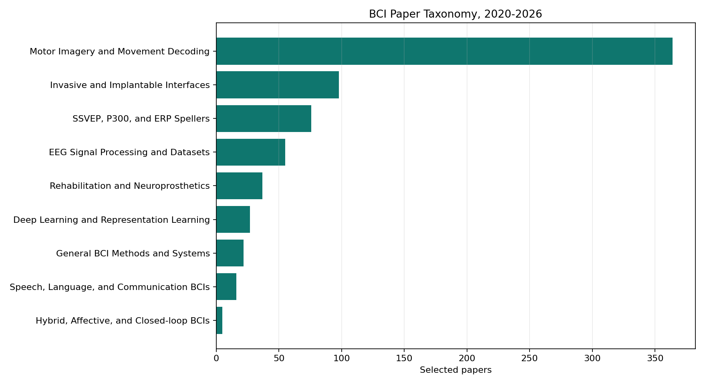
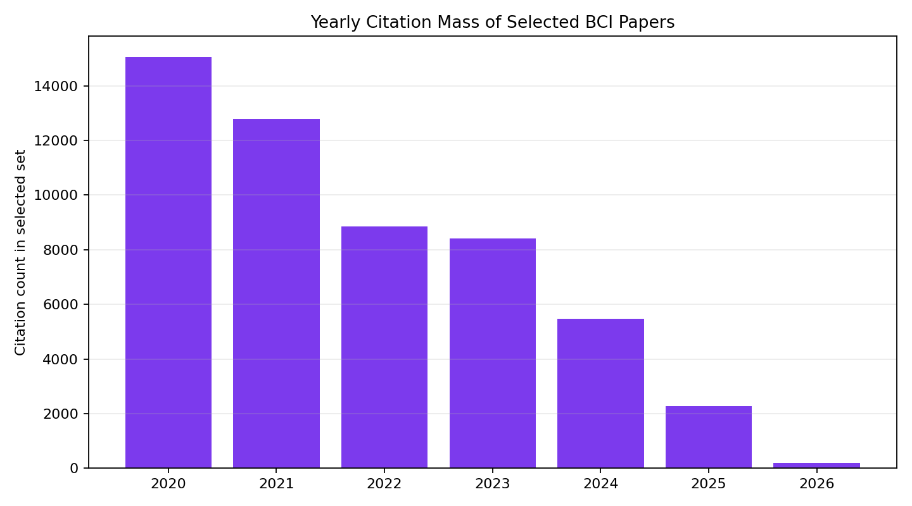

700selected papers
7years covered
53,035citation count total
9topic categories
Taxonomy


Motor Imagery and Movement Decoding364 papers
Invasive and Implantable Interfaces98 papers
SSVEP, P300, and ERP Spellers76 papers
EEG Signal Processing and Datasets55 papers
Rehabilitation and Neuroprosthetics37 papers
Deep Learning and Representation Learning27 papers
General BCI Methods and Systems22 papers
Speech, Language, and Communication BCIs16 papers
Hybrid, Affective, and Closed-loop BCIs5 papers
2020
| Rank | Paper | Venue | Citations | Category |
|---|---|---|---|---|
| 1 | Brain-Computer Interfaces Ricardo Chavarriaga, J. Millán | Handbook of Clinical Neurology | 548 | General BCI Methods and Systems |
| 2 | Current Status, Challenges, and Possible Solutions of EEG-Based Brain-Computer Interface: A Comprehensive Review M. Rashid, N. Sulaiman, A. P. Majeed, R. Musa, A. Nasir, Bifta Sama Bari, et al. | Frontiers in Neurorobotics | 420 | EEG Signal Processing and Datasets |
| 3 | BCI for stroke rehabilitation: motor and beyond R. Mane, Tushar Chouhan, Cuntai Guan | Journal of Neural Engineering | 386 | Motor Imagery and Movement Decoding |
| 4 | Transfer Learning for EEG-Based Brain–Computer Interfaces: A Review of Progress Made Since 2016 Dongrui Wu, Yifan Xu, Baoliang Lu | IEEE Transactions on Cognitive and Developmental Systems | 381 | Motor Imagery and Movement Decoding |
| 5 | EEG-TCNet: An Accurate Temporal Convolutional Network for Embedded Motor-Imagery Brain–Machine Interfaces T. Ingolfsson, Michael Hersche, Xiaying Wang, Nobuaki Kobayashi, Lukas Cavigelli, L. Benini | IEEE International Conference on Systems, Man and Cybernetics | 355 | Motor Imagery and Movement Decoding |
| 6 | Making Sense of Spatio-Temporal Preserving Representations for EEG-Based Human Intention Recognition Dalin Zhang, Lina Yao, Kaixuan Chen, Sen Wang, Xiaojun Chang, Yunhao Liu | IEEE Transactions on Cybernetics | 324 | Motor Imagery and Movement Decoding |
| 7 | EEG-Based Brain-Computer Interfaces (BCIs): A Survey of Recent Studies on Signal Sensing Technologies and Computational Intelligence Approaches and Their Applications Xiaotong Gu, Zehong Cao, A. Jolfaei, Peng Xu, Dongrui Wu, T. Jung, et al. | IEEE/ACM Transactions on Computational Biology & Bioinformatics | 322 | Deep Learning and Representation Learning |
| 8 | Intra- and Inter-subject Variability in EEG-Based Sensorimotor Brain Computer Interface: A Review S. Saha, M. Baumert | Frontiers in Computational Neuroscience | 275 | Motor Imagery and Movement Decoding |
| 9 | Understanding Self-Training for Gradual Domain Adaptation Ananya Kumar, Tengyu Ma, Percy Liang | International Conference on Machine Learning | 268 | Deep Learning and Representation Learning |
| 10 | Adaptive transfer learning for EEG motor imagery classification with deep Convolutional Neural Network Kaishuo Zhang, Neethu Robinson, Seong-Whan Lee, Cuntai Guan | Neural Networks | 266 | Motor Imagery and Movement Decoding |
| 11 | EEG-Based BCI Emotion Recognition: A Survey E. Torres P., E. Torres, Myriam Hernández-Álvarez, S. Yoo | Italian National Conference on Sensors | 249 | SSVEP, P300, and ERP Spellers |
| 12 | Brain-Controlled Robotic Arm System Based on Multi-Directional CNN-BiLSTM Network Using EEG Signals Ji-Hoon Jeong, Kyung-Hwan Shim, Dong-Joo Kim, Seong-Whan Lee | IEEE transactions on neural systems and rehabilitation engineering | 246 | Motor Imagery and Movement Decoding |
| 13 | Deep Representation-Based Domain Adaptation for Nonstationary EEG Classification He Zhao, Qingqing Zheng, Kai Ma, Huiqi Li, Yefeng Zheng | IEEE Transactions on Neural Networks and Learning Systems | 240 | Motor Imagery and Movement Decoding |
| 14 | Review on motor imagery based BCI systems for upper limb post-stroke neurorehabilitation: From designing to application M. A. Khan, Rig Das, H. Iversen, S. Puthusserypady | Comput. Biol. Medicine | 231 | Motor Imagery and Movement Decoding |
| 15 | Augmented Reality for Robotics: A Review Z. Makhataeva, H. A. Varol | Robotics | 229 | Rehabilitation and Neuroprosthetics |
| 16 | Internal Feature Selection Method of CSP Based on L1-Norm and Dempster–Shafer Theory Jing Jin, Ruocheng Xiao, I. Daly, Yangyang Miao, Xingyu Wang, A. Cichocki | IEEE Transactions on Neural Networks and Learning Systems | 223 | Motor Imagery and Movement Decoding |
| 17 | Stabilization of a brain-computer interface via the alignment of low-dimensional spaces of neural activity A. D. Degenhart, William E. Bishop, E. Oby, E. Tyler-Kabara, S. Chase, A. Batista, et al. | Nature Biomedical Engineering | 214 | Motor Imagery and Movement Decoding |
| 18 | Artificial intelligence within the interplay between natural and artificial computation: Advances in data science, trends and applications J. Górriz, J. Ramírez, A. Ortiz, Francisco J. Martínez-Murcia, F. Segovia, J. Suckling, et al. | Neurocomputing | 213 | SSVEP, P300, and ERP Spellers |
| 19 | EEG-Based Emotion Classification Using a Deep Neural Network and Sparse Autoencoder Junxiu Liu, Guopei Wu, Yuling Luo, Senhui Qiu, Su Yang, Wei Li, et al. | Frontiers in Systems Neuroscience | 209 | Invasive and Implantable Interfaces |
| 20 | Motor neuroprosthesis implanted with neurointerventional surgery improves capacity for activities of daily living tasks in severe paralysis: first in-human experience T. Oxley, P. Yoo, G. Rind, S. Ronayne, Sarah C. M. Lee, C. Bird, et al. | Journal of NeuroInterventional Surgery | 195 | Motor Imagery and Movement Decoding |
| 21 | Generative Adversarial Networks-Based Data Augmentation for Brain–Computer Interface Fatemeh Fahimi, S. Došen, K. Ang, N. Mrachacz‐Kersting, Cuntai Guan | IEEE Transactions on Neural Networks and Learning Systems | 193 | Motor Imagery and Movement Decoding |
| 22 | EEG-Inception: A Novel Deep Convolutional Neural Network for Assistive ERP-Based Brain-Computer Interfaces E. Santamaría-Vázquez, V. Martínez-Cagigal, F. Vaquerizo-Villar, R. Hornero | IEEE transactions on neural systems and rehabilitation engineering | 183 | Motor Imagery and Movement Decoding |
| 23 | Motor Imagery Classification via Temporal Attention Cues of Graph Embedded EEG Signals Dalin Zhang, Kaixuan Chen, Debao Jian, Lina Yao | IEEE journal of biomedical and health informatics | 172 | Motor Imagery and Movement Decoding |
| 24 | GCNs-Net: A Graph Convolutional Neural Network Approach for Decoding Time-Resolved EEG Motor Imagery Signals Xiangmin Lun, Shuyue Jia, Yimin Hou, Yan Shi, Y. Li, Hanrui Yang, et al. | IEEE Transactions on Neural Networks and Learning Systems | 169 | Motor Imagery and Movement Decoding |
| 25 | Neural signal analysis with memristor arrays towards high-efficiency brain–machine interfaces Zhengwu Liu, Jianshi Tang, B. Gao, P. Yao, Xinyi Li, Dingkun Liu, et al. | Nature Communications | 167 | Motor Imagery and Movement Decoding |
| 26 | EEG-based mental workload estimation using deep BLSTM-LSTM network and evolutionary algorithm D. D. Chakladar, Shubhashis Dey, P. Roy, D. Dogra | Biomedical Signal Processing and Control | 160 | SSVEP, P300, and ERP Spellers |
| 27 | Hand Knob Area of Premotor Cortex Represents the Whole Body in a Compositional Way Francis R. Willett, Darrel R. Deo, Donald T. Avansino, P. Rezaii, L. Hochberg, J. Henderson, et al. | Cell | 159 | Motor Imagery and Movement Decoding |
| 28 | Electroencephalography. Gernot R. Müller-Putz | Handbook of Clinical Neurology | 158 | Motor Imagery and Movement Decoding |
| 29 | Assessment of the Efficacy of EEG-Based MI-BCI With Visual Feedback and EEG Correlates of Mental Fatigue for Upper-Limb Stroke Rehabilitation Ruyi Foong, N. Tang, E. Chew, K. Chua, K. Ang, C. Quek, et al. | IEEE Transactions on Biomedical Engineering | 158 | Motor Imagery and Movement Decoding |
| 30 | Brain (re)organisation following amputation: Implications for phantom limb pain T. Makin, H. Flor | NeuroImage | 154 | Motor Imagery and Movement Decoding |
| 31 | Motor imagery EEG recognition based on conditional optimization empirical mode decomposition and multi-scale convolutional neural network Xianlun Tang, Wei Li, Xingchen Li, Weichang Ma, Xiaoyuan Dang | Expert systems with applications | 146 | Motor Imagery and Movement Decoding |
| 32 | Comparing user-dependent and user-independent training of CNN for SSVEP BCI Aravind Ravi, Nargess Heydari Beni, J. Manuel, N. Jiang | Journal of Neural Engineering | 143 | SSVEP, P300, and ERP Spellers |
| 33 | Implementing Over 100 Command Codes for a High-Speed Hybrid Brain-Computer Interface Using Concurrent P300 and SSVEP Features Minpeng Xu, Jin Han, Yijun Wang, T. Jung, Dong Ming | IEEE Transactions on Biomedical Engineering | 139 | SSVEP, P300, and ERP Spellers |
| 34 | A novel approach of decoding EEG four-class motor imagery tasks via scout ESI and CNN Yimin Hou, Lu Zhou, Shuyue Jia, Xiangmin Lun | Journal of Neural Engineering | 137 | Motor Imagery and Movement Decoding |
| 35 | Employing PCA and t-statistical approach for feature extraction and classification of emotion from multichannel EEG signal Md. Asadur Rahman, Md. Foisal Hossain, M. Hossain, Rasel Ahmmed | - | 135 | Motor Imagery and Movement Decoding |
| 36 | Integrated and Portable Magnetometer Based on Nitrogen‐Vacancy Ensembles in Diamond F. M. Stürner, A. Brenneis, T. Buck, Julian Kassel, R. Rölver, T. Fuchs, et al. | Advanced Quantum Technologies | 134 | General BCI Methods and Systems |
| 37 | Neural Decoding of Imagined Speech and Visual Imagery as Intuitive Paradigms for BCI Communication Seo-Hyun Lee, Minji Lee, Seong-Whan Lee | IEEE transactions on neural systems and rehabilitation engineering | 133 | EEG Signal Processing and Datasets |
| 38 | Brain-Computer Interface-Based Soft Robotic Glove Rehabilitation for Stroke Nicholas Cheng, K. Phua, H. Lai, P. K. Tam, K. Tang, K. Cheng, et al. | IEEE Transactions on Biomedical Engineering | 131 | Motor Imagery and Movement Decoding |
| 39 | Brain Computer Interfaces for Improving the Quality of Life of Older Adults and Elderly Patients Abdelkader Nasreddine Belkacem, N. Jamil, J. Palmer, Sofia Ouhbi, Chao Chen | Frontiers in Neuroscience | 131 | Motor Imagery and Movement Decoding |
| 40 | Real-Time EEG–EMG Human–Machine Interface-Based Control System for a Lower-Limb Exoskeleton S. Gordleeva, S. Lobov, N. Grigorev, A. Savosenkov, M. Shamshin, M. Lukoyanov, et al. | IEEE Access | 129 | Motor Imagery and Movement Decoding |
| 41 | Federated Transfer Learning for EEG Signal Classification Ce Ju, Dashan Gao, R. Mane, Ben Tan, Yang Liu, Cuntai Guan | Annual International Conference of the IEEE Engineering in Medicine and Biology Society | 129 | Motor Imagery and Movement Decoding |
| 42 | Cross-Dataset Variability Problem in EEG Decoding With Deep Learning Lichao Xu, Minpeng Xu, Yufeng Ke, X. An, Shuang Liu, Dong Ming | Frontiers in Human Neuroscience | 129 | Deep Learning and Representation Learning |
| 43 | Advances in Multimodal Emotion Recognition Based on Brain–Computer Interfaces Zhipeng He, Zina Li, Fuzhou Yang, Lei Wang, Jingcong Li, Chengju Zhou, et al. | Brain Science | 129 | Invasive and Implantable Interfaces |
| 44 | Prognosis for patients with cognitive motor dissociation identified by brain-computer interface Jiahui Pan, Qiuyou Xie, Pengmin Qin, Yan Chen, Yanbin He, Haiyun Huang, et al. | Brain : a journal of neurology | 128 | Motor Imagery and Movement Decoding |
| 45 | Transfer learning for motor imagery based brain-computer interfaces: A tutorial Dongrui Wu, Xue Jiang, Ruimin Peng | Neural Networks | 126 | Motor Imagery and Movement Decoding |
| 46 | Brain computer interface based applications for training and rehabilitation of students with neurodevelopmental disorders. A literature review George P Papanastasiou, A. Drigas, C. Skianis, Miltiadis Demetrios Lytras | Heliyon | 125 | Rehabilitation and Neuroprosthetics |
| 47 | Brain Computer Interface Treatment for Motor Rehabilitation of Upper Extremity of Stroke Patients—A Feasibility Study Marc Sebastián-Romagosa, W. Cho, R. Ortner, Nensi Murovec, T. V. von Oertzen, K. Kamada, et al. | Frontiers in Neuroscience | 125 | Motor Imagery and Movement Decoding |
| 48 | Decoding Imagined and Spoken Phrases From Non-invasive Neural (MEG) Signals Debadatta Dash, P. Ferrari, Jun Wang | Frontiers in Neuroscience | 124 | Motor Imagery and Movement Decoding |
| 49 | Learning across multi-stimulus enhances target recognition methods in SSVEP-based BCIs C. Wong, Feng Wan, Boyu Wang, Z. Wang, Wenya Nan, K. Lao, et al. | Journal of Neural Engineering | 123 | SSVEP, P300, and ERP Spellers |
| 50 | Bispectrum-Based Channel Selection for Motor Imagery Based Brain-Computer Interfacing Jing Jin, Chang Liu, I. Daly, Yangyang Miao, Shurui Li, Xingyu Wang, et al. | IEEE transactions on neural systems and rehabilitation engineering | 122 | Motor Imagery and Movement Decoding |
| 51 | Towards BCI-Based Interfaces for Augmented Reality: Feasibility, Design and Evaluation Hakim Si-Mohammed, Jimmy Petit, C. Jeunet, F. Argelaguet, F. Spindler, A. Évain, et al. | IEEE Transactions on Visualization and Computer Graphics | 122 | Motor Imagery and Movement Decoding |
| 52 | Restoring the Sense of Touch Using a Sensorimotor Demultiplexing Neural Interface. P. Ganzer, S. Colachis, Michael A. Schwemmer, D. Friedenberg, Collin Dunlap, Carly E. Swiftney, et al. | Cell | 122 | Motor Imagery and Movement Decoding |
| 53 | Deep learning-based BCI for gait decoding from EEG with LSTM recurrent neural network S. Tortora, S. Ghidoni, C. Chisari, S. Micera, F. Artoni | Journal of Neural Engineering | 120 | Motor Imagery and Movement Decoding |
| 54 | Research on How Human Intelligence, Consciousness, and Cognitive Computing Affect the Development of Artificial Intelligence Yanyan Dong, Jie Hou, Ning Zhang, Maocong Zhang | Complex | 120 | General BCI Methods and Systems |
| 55 | Brain computer interface advancement in neurosciences: Applications and issues S. Mudgal, S. Sharma, Jitender Chaturvedi, A. Sharma | Interdisciplinary Neurosurgery | 117 | Speech, Language, and Communication BCIs |
| 56 | Brain-computer interfaces: Definitions and principles. J. Wolpaw, J. Millán, N. Ramsey | Handbook of Clinical Neurology | 117 | Motor Imagery and Movement Decoding |
| 57 | A Multi-view CNN with Novel Variance Layer for Motor Imagery Brain Computer Interface R. Mane, Neethu Robinson, A. P. Vinod, Seong-Whan Lee, Cuntai Guan | Annual International Conference of the IEEE Engineering in Medicine and Biology Society | 115 | Motor Imagery and Movement Decoding |
| 58 | Multimodal treatment for spinal cord injury: a sword of neuroregeneration upon neuromodulation Ya Zheng, Yeran Mao, T. Yuan, Dong-sheng Xu, Li-ming Cheng | Neural Regeneration Research | 115 | Motor Imagery and Movement Decoding |
| 59 | An EEG channel selection method for motor imagery based brain-computer interface and neurofeedback using Granger causality Hesam Varsehi, S. Firoozabadi | Neural Networks | 113 | Motor Imagery and Movement Decoding |
| 60 | A Multi-Scale Fusion Convolutional Neural Network Based on Attention Mechanism for the Visualization Analysis of EEG Signals Decoding Donglin Li, Jiacan Xu, Jianhui Wang, Xiaoke Fang, Ying Ji | IEEE transactions on neural systems and rehabilitation engineering | 112 | Motor Imagery and Movement Decoding |
| 61 | Recognizing Emotions Evoked by Music Using CNN-LSTM Networks on EEG Signals S. Sheykhivand, Zohreh Mousavi, T. Y. Rezaii, A. Farzamnia | IEEE Access | 110 | Motor Imagery and Movement Decoding |
| 62 | Data Augmentation for Motor Imagery Signal Classification Based on a Hybrid Neural Network Kai Zhang, Guanghua Xu, Zezhen Han, Kaiquan Ma, Xiaowei Zheng, Longting Chen, et al. | Italian National Conference on Sensors | 109 | Motor Imagery and Movement Decoding |
| 63 | Spatial Filtering in SSVEP-Based BCIs: Unified Framework and New Improvements C. Wong, Boyu Wang, Z. Wang, K. Lao, Agostinho C. Rosa, Feng Wan | IEEE Transactions on Biomedical Engineering | 108 | SSVEP, P300, and ERP Spellers |
| 64 | Locally robust EEG feature selection for individual-independent emotion recognition Z. Yin, Lei Liu, Jianing Chen, Boxi Zhao, Yongxiong Wang | Expert systems with applications | 106 | SSVEP, P300, and ERP Spellers |
| 65 | Motor imagery BCI classification based on novel two‐dimensional modelling in empirical wavelet transform M. Sadiq, Xiaojun Yu, Zhaohui Yuan, Muhammad Zulkifal Aziz | Electronics Letters | 106 | Motor Imagery and Movement Decoding |
| 66 | The Potential of Stereotactic-EEG for Brain-Computer Interfaces: Current Progress and Future Directions Christian Herff, D. Krusienski, P. Kubben | Frontiers in Neuroscience | 105 | Invasive and Implantable Interfaces |
| 67 | Combining brain-computer interface and virtual reality for rehabilitation in neurological diseases: a narrative review. Dong Wen, Yanqian Fan, S. Hsu, Xu Jian, Yanhong Zhou, Jianxin Tao, et al. | Annals of Physical and Rehabilitation Medicine | 104 | Motor Imagery and Movement Decoding |
| 68 | Using the General Linear Model to Improve Performance in fNIRS Single Trial Analysis and Classification: A Perspective A. von Lühmann, A. Ortega-Martinez, D. Boas, M. Yücel | Frontiers in Human Neuroscience | 103 | EEG Signal Processing and Datasets |
| 69 | A Deep Neural Network for SSVEP-Based Brain-Computer Interfaces O. B. Guney, Muhtasham Oblokulov, Huseyin Ozkan | IEEE Transactions on Biomedical Engineering | 102 | SSVEP, P300, and ERP Spellers |
| 70 | An Accurate EEGNet-based Motor-Imagery Brain–Computer Interface for Low-Power Edge Computing Xiaying Wang, Michael Hersche, Batuhan Tömekçe, Burak Kaya, Michele Magno, L. Benini | IEEE International Symposium on Medical Measurements and Applications | 102 | Motor Imagery and Movement Decoding |
| 71 | Multi-Scale Neural Network for EEG Representation Learning in BCI Wonjun Ko, Eunjin Jeon, Seungwoo Jeong, Heung-Il Suk | IEEE Computational Intelligence Magazine | 102 | Deep Learning and Representation Learning |
| 72 | Power-saving design opportunities for wireless intracortical brain computer interfaces N. Even-Chen, D. Muratore, S. Stavisky, L. Hochberg, J. Henderson, B. Murmann, et al. | Nature Biomedical Engineering | 101 | Invasive and Implantable Interfaces |
| 73 | A Simplified CNN Classification Method for MI-EEG via the Electrode Pairs Signals Xiangmin Lun, Zhenglin Yu, Tao Chen, F. Wang, Yimin Hou | Frontiers in Human Neuroscience | 100 | Motor Imagery and Movement Decoding |
| 74 | Single Trial Decoding of Movement Intentions Using Functional Ultrasound Neuroimaging S. Norman, D. Maresca, V. Christopoulos, Whitney S. Griggs, C. Demené, M. Tanter, et al. | bioRxiv | 98 | Motor Imagery and Movement Decoding |
| 75 | MI-EEGNET: A novel Convolutional Neural Network for motor imagery classification. Mouad Riyad, Mohammed Khalil, A. Adib | Journal of Neuroscience Methods | 98 | Motor Imagery and Movement Decoding |
| 76 | A review of user training methods in brain computer interfaces based on mental tasks A. Roc, Léa Pillette, J. Mladenović, Camille Benaroch, B. N'Kaoua, C. Jeunet, et al. | Journal of Neural Engineering | 98 | Hybrid, Affective, and Closed-loop BCIs |
| 77 | Decoding Movement-Related Cortical Potentials Based on Subject-Dependent and Section-Wise Spectral Filtering Ji-Hoon Jeong, No-Sang Kwak, Cuntai Guan, Seong-Whan Lee | IEEE transactions on neural systems and rehabilitation engineering | 97 | Motor Imagery and Movement Decoding |
| 78 | Soft and Ion‐Conducting Materials in Bioelectronics: From Conducting Polymers to Hydrogels Manping Jia, M. Rolandi | Advanced Healthcare Materials | 96 | Rehabilitation and Neuroprosthetics |
| 79 | Decoding spoken English from intracortical electrode arrays in dorsal precentral gyrus G. Wilson, S. Stavisky, Francis R. Willett, Donald T. Avansino, Jessica N. Kelemen, L. Hochberg, et al. | Journal of Neural Engineering | 95 | Motor Imagery and Movement Decoding |
| 80 | Enhanced Accuracy for Multiclass Mental Workload Detection Using Long Short-Term Memory for Brain–Computer Interface Umer Asgher, Khurram Khalil, Muhammad Jawad Khan, Riaz Ahmad, S. I. Butt, Y. Ayaz, et al. | Frontiers in Neuroscience | 94 | Deep Learning and Representation Learning |
| 81 | EEG-based intention recognition with deep recurrent-convolution neural network: Performance and channel selection by Grad-CAM Yurong Li, Hao Yang, Jixiang Li, Dongyi Chen, Min Du | Neurocomputing | 93 | Motor Imagery and Movement Decoding |
| 82 | Combination of Augmented Reality Based Brain- Computer Interface and Computer Vision for High-Level Control of a Robotic Arm Xiaogang Chen, Xiaoshan Huang, Yijun Wang, Xiaorong Gao | IEEE transactions on neural systems and rehabilitation engineering | 93 | SSVEP, P300, and ERP Spellers |
| 83 | Thinker invariance: enabling deep neural networks for BCI across more people Demetres Kostas, Frank Rudzicz | Journal of Neural Engineering | 91 | Motor Imagery and Movement Decoding |
| 84 | A Novel Simplified Convolutional Neural Network Classification Algorithm of Motor Imagery EEG Signals Based on Deep Learning Feng Li, Fan He, Fei Wang, Dengyong Zhang, Yi Xia, Xiaoyu Li | Applied Sciences | 91 | Motor Imagery and Movement Decoding |
| 85 | Enhancing Brain Plasticity to Promote Stroke Recovery F. Su, Wendong Xu | Frontiers in Neurology | 91 | Rehabilitation and Neuroprosthetics |
| 86 | Decoding EEG Rhythms During Action Observation, Motor Imagery, and Execution for Standing and Sitting Rattanaphon Chaisaen, Phairot Autthasan, Nopparada Mingchinda, Pitshaporn Leelaarporn, Narin Kunaseth, Suppakorn Tammajarung, et al. | IEEE Sensors Journal | 90 | Motor Imagery and Movement Decoding |
| 87 | The current state of electrocorticography-based brain-computer interfaces. K. Miller, D. Hermes, N. Staff | Neurosurgical Focus | 90 | Motor Imagery and Movement Decoding |
| 88 | Continuous EEG Decoding of Pilots’ Mental States Using Multiple Feature Block-Based Convolutional Neural Network Dae-Hyeok Lee, Ji-Hoon Jeong, Kiduk Kim, Baek-Woon Yu, Seong-Whan Lee | IEEE Access | 90 | Invasive and Implantable Interfaces |
| 89 | The combination of brain-computer interfaces and artificial intelligence: applications and challenges Xiayin Zhang, Ziyue Ma, Huaijin Zheng, Tongkeng Li, Kexin Chen, Xun Wang, et al. | Annals of Translational Medicine | 90 | Motor Imagery and Movement Decoding |
| 90 | Evaluation of Hyperparameter Optimization in Machine and Deep Learning Methods for Decoding Imagined Speech EEG Ciaran Cooney, A. Korik, R. Folli, D. Coyle | Italian National Conference on Sensors | 89 | SSVEP, P300, and ERP Spellers |
| 91 | BCI-Based Rehabilitation on the Stroke in Sequela Stage Yangyang Miao, Shugeng Chen, Xinru Zhang, Jing Jin, Ren Xu, I. Daly, et al. | Journal of Neural Transplantation and Plasticity | 89 | Motor Imagery and Movement Decoding |
| 92 | Developing a Novel Tactile P300 Brain-Computer Interface With a Cheeks-Stim Paradigm Jing Jin, Zongmei Chen, Ren Xu, Yangyang Miao, Xingyu Wang, T. Jung | IEEE Transactions on Biomedical Engineering | 89 | Motor Imagery and Movement Decoding |
| 93 | A comprehensive assessment of Brain Computer Interfaces: Recent trends and challenges. Drishti Yadav, S. Yadav, K. Veer | Journal of Neuroscience Methods | 89 | Speech, Language, and Communication BCIs |
| 94 | A novel method of motor imagery classification using eeg signal V. K, D. A, M. J, S. M, A. A, S Amiri Iraj | Artif. Intell. Medicine | 88 | Motor Imagery and Movement Decoding |
| 95 | Motor imagery recognition with automatic EEG channel selection and deep learning Han Zhang, Xing Zhao, Zexu Wu, Biao Sun, Ting Li | Journal of Neural Engineering | 88 | Motor Imagery and Movement Decoding |
| 96 | The history of BCI: From a vision for the future to real support for personhood in people with locked-in syndrome A. Kübler | Neuroethics | 85 | General BCI Methods and Systems |
| 97 | Supramolecular Peptide Hydrogel-Based Soft Neural Interface Augments Brain Signals through Three-Dimensional Electrical Network. Jiyoung Nam, Hyun-Kyoung Lim, Nam Hyeong Kim, Jong Kwan Park, Eun Sung Kang, Yong-Tae Kim, et al. | ACS Nano | 84 | SSVEP, P300, and ERP Spellers |
| 98 | Recognition of EEG Signal Motor Imagery Intention Based on Deep Multi-View Feature Learning Jiacan Xu, Hao-Ze Zheng, Jianhui Wang, Donglin Li, Xiaoke Fang | Italian National Conference on Sensors | 83 | Motor Imagery and Movement Decoding |
| 99 | A Wearable Brain–Computer Interface Instrument for Augmented Reality-Based Inspection in Industry 4.0 L. Angrisani, P. Arpaia, Antonio Esposito, Nicola Moccaldi | IEEE Transactions on Instrumentation and Measurement | 82 | SSVEP, P300, and ERP Spellers |
| 100 | Applications of brain-computer interfaces to the control of robotic and prosthetic arms. Marco Vilela, L. Hochberg | Handbook of Clinical Neurology | 82 | Motor Imagery and Movement Decoding |
2021
| Rank | Paper | Venue | Citations | Category |
|---|---|---|---|---|
| 1 | High-performance brain-to-text communication via handwriting Francis R. Willett, Donald T. Avansino, L. Hochberg, J. Henderson, K. Shenoy | Nature | 848 | Motor Imagery and Movement Decoding |
| 2 | Deep learning techniques for classification of electroencephalogram (EEG) motor imagery (MI) signals: a review Hamdi Altaheri, G. Muhammad, M. Alsulaiman, S. Amin, G. Altuwaijri, Wadood Abdul, et al. | Neural computing & applications (Print) | 551 | Motor Imagery and Movement Decoding |
| 3 | A brain-computer interface that evokes tactile sensations improves robotic arm control Sharlene N. Flesher, J. Downey, Jeffrey M. Weiss, Christopher L. Hughes, Angelica J. Herrera, E. Tyler-Kabara, et al. | Science | 503 | Motor Imagery and Movement Decoding |
| 4 | Deep learning for motor imagery EEG-based classification: A review A. Al-Saegh, Shefa A. Dawwd, J. Abdul-Jabbar | Biomedical Signal Processing and Control | 408 | Motor Imagery and Movement Decoding |
| 5 | BENDR: Using Transformers and a Contrastive Self-Supervised Learning Task to Learn From Massive Amounts of EEG Data Demetres Kostas, Stephane T Aroca-Ouellette, Frank Rudzicz | Frontiers in Human Neuroscience | 354 | SSVEP, P300, and ERP Spellers |
| 6 | Interface, interaction, and intelligence in generalized brain-computer interfaces. Xiaorong Gao, Yijun Wang, Xiaogang Chen, Shangkai Gao | Trends in Cognitive Sciences | 263 | Speech, Language, and Communication BCIs |
| 7 | Neural Decoding of EEG Signals with Machine Learning: A Systematic Review Maham Saeidi, W. Karwowski, F. Farahani, K. Fiok, R. Taiar, P. Hancock, et al. | Brain Science | 244 | Motor Imagery and Movement Decoding |
| 8 | Summary of over Fifty Years with Brain-Computer Interfaces—A Review Aleksandra Kawala-Sterniuk, Natalia Browarska, Amir F. Al-Bakri, Mariusz Pelc, J. Zygarlicki, Michaela Sidikova, et al. | Brain Science | 236 | Speech, Language, and Communication BCIs |
| 9 | FBCNet: A Multi-view Convolutional Neural Network for Brain-Computer Interface R. Mane, E. Chew, K. Chua, K. Ang, Neethu Robinson, A. P. Vinod, et al. | arXiv.org | 229 | Motor Imagery and Movement Decoding |
| 10 | Transformer-based Spatial-Temporal Feature Learning for EEG Decoding Yonghao Song, Xueyu Jia, Lie Yang, Longhan Xie | arXiv.org | 219 | Deep Learning and Representation Learning |
| 11 | A Sliding Window Common Spatial Pattern for Enhancing Motor Imagery Classification in EEG-BCI Pramod Gaur, Harsh Gupta, Anirban Chowdhury, K. McCreadie, R. B. Pachori, Hui Wang | IEEE Transactions on Instrumentation and Measurement | 219 | Motor Imagery and Movement Decoding |
| 12 | Brain-Computer Interface: Advancement and Challenges M. F. Mridha, S. Das, Muhammad Mohsin Kabir, Aklima Akter Lima, Md. Rashedul Islam, Yutaka Watanobe | Italian National Conference on Sensors | 213 | EEG Signal Processing and Datasets |
| 13 | Electroencephalography-based motor imagery classification using temporal convolutional network fusion Yazeed K. Musallam, Nasser I. AlFassam, Muhammad Ghulam, S. Amin, M. Alsulaiman, Wadood Abdul, et al. | Biomedical Signal Processing and Control | 212 | Motor Imagery and Movement Decoding |
| 14 | EEG-inception: an accurate and robust end-to-end neural network for EEG-based motor imagery classification Ce Zhang, Young-Keun Kim, A. Eskandarian | Journal of Neural Engineering | 194 | Motor Imagery and Movement Decoding |
| 15 | Improving the Performance of Individually Calibrated SSVEP-BCI by Task- Discriminant Component Analysis Bingchuan Liu, Xiaogang Chen, Nanlin Shi, Yijun Wang, Shangkai Gao, Xiaorong Gao | IEEE transactions on neural systems and rehabilitation engineering | 177 | SSVEP, P300, and ERP Spellers |
| 16 | Physical principles of brain–computer interfaces and their applications for rehabilitation, robotics and control of human brain states A. Hramov, V. Maksimenko, A. Pisarchik | - | 173 | Motor Imagery and Movement Decoding |
| 17 | LGGNet: Learning From Local-Global-Graph Representations for Brain–Computer Interface Yi Ding, Neethu Robinson, Chengxuan Tong, Qiuhao Zeng, Cuntai Guan | IEEE Transactions on Neural Networks and Learning Systems | 171 | Deep Learning and Representation Learning |
| 18 | MIN2Net: End-to-End Multi-Task Learning for Subject-Independent Motor Imagery EEG Classification Phairot Autthasan, Rattanaphon Chaisaen, Thapanun Sudhawiyangkul, Phurin Rangpong, Suktipol Kiatthaveephong, Nat Dilokthanakul, et al. | IEEE Transactions on Biomedical Engineering | 166 | Motor Imagery and Movement Decoding |
| 19 | A Comprehensive Review on Critical Issues and Possible Solutions of Motor Imagery Based Electroencephalography Brain-Computer Interface Amardeep Singh, Ali Hussain, Sunil Lal, H. Guesgen | Italian National Conference on Sensors | 164 | Motor Imagery and Movement Decoding |
| 20 | Plug-and-Play Domain Adaptation for Cross-Subject EEG-based Emotion Recognition Li-Ming Zhao, Xue Yan, Bao-Liang Lu | AAAI Conference on Artificial Intelligence | 160 | Invasive and Implantable Interfaces |
| 21 | Recommendations for Responsible Development and Application of Neurotechnologies S. Goering, E. Klein, Laura Specker Sullivan, Anna Wexler, Blaise Agüera y Arcas, Guoqiang Bi, et al. | Neuroethics | 153 | General BCI Methods and Systems |
| 22 | Decoding Covert Speech From EEG-A Comprehensive Review J. T. Panachakel, A. G. Ramakrishnan | Frontiers in Neuroscience | 145 | EEG Signal Processing and Datasets |
| 23 | A Temporal-Spectral-Based Squeeze-and- Excitation Feature Fusion Network for Motor Imagery EEG Decoding Yang Li, Lianghui Guo, Yu Liu, Jingyu Liu, F. Meng | IEEE transactions on neural systems and rehabilitation engineering | 142 | Motor Imagery and Movement Decoding |
| 24 | Brain-computer interface for hands-free teleoperation of construction robots Yizhi Liu, Mahmoud Habibnezhad, H. Jebelli | - | 141 | Motor Imagery and Movement Decoding |
| 25 | Motion Artifact Removal Techniques for Wearable EEG and PPG Sensor Systems D. Seok, Sanghyun Lee, Minjae Kim, Jaeouk Cho, Chul Kim | Frontiers in Electronics | 139 | Motor Imagery and Movement Decoding |
| 26 | Spatio-Spectral Feature Representation for Motor Imagery Classification Using Convolutional Neural Networks Ji-Seon Bang, Min-Ho Lee, S. Fazli, Cuntai Guan, Seong-Whan Lee | IEEE Transactions on Neural Networks and Learning Systems | 130 | Motor Imagery and Movement Decoding |
| 27 | A systematic review on hybrid EEG/fNIRS in brain-computer interface Ziming Liu, J. Shore, Miao Wang, Fengpei Yuan, Aaron T. Buss, Xiaopeng Zhao | Biomedical Signal Processing and Control | 130 | EEG Signal Processing and Datasets |
| 28 | 4D attention-based neural network for EEG emotion recognition Guowen Xiao, Mengwen Ye, Bowen Xu, Zhimin Chen, Quansheng Ren | Cognitive Neurodynamics | 126 | Invasive and Implantable Interfaces |
| 29 | Hybrid deep neural network using transfer learning for EEG motor imagery decoding Ruilong Zhang, Q. Zong, Liqian Dou, Xinyi Zhao, Yifan Tang, Zhiyu Li | Biomedical Signal Processing and Control | 126 | Motor Imagery and Movement Decoding |
| 30 | Robust Similarity Measurement Based on a Novel Time Filter for SSVEPs Detection Jing Jin, Zhiqiang Wang, Ren Xu, Chang Liu, Xingyu Wang, A. Cichocki | IEEE Transactions on Neural Networks and Learning Systems | 121 | SSVEP, P300, and ERP Spellers |
| 31 | Functional ultrasound imaging: a new imaging modality for neuroscience. T. Deffieux, C. Demené, M. Tanter | Neuroscience | 120 | Invasive and Implantable Interfaces |
| 32 | Data Analytics in Steady-State Visual Evoked Potential-Based Brain–Computer Interface: A Review Yue Zhang, S. Xie, He Wang, Zhiqiang Zhang | IEEE Sensors Journal | 118 | SSVEP, P300, and ERP Spellers |
| 33 | Home Use of a Percutaneous Wireless Intracortical Brain-Computer Interface by Individuals With Tetraplegia J. Simeral, Tommy Hosman, J. Saab, Sharlene N. Flesher, Marco Vilela, Brian Franco, et al. | IEEE Transactions on Biomedical Engineering | 117 | Motor Imagery and Movement Decoding |
| 34 | RETRACTED: A 1D CNN for high accuracy classification and transfer learning in motor imagery EEG-based brain-computer interface F. Mattioli, C. Porcaro, G. Baldassarre | - | 117 | Motor Imagery and Movement Decoding |
| 35 | Dynamic Joint Domain Adaptation Network for Motor Imagery Classification Xiaolin Hong, Qingqing Zheng, Luyan Liu, Peiyin Chen, Kai Ma, Zhongke Gao, et al. | IEEE transactions on neural systems and rehabilitation engineering | 115 | Motor Imagery and Movement Decoding |
| 36 | Cell-Free Massive MIMO for 6G Wireless Communication Networks Hengtao He, Xianghao Yu, Jun Zhang, Shenghui Song, K. Letaief | J. Commun. Inf. Networks | 115 | EEG Signal Processing and Datasets |
| 37 | Motor-Imagery EEG-Based BCIs in Wheelchair Movement and Control: A Systematic Literature Review A. Palumbo, V. Gramigna, B. Calabrese, N. Ielpo | Italian National Conference on Sensors | 111 | Motor Imagery and Movement Decoding |
| 38 | NeuroGrasp: Real-Time EEG Classification of High-Level Motor Imagery Tasks Using a Dual-Stage Deep Learning Framework Jeong-Hyun Cho, Ji-Hoon Jeong, Seong-Whan Lee | IEEE Transactions on Cybernetics | 109 | Motor Imagery and Movement Decoding |
| 39 | Implantable brain machine interfaces: first-in-human studies, technology challenges and trends. Adrien Rapeaux, T. Constandinou | Current Opinion in Biotechnology | 108 | Motor Imagery and Movement Decoding |
| 40 | Printed Stretchable Liquid Metal Electrode Arrays for In Vivo Neural Recording. Ruihua Dong, Lulu Wang, Chen Hang, Zhen Chen, Xiaoyan Liu, Leni Zhong, et al. | Small | 106 | Invasive and Implantable Interfaces |
| 41 | A review on Virtual Reality and Augmented Reality use-cases of Brain Computer Interface based applications for smart cities V. Kohli, Utkarsh Tripathi, V. Chamola, B. K. Rout, S. Kanhere | Microprocessors and microsystems | 105 | General BCI Methods and Systems |
| 42 | Implementing a calibration-free SSVEP-based BCI system with 160 targets Yonghao Chen, Chen Yang, X. Ye, Xiaogang Chen, Yijun Wang, Xiaorong Gao | Journal of Neural Engineering | 101 | SSVEP, P300, and ERP Spellers |
| 43 | A prototype-based SPD matrix network for domain adaptation EEG emotion recognition Yixin Wang, Shuang Qiu, Xuelin Ma, Huiguang He | Pattern Recognition | 101 | Invasive and Implantable Interfaces |
| 44 | EEG-based human emotion recognition using entropy as a feature extraction measure Pragati Patel, R. R, Ramesh Naidu Annavarapu | Brain Informatics | 100 | Invasive and Implantable Interfaces |
| 45 | Learning Common Time-Frequency-Spatial Patterns for Motor Imagery Classification Yangyang Miao, Jing Jin, I. Daly, Cili Zuo, Xingyu Wang, A. Cichocki, et al. | IEEE transactions on neural systems and rehabilitation engineering | 100 | Motor Imagery and Movement Decoding |
| 46 | Advanced TSGL-EEGNet for Motor Imagery EEG-Based Brain-Computer Interfaces Xin Deng, Boxian Zhang, Nian Yu, Ke Liu, Kaiwei Sun | IEEE Access | 99 | Motor Imagery and Movement Decoding |
| 47 | Social Robots for the Care of Persons with Dementia Moojan Ghafurian, J. Hoey, K. Dautenhahn | ACM Trans. Hum. Robot Interact. | 96 | Rehabilitation and Neuroprosthetics |
| 48 | Representation learning for neural population activity with Neural Data Transformers Joel Ye, C. Pandarinath | bioRxiv | 95 | Motor Imagery and Movement Decoding |
| 49 | Data Augmentation for Deep Neural Networks Model in EEG Classification Task: A Review Chao He, Jialu Liu, Yuesheng Zhu, W. Du | Frontiers in Human Neuroscience | 95 | EEG Signal Processing and Datasets |
| 50 | A novel explainable machine learning approach for EEG-based brain-computer interface systems C. Ieracitano, N. Mammone, A. Hussain, F. Morabito | Neural computing & applications (Print) | 93 | EEG Signal Processing and Datasets |
| 51 | Exploiting dimensionality reduction and neural network techniques for the development of expert brain-computer interfaces M. Sadiq, Xiaojun Yu, Zhaohui Yuan | Expert systems with applications | 92 | Motor Imagery and Movement Decoding |
| 52 | Monte Carlo Dropout for Uncertainty Estimation and Motor Imagery Classification Daily Milanés Hermosilla, Rafael Trujillo Codorniú, René López Baracaldo, Roberto Sagaró-Zamora, Denis Delisle Rodríguez, J. J. Villarejo-Mayor, et al. | Italian National Conference on Sensors | 91 | Motor Imagery and Movement Decoding |
| 53 | Limits of Low Magnetic Field Environments in Magnetic Shields Zhiyin Sun, P. Fierlinger, Jiecai Han, Liyi Li, Tianhao Liu, A. Schnabel, et al. | IEEE transactions on industrial electronics (1982. Print) | 90 | Motor Imagery and Movement Decoding |
| 54 | Hybrid Deep Learning (hDL)-Based Brain-Computer Interface (BCI) Systems: A Systematic Review Nibras Abo Alzahab, Luca Apollonio, A. Di Iorio, Muaaz Alshalak, Sabrina Iarlori, Francesco Ferracuti, et al. | Brain Science | 89 | Motor Imagery and Movement Decoding |
| 55 | Noninvasive Electroencephalography Equipment for Assistive, Adaptive, and Rehabilitative Brain–Computer Interfaces: A Systematic Literature Review N. Jamil, Abdelkader Nasreddine Belkacem, Sofia Ouhbi, Abderrahmane Lakas | Italian National Conference on Sensors | 88 | Motor Imagery and Movement Decoding |
| 56 | A New Framework for Automatic Detection of Motor and Mental Imagery EEG Signals for Robust BCI Systems Xiaojun Yu, Muhammad Zulkifal Aziz, M. Sadiq, Zeming Fan, G. Xiao | IEEE Transactions on Instrumentation and Measurement | 87 | Motor Imagery and Movement Decoding |
| 57 | Motor Imagery EEG Decoding Method Based on a Discriminative Feature Learning Strategy Lie Yang, Yonghao Song, Ke Ma, Longhan Xie | IEEE transactions on neural systems and rehabilitation engineering | 86 | Motor Imagery and Movement Decoding |
| 58 | An automatic subject specific channel selection method for enhancing motor imagery classification in EEG-BCI using correlation Pramod Gaur, K. McCreadie, R. B. Pachori, Hui Wang, G. Prasad | Biomedical Signal Processing and Control | 82 | Motor Imagery and Movement Decoding |
| 59 | Data Augmentation: Using Channel-Level Recombination to Improve Classification Performance for Motor Imagery EEG Yu Pei, Zhiguo Luo, Ye Yan, Huijiong Yan, Jing Jiang, Weiguo Li, et al. | Frontiers in Human Neuroscience | 82 | Motor Imagery and Movement Decoding |
| 60 | Adaptive asynchronous control system of robotic arm based on augmented reality-assisted brain–computer interface Lingling Chen, Pengfei Chen, Shaokai Zhao, Zhiguo Luo, Wei Chen, Yu Pei, et al. | Journal of Neural Engineering | 81 | SSVEP, P300, and ERP Spellers |
| 61 | EEGDnet: Fusing Non-Local and Local Self-Similarity for 1-D EEG Signal Denoising with 2-D Transformer X. Pu, Peng Yi, Kecheng Chen, Zhaoqi Ma, Di Zhao, Yazhou Ren | Comput. Biol. Medicine | 79 | Deep Learning and Representation Learning |
| 62 | IC-U-Net: A U-Net-based Denoising Autoencoder Using Mixtures of Independent Components for Automatic EEG Artifact Removal Chun-Hsiang Chuang, Kong-Yi Chang, Chih-Sheng Huang, T. Jung | NeuroImage | 79 | Motor Imagery and Movement Decoding |
| 63 | Toward EEG-Based BCI Applications for Industry 4.0: Challenges and Possible Applications Khalida Douibi, S. Le Bars, A. Lemontey, Lipsa Nag, Rodrigo Balp, Gabrièle Breda | Frontiers in Human Neuroscience | 76 | Invasive and Implantable Interfaces |
| 64 | Explant Analysis of Utah Electrode Arrays Implanted in Human Cortex for Brain-Computer-Interfaces K. Woeppel, Christopher L. Hughes, Angelica J. Herrera, James R. Eles, E. Tyler-Kabara, R. Gaunt, et al. | Frontiers in Bioengineering and Biotechnology | 76 | Motor Imagery and Movement Decoding |
| 65 | EEGANet: Removal of Ocular Artifacts From the EEG Signal Using Generative Adversarial Networks Phattarapong Sawangjai, Manatsanan Trakulruangroj, C. Boonnag, Maytus Piriyajitakonkij, R. Tripathy, Thapanun Sudhawiyangkul, et al. | IEEE journal of biomedical and health informatics | 76 | EEG Signal Processing and Datasets |
| 66 | The superior parietal lobule of primates: a sensory-motor hub for interaction with the environment. Lauretta Passarelli, M. Gamberini, P. Fattori | Journal of Integrative Neuroscience | 74 | Motor Imagery and Movement Decoding |
| 67 | Recognition of Consumer Preference by Analysis and Classification EEG Signals Mashael Aldayel, M. Ykhlef, Abeer Al-Nafjan | Frontiers in Human Neuroscience | 73 | Invasive and Implantable Interfaces |
| 68 | Analysis of Human Gait Using Hybrid EEG-fNIRS-Based BCI System: A Review H. Khan, Noman Naseer, A. Yazidi, P. Eide, Hafiz Wajahat Hassan, P. Mirtaheri | Frontiers in Human Neuroscience | 73 | Motor Imagery and Movement Decoding |
| 69 | The sensitivity of ECG contamination to surgical implantation site in brain computer interfaces W. Neumann, Majid Memarian Sorkhabi, M. Benjaber, L. Feldmann, A. Saryyeva, J. Krauss, et al. | Brain Stimulation | 73 | Invasive and Implantable Interfaces |
| 70 | Brain–Computer Interface Speller Based on Steady-State Visual Evoked Potential: A Review Focusing on the Stimulus Paradigm and Performance Minglun Li, Dianning He, Chen Li, Shouliang Qi | Brain Science | 73 | SSVEP, P300, and ERP Spellers |
| 71 | An overview of deep learning techniques for epileptic seizures detection and prediction based on neuroimaging modalities: Methods, challenges, and future works A. Shoeibi, Parisa Moridian, Marjane Khodatars, Navid Ghassemi, M. Jafari, R. Alizadehsani, et al. | Comput. Biol. Medicine | 72 | Motor Imagery and Movement Decoding |
| 72 | EEG Motor Imagery Classification With Sparse Spectrotemporal Decomposition and Deep Learning Biao Sun, Xing Zhao, Han Zhang, Ruifeng Bai, Ting Li | IEEE Transactions on Automation Science and Engineering | 71 | Motor Imagery and Movement Decoding |
| 73 | Review on EEG-Based Authentication Technology Shuai Zhang, Lei Sun, Xiuqing Mao, Cuiyun Hu, Peiyuan Liu | Computational Intelligence and Neuroscience | 70 | EEG Signal Processing and Datasets |
| 74 | A 1024-Channel Simultaneous Recording Neural SoC with Stimulation and Real-Time Spike Detection Do-Yeon Yoon, Sonal Pinto, SungWon Chung, P. Merolla, Thong-Wei Koh, D. Seo | Symposium on VLSI Circuits | 69 | Invasive and Implantable Interfaces |
| 75 | Vehicle driver drowsiness detection method using wearable EEG based on convolution neural network Miankuan Zhu, Jiangfan Chen, Haobo Li, Fujian Liang, Lei Han, Zutao Zhang | Neural computing & applications (Print) | 69 | Deep Learning and Representation Learning |
| 76 | EEG-Based Volitional Control of Prosthetic Legs for Walking in Different Terrains Hongbo Gao, L. Luo, Ming Pi, Zhijun Li, Qinjian Li, Kuankuan Zhao, et al. | IEEE Transactions on Automation Science and Engineering | 69 | Motor Imagery and Movement Decoding |
| 77 | Silent EEG-Speech Recognition Using Convolutional and Recurrent Neural Network with 85% Accuracy of 9 Words Classification Darya Vorontsova, I. Menshikov, A. Zubov, Kirill Orlov, Peter Rikunov, E. Zvereva, et al. | Italian National Conference on Sensors | 69 | Motor Imagery and Movement Decoding |
| 78 | EEG-Based Eye Movement Recognition Using Brain–Computer Interface and Random Forests Evangelos Antoniou, Pavlos Bozios, Vasileios Christou, Katerina D. Tzimourta, Konstantinos Kalafatakis, M. Tsipouras, et al. | Italian National Conference on Sensors | 69 | Motor Imagery and Movement Decoding |
| 79 | A survey on robots controlled by motor imagery brain-computer interfaces Jincai Zhang, Mei Wang | - | 69 | Motor Imagery and Movement Decoding |
| 80 | A Tensor-Based Frequency Features Combination Method for Brain–Computer Interfaces Yu Pei, Zhiguo Luo, Hongyu Zhao, Dengke Xu, Weiguo Li, Ye Yan, et al. | IEEE transactions on neural systems and rehabilitation engineering | 69 | Motor Imagery and Movement Decoding |
| 81 | Brain-inspired spiking neural networks for decoding and understanding muscle activity and kinematics from electroencephalography signals during hand movements Kaushalya Kumarasinghe, N. Kasabov, Denise Taylor | Scientific Reports | 68 | Motor Imagery and Movement Decoding |
| 82 | VME-DWT: An Efficient Algorithm for Detection and Elimination of Eye Blink From Short Segments of Single EEG Channel M. Shahbakhti, Matin Beiramvand, M. Nazari, Anna Broniec-Wójcik, P. Augustyniak, A. Rodrigues, et al. | IEEE transactions on neural systems and rehabilitation engineering | 67 | SSVEP, P300, and ERP Spellers |
| 83 | A Self-Paced BCI With a Collaborative Controller for Highly Reliable Wheelchair Driving: Experimental Tests With Physically Disabled Individuals Aniana Cruz, G. Pires, Ana C. Lopes, Carlos Carona, U. Nunes | IEEE Transactions on Human-Machine Systems | 67 | Motor Imagery and Movement Decoding |
| 84 | “Thinking out loud”: an open-access EEG-based BCI dataset for inner speech recognition Nicolás Nieto, V. Peterson, H. Rufiner, Juan Kamienkoski, Rubén D. Spies | bioRxiv | 66 | SSVEP, P300, and ERP Spellers |
| 85 | Classification of EEG Signals on VEP-Based BCI Systems With Broad Learning Zhongke Gao, Weidong Dang, Mingxu Liu, Wei Guo, Kai Ma, Guanrong Chen | IEEE Transactions on Systems, Man, and Cybernetics: Systems | 66 | SSVEP, P300, and ERP Spellers |
| 86 | Source Aware Deep Learning Framework for Hand Kinematic Reconstruction Using EEG Signal Sidharth Pancholi, Amita Giri, Anant Jain, L. Kumar, Sitikantha Roy | IEEE Transactions on Cybernetics | 65 | Motor Imagery and Movement Decoding |
| 87 | Noninvasive Brain-Machine Interfaces for Robotic Devices L. Tonin, J. Millán | Annu. Rev. Control. Robotics Auton. Syst. | 65 | Motor Imagery and Movement Decoding |
| 88 | Filter Bank Convolutional Neural Network for Short Time-Window Steady-State Visual Evoked Potential Classification Wenlong Ding, Jianhua Shan, Bin Fang, Chengyin Wang, Fuchun Sun, Xinyue Li | IEEE transactions on neural systems and rehabilitation engineering | 64 | SSVEP, P300, and ERP Spellers |
| 89 | An EEG-Based Transfer Learning Method for Cross-Subject Fatigue Mental State Prediction Hong Zeng, Xiufeng Li, G. Borghini, Yue Zhao, P. Aricó, G. D. Flumeri, et al. | Italian National Conference on Sensors | 64 | Invasive and Implantable Interfaces |
| 90 | A novel ensemble learning method using multiple objective particle swarm optimization for subject-independent EEG-based emotion recognition Rui Li, Chao Ren, Xiaowei Zhang, Bin Hu | Comput. Biol. Medicine | 64 | Invasive and Implantable Interfaces |
| 91 | EEG feature fusion for motor imagery: A new robust framework towards stroke patients rehabilitation N. Al-Qazzaz, Zaid Abdi Alkareem Alyasseri, Karrar Hameed Abdulkareem, Nabeel Salih Ali, Mohammed Al-mhiqani, C. Guger | Comput. Biol. Medicine | 64 | Motor Imagery and Movement Decoding |
| 92 | Ocular artifact elimination from electroencephalography signals: A systematic review Rakesh Ranjan, B. C. Sahana, A. Bhandari | Biocybernetics and Biomedical Engineering | 64 | SSVEP, P300, and ERP Spellers |
| 93 | Characterization of kinesthetic motor imagery compared with visual motor imageries Yu Jin Yang, Eunjeong Jeon, J. Kim, C. Chung | Scientific Reports | 63 | Motor Imagery and Movement Decoding |
| 94 | Toward the Development of Versatile Brain–Computer Interfaces M. Sadiq, Xiaojun Yu, Zhaohui Yuan, Muhammad Zulkifal Aziz, S. Siuly, Weiping Ding | IEEE Transactions on Artificial Intelligence | 63 | Motor Imagery and Movement Decoding |
| 95 | Wireless Soft Scalp Electronics and Virtual Reality System for Motor Imagery‐Based Brain–Machine Interfaces Musa Mahmood, Shinjae Kwon, Hojoong Kim, Yun-Soung Kim, P. Siriaraya, Jeongmoon J. Choi, et al. | Advancement of science | 63 | Motor Imagery and Movement Decoding |
| 96 | Fabrication of High-Density Out-of-Plane Microneedle Arrays with Various Heights and Diverse Cross-Sectional Shapes Hyeonhee Roh, Young Jun Yoon, Jin Soo Park, Dong-Hyun Kang, Seung-Min Kwak, Byung Chul Lee, et al. | Nano-Micro Letters | 63 | Rehabilitation and Neuroprosthetics |
| 97 | Cross-Subject Zero Calibration Driver’s Drowsiness Detection: Exploring Spatiotemporal Image Encoding of EEG Signals for Convolutional Neural Network Classification J. Paulo, G. Pires, U. Nunes | IEEE transactions on neural systems and rehabilitation engineering | 62 | Invasive and Implantable Interfaces |
| 98 | An Evolutionary Optimized Variational Mode Decomposition for Emotion Recognition S. Khare, V. Bajaj | IEEE Sensors Journal | 62 | Invasive and Implantable Interfaces |
| 99 | The science and engineering behind sensitized brain-controlled bionic hands. C. Pandarinath, S. Bensmaia | Physiological Reviews | 62 | Motor Imagery and Movement Decoding |
| 100 | Delving into the recent advancements of spinal cord injury treatment: a review of recent progress J. Flack, K. Sharma, J. Xie | Neural Regeneration Research | 61 | General BCI Methods and Systems |
2022
| Rank | Paper | Venue | Citations | Category |
|---|---|---|---|---|
| 1 | Human emotion recognition from EEG-based brain–computer interface using machine learning: a comprehensive review Essam H. Houssein, A. Hammad, Abdelmgeid A. Ali | Neural computing & applications (Print) | 349 | SSVEP, P300, and ERP Spellers |
| 2 | Past, Present, and Future of EEG-Based BCI Applications Kaido Värbu, M. Naveed, Yar Muhammad | Italian National Conference on Sensors | 286 | SSVEP, P300, and ERP Spellers |
| 3 | A Transformer-Based Approach Combining Deep Learning Network and Spatial-Temporal Information for Raw EEG Classification J. Xie, J Zhang, Jiayao Sun, Zheng Ma, Liuni Qin, Guanglin Li, et al. | IEEE transactions on neural systems and rehabilitation engineering | 254 | Motor Imagery and Movement Decoding |
| 4 | Organic electrochemical neurons and synapses with ion mediated spiking P. C. Harikesh, Chi-Yuan Yang, Deyu Tu, J. Gerasimov, Abdul Manan Dar, Adam Armada-Moreira, et al. | Nature Communications | 239 | Rehabilitation and Neuroprosthetics |
| 5 | Seeing Beyond the Brain: Conditional Diffusion Model with Sparse Masked Modeling for Vision Decoding Zijiao Chen, Jiaxin Qing, Tiange Xiang, Wan Lin Yue, J. Zhou | Computer Vision and Pattern Recognition | 237 | EEG Signal Processing and Datasets |
| 6 | Review of Machine Learning Techniques for EEG Based Brain Computer Interface Swati Aggarwal, Nupur Chugh | Archives of Computational Methods in Engineering | 233 | EEG Signal Processing and Datasets |
| 7 | A transfer learning-based CNN and LSTM hybrid deep learning model to classify motor imagery EEG signals Zahra Khademi, F. Ebrahimi, H. M. Kordy | Comput. Biol. Medicine | 176 | Motor Imagery and Movement Decoding |
| 8 | Imagined speech can be decoded from low- and cross-frequency intracranial EEG features Timothée Proix, Jaime F. Delgado Saa, Andy Christen, Stéphanie Martin, Brian N. Pasley, R. Knight, et al. | Nature Communications | 175 | Invasive and Implantable Interfaces |
| 9 | Bioadhesive and conductive hydrogel-integrated brain-machine interfaces for conformal and immune-evasive contact with brain tissue Xiao Wang, Xiaotong Sun, Donglin Gan, M. Soubrier, H. Chiang, Liwei Yan, et al. | Matter | 159 | General BCI Methods and Systems |
| 10 | Adaptive transfer learning-based multiscale feature fused deep convolutional neural network for EEG MI multiclassification in brain-computer interface Anisha Roy | Engineering applications of artificial intelligence | 158 | Deep Learning and Representation Learning |
| 11 | Motor imagery classification in brain-machine interface with machine learning algorithms: Classical approach to multi-layer perceptron model Rahul Sharma, Minju Kim, Akansha Gupta | Biomedical Signal Processing and Control | 129 | Motor Imagery and Movement Decoding |
| 12 | Directly wireless communication of human minds via non-invasive brain-computer-metasurface platform Qian Ma, Wei Gao, Qiang Xiao, Ling Ding, Tianyi Gao, Yajun Zhou, et al. | eLight | 123 | SSVEP, P300, and ERP Spellers |
| 13 | Attention-Inception and Long- Short-Term Memory-Based Electroencephalography Classification for Motor Imagery Tasks in Rehabilitation S. Amin, Hamdi Altaheri, G. Muhammad, Mansour Alsulaiman, A. Wadood | IEEE Transactions on Industrial Informatics | 118 | Motor Imagery and Movement Decoding |
| 14 | Human Brain Mapping with Multi-Thousand Channel PtNRGrids Resolves Spatiotemporal Dynamics Y. Tchoe, Andrew M. Bourhis, D. Cleary, Brittany Stedelin, Jihwan Lee, Karen J. Tonsfeldt, et al. | Science Translational Medicine | 118 | Motor Imagery and Movement Decoding |
| 15 | EEG-ITNet: An Explainable Inception Temporal Convolutional Network for motor imagery classification Abbas Salami, Javier Andreu-Perez, H. Gillmeister | IEEE Access | 117 | Motor Imagery and Movement Decoding |
| 16 | Data augmentation for learning predictive models on EEG: a systematic comparison Cédric Rommel, J. Paillard, Thomas Moreau, Alexandre Gramfort | Journal of Neural Engineering | 116 | Motor Imagery and Movement Decoding |
| 17 | A Multi-Branch Convolutional Neural Network with Squeeze-and-Excitation Attention Blocks for EEG-Based Motor Imagery Signals Classification G. Altuwaijri, G. Muhammad, Hamdi Altaheri, Mansour Alsulaiman | Diagnostics | 116 | Motor Imagery and Movement Decoding |
| 18 | A review of critical challenges in MI-BCI: From conventional to deep learning methods. Zahra Khademi, Farideh Ebrahimi, H. M. Kordy | Journal of Neuroscience Methods | 113 | Motor Imagery and Movement Decoding |
| 19 | Deep Learning-Based Approach for Emotion Recognition Using Electroencephalography (EEG) Signals Using Bi-Directional Long Short-Term Memory (Bi-LSTM) Mona Algarni, Faisal Saeed, Tawfik Al Hadhrami, Fahad Ghabban, Mohammed Al-Sarem | Italian National Conference on Sensors | 112 | Invasive and Implantable Interfaces |
| 20 | Toward reliable signals decoding for electroencephalogram: A benchmark study to EEGNeX Xia Chen, Xiangbin Teng, Hannah S. Chen, Yafeng Pan, Philipp Geyer | Biomedical Signal Processing and Control | 109 | Motor Imagery and Movement Decoding |
| 21 | A Transformer-based deep neural network model for SSVEP classification Jianbo Chen, Yangsong Zhang, Yudong Pan, Peng Xu, Cuntai Guan | Neural Networks | 108 | SSVEP, P300, and ERP Spellers |
| 22 | FBMSNet: A Filter-Bank Multi-Scale Convolutional Neural Network for EEG-Based Motor Imagery Decoding Ke Liu, Mingzhao Yang, Zhuliang Yu, Guoyin Wang, Wei Wu | IEEE Transactions on Biomedical Engineering | 107 | Motor Imagery and Movement Decoding |
| 23 | A Review of Brain Activity and EEG-Based Brain–Computer Interfaces for Rehabilitation Application Mostafa Orban, M. Elsamanty, Kai Guo, Senhao Zhang, Hongbo Yang | Bioengineering | 105 | Motor Imagery and Movement Decoding |
| 24 | A State-of-the-Art Review of EEG-Based Imagined Speech Decoding Diego Lopez-Bernal, David C. Balderas, P. Ponce, A. Molina | Frontiers in Human Neuroscience | 101 | Motor Imagery and Movement Decoding |
| 25 | A Dual-Branch Dynamic Graph Convolution Based Adaptive TransFormer Feature Fusion Network for EEG Emotion Recognition Mingyi Sun, Weigang Cui, Shuyue Yu, Hongbin Han, B. Hu, Yang Li | IEEE Transactions on Affective Computing | 100 | Invasive and Implantable Interfaces |
| 26 | Exploiting pretrained CNN models for the development of an EEG-based robust BCI framework M. Sadiq, Muhammad Zulkifal Aziz, Ahmad S. Almogren, Adnan Yousaf, S. Siuly, A. Rehman | Comput. Biol. Medicine | 100 | Motor Imagery and Movement Decoding |
| 27 | Brain-Computer Interface: Applications to Speech Decoding and Synthesis to Augment Communication S. Luo, Q. Rabbani, N. Crone | Neurotherapeutics | 97 | Speech, Language, and Communication BCIs |
| 28 | How to successfully classify EEG in motor imagery BCI: a metrological analysis of the state of the art P. Arpaia, Antonio Esposito, Angela Natalizio, M. Parvis | Journal of Neural Engineering | 96 | Motor Imagery and Movement Decoding |
| 29 | Transformer Model for Functional Near-Infrared Spectroscopy Classification Z. Wang, Jun Zhang, Xiaochu Zhang, Peng Chen, Bing Wang | IEEE journal of biomedical and health informatics | 93 | Motor Imagery and Movement Decoding |
| 30 | A large EEG dataset for studying cross-session variability in motor imagery brain-computer interface Jun Ma, Banghua Yang, Wenzheng Qiu, Yunzhe Li, Shouwei Gao, Xinxing Xia | Scientific Data | 93 | Motor Imagery and Movement Decoding |
| 31 | MAtt: A Manifold Attention Network for EEG Decoding Yue Pan, Jing-Lun Chou, Chunshan Wei | Neural Information Processing Systems | 92 | Motor Imagery and Movement Decoding |
| 32 | Predict Students’ Attention in Online Learning Using EEG Data Abeer Al-Nafjan, Mashael Aldayel | Sustainability | 91 | EEG Signal Processing and Datasets |
| 33 | Classification of motor imagery EEG using deep learning increases performance in inefficient BCI users Navneet Tibrewal, Nikki Leeuwis, M. Alimardani | PLoS ONE | 91 | Motor Imagery and Movement Decoding |
| 34 | SPD domain-specific batch normalization to crack interpretable unsupervised domain adaptation in EEG Reinmar J. Kobler, J. Hirayama, Qibin Zhao, M. Kawanabe | Neural Information Processing Systems | 90 | SSVEP, P300, and ERP Spellers |
| 35 | Tensor-CSPNet: A Novel Geometric Deep Learning Framework for Motor Imagery Classification Ce Ju, Cuntai Guan | IEEE Transactions on Neural Networks and Learning Systems | 89 | Motor Imagery and Movement Decoding |
| 36 | Emotion Recognition from EEG Signals Using Recurrent Neural Networks M. K. Chowdary, J. Anitha, D. Hemanth | Electronics | 89 | Invasive and Implantable Interfaces |
| 37 | Fusing Frequency-Domain Features and Brain Connectivity Features for Cross-Subject Emotion Recognition Chuangquan Chen, Zhencheng Li, Feng Wan, Leicai Xu, Anastasios Bezerianos, Hongtao Wang | IEEE Transactions on Instrumentation and Measurement | 89 | Invasive and Implantable Interfaces |
| 38 | SSVEP-Based Brain Computer Interface Controlled Soft Robotic Glove for Post-Stroke Hand Function Rehabilitation Ning Guo, Xiaojun Wang, Dehao Duanmu, Xin Huang, Xiaodong Li, Yunli Fan, et al. | IEEE transactions on neural systems and rehabilitation engineering | 86 | Motor Imagery and Movement Decoding |
| 39 | Stabilizing brain-computer interfaces through alignment of latent dynamics B. M. Karpowicz, Yahia H. Ali, Lahiru N. Wimalasena, Andrew R. Sedler, Mohammad Reza Keshtkaran, Kevin L. Bodkin, et al. | bioRxiv | 86 | Motor Imagery and Movement Decoding |
| 40 | Real-time brain-machine interface in non-human primates achieves high-velocity prosthetic finger movements using a shallow feedforward neural network decoder Matthew S. Willsey, S. R. Nason-Tomaszewski, Scott Ensel, Hisham Temmar, Matthew J. Mender, Joseph T. Costello, et al. | Nature Communications | 84 | Motor Imagery and Movement Decoding |
| 41 | Multi-Modal Domain Adaptation Variational Autoencoder for EEG-Based Emotion Recognition Yixin Wang, Shuang Qiu, Dan Li, Changde Du, Bao-Liang Lu, Huiguang He | IEEE/CAA Journal of Automatica Sinica | 83 | Invasive and Implantable Interfaces |
| 42 | FGANet: fNIRS-Guided Attention Network for Hybrid EEG-fNIRS Brain-Computer Interfaces Youngchul Kwak, Woo‐Jin Song, Seong-Eun Kim | IEEE transactions on neural systems and rehabilitation engineering | 79 | Motor Imagery and Movement Decoding |
| 43 | A Multi-view Spectral-Spatial-Temporal Masked Autoencoder for Decoding Emotions with Self-supervised Learning Rui Li, Yiting Wang, Wei-Long Zheng, Baoliang Lu | ACM Multimedia | 75 | SSVEP, P300, and ERP Spellers |
| 44 | An efficient CNN-LSTM network with spectral normalization and label smoothing technologies for SSVEP frequency recognition Yudong Pan, Jianbo Chen, Yangsong Zhang, Yu Zhang | Journal of Neural Engineering | 73 | SSVEP, P300, and ERP Spellers |
| 45 | Machine learning based brain signal decoding for intelligent adaptive deep brain stimulation T. Merk, V. Peterson, R. Köhler, S. Haufe, R., M. Richardson, et al. | Experimental Neurology | 73 | Invasive and Implantable Interfaces |
| 46 | SincNet-Based Hybrid Neural Network for Motor Imagery EEG Decoding Chang Liu, Jing Jin, I. Daly, Shurui Li, Hao Sun, Yitao Huang, et al. | IEEE transactions on neural systems and rehabilitation engineering | 72 | Motor Imagery and Movement Decoding |
| 47 | fMRI Brain Decoding and Its Applications in Brain–Computer Interface: A Survey Bing Du, Xiaomu Cheng, Yiping Duan, Huansheng Ning | Brain Science | 71 | Invasive and Implantable Interfaces |
| 48 | AMDET: Attention Based Multiple Dimensions EEG Transformer for Emotion Recognition Yongling Xu, Yang Du, Ling Li, Honghao Lai, Jing Zou, Tianying Zhou, et al. | IEEE Transactions on Affective Computing | 70 | Invasive and Implantable Interfaces |
| 49 | Motor Imagery BCI Classification Based on Multivariate Variational Mode Decomposition M. Sadiq, Xiaojun Yu, Zhaohui Yuan, Muhammad Zulkifal Aziz, N. Rehman, Weiping Ding, et al. | IEEE Transactions on Emerging Topics in Computational Intelligence | 70 | Motor Imagery and Movement Decoding |
| 50 | On The Effects Of Data Normalisation For Domain Adaptation On EEG Data Andrea Apicella, F. Isgrò, A. Pollastro, R. Prevete | Engineering applications of artificial intelligence | 69 | Deep Learning and Representation Learning |
| 51 | The Importance of the Application of the Metaverse in Education G. S. Contreras, Aurora Hernández González, Martin Fernandez, C. M. Cepa, J. C. Escobar | Modern Applied Science | 68 | Speech, Language, and Communication BCIs |
| 52 | Thinking out loud, an open-access EEG-based BCI dataset for inner speech recognition Nicolás Nieto, V. Peterson, H. Rufiner, J. Kamienkowski, Rubén D. Spies | Scientific Data | 68 | SSVEP, P300, and ERP Spellers |
| 53 | Privacy-Preserving Domain Adaptation for Motor Imagery-Based Brain-Computer Interfaces Kun Xia, Lingfei Deng, Wlodzislaw Duch, Dongrui Wu | IEEE Transactions on Biomedical Engineering | 67 | Motor Imagery and Movement Decoding |
| 54 | Going beyond primary motor cortex to improve brain-computer interfaces. J. A. Gallego, T. Makin, S. McDougle | Trends in Neurosciences | 67 | Motor Imagery and Movement Decoding |
| 55 | Deep Common Spatial Pattern based Motor Imagery Classification with Improved Objective Function Nanxi Yu, Rui Yang, Mengjie Huang | International Journal of Network Dynamics and Intelligence | 67 | Motor Imagery and Movement Decoding |
| 56 | Feature Extraction Method Based on Filter Banks and Riemannian Tangent Space in Motor-Imagery BCI Hua Fang, Jing Jin, I. Daly, Xingyu Wang | IEEE journal of biomedical and health informatics | 66 | Motor Imagery and Movement Decoding |
| 57 | EEGSym: Overcoming Inter-Subject Variability in Motor Imagery Based BCIs With Deep Learning S. Pérez-Velasco, E. Santamaría-Vázquez, V. Martínez-Cagigal, D. Marcos-Martínez, R. Hornero | IEEE transactions on neural systems and rehabilitation engineering | 66 | Motor Imagery and Movement Decoding |
| 58 | EEG-based emotion charting for Parkinson's disease patients using Convolutional Recurrent Neural Networks and cross dataset learning Muhammad Najam Dar, M. Akram, R. Yuvaraj, Sajid Gul Khawaja, M. Murugappan | Comput. Biol. Medicine | 66 | Invasive and Implantable Interfaces |
| 59 | A highly stable electrode with low electrode-skin impedance for wearable brain-computer interface. Ju-Chun Hsieh, Hussein Alawieh, Yang Li, Fumiaki Iwane, Linran Zhao, Richard Anderson, et al. | Biosensors & bioelectronics | 66 | Motor Imagery and Movement Decoding |
| 60 | EEG Feature Extraction and Data Augmentation in Emotion Recognition Mahsa Pourhosein Kalashami, M. Pedram, H. Sadr | Computational Intelligence and Neuroscience | 65 | Invasive and Implantable Interfaces |
| 61 | Sample-Based Data Augmentation Based on Electroencephalogram Intrinsic Characteristics Ruilin Li, Lipo P. Wang, P. Suganthan, O. Sourina | IEEE journal of biomedical and health informatics | 65 | Motor Imagery and Movement Decoding |
| 62 | Aviation and neurophysiology: A systematic review. E. van Weelden, M. Alimardani, Travis J. Wiltshire, M. Louwerse | Applied Ergonomics | 64 | EEG Signal Processing and Datasets |
| 63 | Multiattention Adaptation Network for Motor Imagery Recognition Peiyin Chen, Zhongke Gao, Miaomiao Yin, Jialing Wu, Kai Ma, C. Grebogi | IEEE Transactions on Systems, Man, and Cybernetics: Systems | 62 | Motor Imagery and Movement Decoding |
| 64 | Improving user experience of SSVEP BCI through low amplitude depth and high frequency stimuli design S. Ladouce, L. Darmet, J. T. Torre tresols, S. Velut, G. Ferraro, F. Dehais | Scientific Reports | 60 | SSVEP, P300, and ERP Spellers |
| 65 | EEG Dataset for RSVP and P300 Speller Brain-Computer Interfaces K. Won, Moonyoung Kwon, M. Ahn, S. Jun | Scientific Data | 59 | SSVEP, P300, and ERP Spellers |
| 66 | TCACNet: Temporal and channel attention convolutional network for motor imagery classification of EEG-based BCI Xiaolin Liu, Rongye Shi, Qianxin Hui, Susu Xu, Shuai Wang, Rui Na, et al. | Information Processing & Management | 59 | Motor Imagery and Movement Decoding |
| 67 | MI-BMInet: An Efficient Convolutional Neural Network for Motor Imagery Brain–Machine Interfaces With EEG Channel Selection Xiaying Wang, Michael Hersche, Michele Magno, L. Benini | IEEE Sensors Journal | 58 | Motor Imagery and Movement Decoding |
| 68 | 2020 International brain–computer interface competition: A review Ji-Hoon Jeong, Jeong-Hyun Cho, Young-Eun Lee, Seo-Hyun Lee, Gi-Hwan Shin, Young-Seok Kweon, et al. | Frontiers in Human Neuroscience | 58 | EEG Signal Processing and Datasets |
| 69 | Multiscale Convolutional Transformer for EEG Classification of Mental Imagery in Different Modalities Hyung-Ju Ahn, Dae-Hyeok Lee, Ji-Hoon Jeong, Seong-Whan Lee | IEEE transactions on neural systems and rehabilitation engineering | 57 | Motor Imagery and Movement Decoding |
| 70 | An adaptive closed-loop ECoG decoder for long-term and stable bimanual control of an exoskeleton by a tetraplegic A. Moly, T. Costecalde, Félix Martel, Matthieu Martin, Christelle Larzabal, Serpil Karakas, et al. | Journal of Neural Engineering | 57 | Motor Imagery and Movement Decoding |
| 71 | Decoding the cognitive states of attention and distraction in a real-life setting using EEG Pallavi Kaushik, A. Moye, M. V. Vugt, P. Roy | Scientific Reports | 56 | Deep Learning and Representation Learning |
| 72 | Joint Feature Adaptation and Graph Adaptive Label Propagation for Cross-Subject Emotion Recognition From EEG Signals Yong Peng, Wenjuan Wang, Wanzeng Kong, F. Nie, Bao-Liang Lu, A. Cichocki | IEEE Transactions on Affective Computing | 56 | Invasive and Implantable Interfaces |
| 73 | Electroencephalogram channel selection based on pearson correlation coefficient for motor imagery-brain-computer interface Pawan, R. Dhiman | Measurement: Sensors | 56 | Motor Imagery and Movement Decoding |
| 74 | Continuous Hybrid BCI Control for Robotic Arm Using Noninvasive Electroencephalogram, Computer Vision, and Eye Tracking Baoguo Xu, Wenlong Li, Deping Liu, Kun Zhang, Minmin Miao, Guozheng Xu, et al. | Mathematics | 56 | Motor Imagery and Movement Decoding |
| 75 | Machine-learning-enabled adaptive signal decomposition for a brain-computer interface using EEG Ashwin Kamble, P. Ghare, Vinay P. Kumar | Biomedical Signal Processing and Control | 55 | EEG Signal Processing and Datasets |
| 76 | A Multibranch of Convolutional Neural Network Models for Electroencephalogram-Based Motor Imagery Classification G. Altuwaijri, G. Muhammad | Biosensors | 55 | Motor Imagery and Movement Decoding |
| 77 | On enhancing students’ cognitive abilities in online learning using brain activity and eye movements N. Jamil, Abdelkader Nasreddine Belkacem, Abderrahmane Lakas | Education and Information Technologies : Official Journal of the IFIP technical committee on Education | 54 | Motor Imagery and Movement Decoding |
| 78 | Using adversarial networks to extend brain computer interface decoding accuracy over time Xuan Ma, Fabio Rizzoglio, Kevin L. Bodkin, E. Perreault, L. Miller, A. Kennedy | bioRxiv | 53 | Motor Imagery and Movement Decoding |
| 79 | Analyzing Classification Performance of fNIRS-BCI for Gait Rehabilitation Using Deep Neural Networks Huma Hamid, Noman Naseer, Hammad Nazeer, Muhammad Jawad Khan, R. Khan, Umar Shahbaz Khan | Italian National Conference on Sensors | 53 | Motor Imagery and Movement Decoding |
| 80 | Single-Source to Single-Target Cross-Subject Motor Imagery Classification Based on Multisubdomain Adaptation Network Y. Chen, Rui Yang, Mengjie Huang, Zidong Wang, Xiaohui Liu | IEEE transactions on neural systems and rehabilitation engineering | 52 | Motor Imagery and Movement Decoding |
| 81 | Motor Imagery EEG Decoding Using Manifold Embedded Transfer Learning. Yinhao Cai, Qingshan She, Jiyue Ji, Yuliang Ma, Jianhai Zhang, Yingchun Zhang | Journal of Neuroscience Methods | 52 | Motor Imagery and Movement Decoding |
| 82 | EEG Channel Selection Techniques in Motor Imagery Applications: A Review and New Perspectives Abdullah, I. Faye, Md Rafiqul Islam | Bioengineering | 52 | Motor Imagery and Movement Decoding |
| 83 | Denoising EEG Signals for Real-World BCI Applications Using GANs Eoin Brophy, P. Redmond, Andrew Fleury, M. de Vos, G. Boylan, Tomás Ward | Frontiers in Neuroergonomics | 52 | Deep Learning and Representation Learning |
| 84 | Classification of EEG Using Adaptive SVM Classifier with CSP and Online Recursive Independent Component Analysis Mary Judith Antony, Baghavathi Priya Sankaralingam, Rakesh Kumar Mahendran, A. Gardezi, Muhammad Shafiq, Jin-Ghoo Choi, et al. | Italian National Conference on Sensors | 52 | Motor Imagery and Movement Decoding |
| 85 | Shared Control of Bimanual Robotic Limbs With a Brain-Machine Interface for Self-Feeding D. Handelman, Luke E. Osborn, Tessy M. Thomas, Andrew R. Badger, Margaret C. Thompson, R. Nickl, et al. | Frontiers in Neurorobotics | 51 | Motor Imagery and Movement Decoding |
| 86 | Automatic Muscle Artifacts Identification and Removal from Single-Channel EEG Using Wavelet Transform with Meta-Heuristically Optimized Non-Local Means Filter Souvik Phadikar, N. Sinha, Rajdeep Ghosh, Ebrahim Ghaderpour | Italian National Conference on Sensors | 51 | SSVEP, P300, and ERP Spellers |
| 87 | EOG-Based Human–Computer Interface: 2000–2020 Review Chama Belkhiria, Atlal Boudir, C. Hurter, Vsevolod Peysakhovich | Italian National Conference on Sensors | 50 | Motor Imagery and Movement Decoding |
| 88 | A CNN model with feature integration for MI EEG subject classification in BMI Anisha Roy | bioRxiv | 50 | Motor Imagery and Movement Decoding |
| 89 | Multimodal Multitask Neural Network for Motor Imagery Classification With EEG and fNIRS Signals Qun He, Lu Feng, Guoqian Jiang, Ping Xie | IEEE Sensors Journal | 49 | Motor Imagery and Movement Decoding |
| 90 | SAM 40: Dataset of 40 subject EEG recordings to monitor the induced-stress while performing Stroop color-word test, arithmetic task, and mirror image recognition task Rajdeep Ghosh, Nabamita Deb, K. Sengupta, Anurag Phukan, Nitin Choudhury, Sreshtha Kashyap, et al. | Data in Brief | 49 | Invasive and Implantable Interfaces |
| 91 | EEG-fNIRS-based hybrid image construction and classification using CNN-LSTM Nabeeha Ehsan Mughal, Muhammad Jawad Khan, Khurram Khalil, K. Javed, Hasan Sajid, Noman Naseer, et al. | Frontiers in Neurorobotics | 49 | Motor Imagery and Movement Decoding |
| 92 | Depression Assessment Method: An EEG Emotion Recognition Framework Based on Spatiotemporal Neural Network Hongli Chang, Yuan Zong, Wenming Zheng, Chuangao Tang, Jie Zhu, Xuejun Li | Frontiers in Psychiatry | 49 | Invasive and Implantable Interfaces |
| 93 | A Matrix Determinant Feature Extraction Approach for Decoding Motor and Mental Imagery EEG in Subject-Specific Tasks M. Sadiq, Xiaojun Yu, Zhaohui Yuan, Muhammad Zulkifal Aziz, S. Siuly, Weiping Ding | IEEE Transactions on Cognitive and Developmental Systems | 49 | Motor Imagery and Movement Decoding |
| 94 | Unsupervised feature extraction with autoencoders for EEG based multiclass motor imagery BCI Souvik Phadikar, N. Sinha, Rajdeep Ghosh | Expert systems with applications | 49 | Motor Imagery and Movement Decoding |
| 95 | A Comprehensive Review of Endogenous EEG-Based BCIs for Dynamic Device Control Natasha M. J. Padfield, K. Camilleri, Tracey A. Camilleri, S. Fabri, M. Bugeja | Italian National Conference on Sensors | 49 | Motor Imagery and Movement Decoding |
| 96 | Deep Learning Model with Adaptive Regularization for EEG-based Emotion Recognition using Temporal and Frequency Features Alireza Samavat, Ebrahim Khalili, B. Ayati, M. Ayati | IEEE Access | 48 | Motor Imagery and Movement Decoding |
| 97 | Closed-loop stimulation using a multi-region brain-machine interface has analgesic effects in rodents Guanghao Sun, Fei Zeng, Michael McCartin, Qiaosheng Zhang, Helen Y. Xu, Yaling Liu, et al. | Science Translational Medicine | 48 | Hybrid, Affective, and Closed-loop BCIs |
| 98 | Individual finger movement decoding using a novel ultra-high-density electroencephalography-based brain-computer interface system Hyemin Lee, L. Schreiner, S. Jo, S. Sieghartsleitner, Michael I. Jordan, H. Pretl, et al. | Frontiers in Neuroscience | 47 | Motor Imagery and Movement Decoding |
| 99 | Data augmentation strategies for EEG-based motor imagery decoding Olawunmi George, Roger K W Smith, P. Madiraju, Nasim Yahyasoltani, Sheikh Iqbal Ahamed | Heliyon | 47 | Motor Imagery and Movement Decoding |
| 100 | A Shared Control Strategy for Reach and Grasp of Multiple Objects Using Robot Vision and Noninvasive Brain–Computer Interface Yang Xu, Heng Zhang, Linfeng Cao, X. Shu, Dingguo Zhang | IEEE Transactions on Automation Science and Engineering | 47 | Motor Imagery and Movement Decoding |
2023
| Rank | Paper | Venue | Citations | Category |
|---|---|---|---|---|
| 1 | EEG-Based Emotion Recognition via Channel-Wise Attention and Self Attention Wei Tao, Chang Li, Rencheng Song, Juan Cheng, Yu Liu, Feng Wan, et al. | IEEE Transactions on Affective Computing | 471 | Invasive and Implantable Interfaces |
| 2 | Physics-Informed Attention Temporal Convolutional Network for EEG-Based Motor Imagery Classification Hamdi Altaheri, G. Muhammad, Mansour Alsulaiman | IEEE Transactions on Industrial Informatics | 370 | Motor Imagery and Movement Decoding |
| 3 | A high-performance speech neuroprosthesis Francis R. Willett, Erin M. Kunz, Chaofei Fan, Donald T. Avansino, G. Wilson, Eun Young Choi, et al. | Nature | 292 | Rehabilitation and Neuroprosthetics |
| 4 | A high-performance speech neuroprosthesis Francis R. Willett, Erin M. Kunz, Chaofei Fan, Donald T. Avansino, G. Wilson, Eun Young Choi, et al. | bioRxiv | 240 | Motor Imagery and Movement Decoding |
| 5 | Natural scene reconstruction from fMRI signals using generative latent diffusion Furkan Ozcelik, Rufin VanRullen | Scientific Reports | 185 | EEG Signal Processing and Datasets |
| 6 | LMDA-Net:A lightweight multi-dimensional attention network for general EEG-based brain-computer interfaces and interpretability Zhengqing Miao, Mei-rong Zhao, Xin Zhang, Dong Ming | NeuroImage | 150 | Motor Imagery and Movement Decoding |
| 7 | Trends in EEG signal feature extraction applications Anup Singh, S. Krishnan | Frontiers in Artificial Intelligence | 148 | SSVEP, P300, and ERP Spellers |
| 8 | Decoding Natural Images from EEG for Object Recognition Yonghao Song, Bingchuan Liu, Xiang Li, Nanlin Shi, Yijun Wang, Xiaorong Gao | International Conference on Learning Representations | 147 | Invasive and Implantable Interfaces |
| 9 | An accurate and rapidly calibrating speech neuroprosthesis N. Card, M. Wairagkar, Carrina Iacobacci, Xianda Hou, Tyler Singer-Clark, Francis R. Willett, et al. | medRxiv | 143 | Rehabilitation and Neuroprosthetics |
| 10 | Assessment of Safety of a Fully Implanted Endovascular Brain-Computer Interface for Severe Paralysis in 4 Patients: The Stentrode With Thought-Controlled Digital Switch (SWITCH) Study. P. Mitchell, Sarah C. M. Lee, P. Yoo, Andrew P. Morokoff, Rahul P Sharma, D. Williams, et al. | JAMA Neurology | 138 | Motor Imagery and Movement Decoding |
| 11 | Brain–computer interface: trend, challenges, and threats B. Maiseli, Abdi T. Abdalla, L. Massawe, Mercy Mbise, Khadija Mkocha, N. Nassor, et al. | Brain Informatics | 123 | Speech, Language, and Communication BCIs |
| 12 | State-of-the-Art on Brain-Computer Interface Technology Jānis Pekša, D. Mamchur | Italian National Conference on Sensors | 119 | EEG Signal Processing and Datasets |
| 13 | Status of deep learning for EEG-based brain–computer interface applications Khondoker Murad Hossain, Md. Ariful Islam, S. Hossain, A. Nijholt, Md Atiqur Rahman Ahad | Frontiers in Computational Neuroscience | 118 | Motor Imagery and Movement Decoding |
| 14 | Postplagiarism: transdisciplinary ethics and integrity in the age of artificial intelligence and neurotechnology S. Eaton | International Journal for Educational Integrity | 116 | Invasive and Implantable Interfaces |
| 15 | Deep Learning in EEG-Based BCIs: A Comprehensive Review of Transformer Models, Advantages, Challenges, and Applications B. Abibullaev, Aigerim Keutayeva, A. Zollanvari | IEEE Access | 112 | Motor Imagery and Movement Decoding |
| 16 | Generative adversarial networks in EEG analysis: an overview Ahmed G. Habashi, Ahmed M. Azab, Seif Eldawlatly, G. Aly | Journal of NeuroEngineering and Rehabilitation | 109 | Motor Imagery and Movement Decoding |
| 17 | IFNet: An Interactive Frequency Convolutional Neural Network for Enhancing Motor Imagery Decoding From EEG Jiaheng Wang, Linna Yao, Yueming Wang | IEEE transactions on neural systems and rehabilitation engineering | 107 | Motor Imagery and Movement Decoding |
| 18 | EEGformer: A transformer–based brain activity classification method using EEG signal Z. Wan, Manyu Li, Shichang Liu, Jiajin Huang, Hai Tan, Wenfeng Duan | Frontiers in Neuroscience | 107 | SSVEP, P300, and ERP Spellers |
| 19 | Conformal in-ear bioelectronics for visual and auditory brain-computer interfaces Zhouheng Wang, Nanlin Shi, Yingchao Zhang, Ning Zheng, Haicheng Li, Yang Jiao, et al. | Nature Communications | 107 | Motor Imagery and Movement Decoding |
| 20 | Improved Domain Adaptation Network Based on Wasserstein Distance for Motor Imagery EEG Classification Qingshan She, Tie Chen, Feng Fang, Jianhai Zhang, Yunyuan Gao, Yingchun Zhang | IEEE transactions on neural systems and rehabilitation engineering | 104 | Motor Imagery and Movement Decoding |
| 21 | Flexible Electrodes for Brain–Computer Interface System Junjie Wang, Tengjiao Wang, Haoyan Liu, Kun Wang, Kumi Moses, Zhuo Feng, et al. | Advances in Materials | 98 | Motor Imagery and Movement Decoding |
| 22 | Affective Brain–Computer Interfaces (aBCIs): A Tutorial Dongrui Wu, Bao-Liang Lu, B. Hu, Zhigang Zeng | Proceedings of the IEEE | 97 | Invasive and Implantable Interfaces |
| 23 | Multisource Associate Domain Adaptation for Cross-Subject and Cross-Session EEG Emotion Recognition Qingshan She, Chenqi Zhang, Feng Fang, Yuliang Ma, Yingchun Zhang | IEEE Transactions on Instrumentation and Measurement | 96 | Invasive and Implantable Interfaces |
| 24 | Neuro-GPT: Towards A Foundation Model For EEG Wenhui Cui, Woojae Jeong, Philipp Tholke, Takfarinas Medani, Karim Jerbi, Anand A. Joshi, et al. | IEEE International Symposium on Biomedical Imaging | 95 | Motor Imagery and Movement Decoding |
| 25 | Hydrogel electrodes with conductive and substrate-adhesive layers for noninvasive long-term EEG acquisition Hailing Xue, Dongyang Wang, Mingyan Jin, Hanbing Gao, Xuhui Wang, Long Xia, et al. | Microsystems & Nanoengineering | 92 | SSVEP, P300, and ERP Spellers |
| 26 | Stable Decoding from a Speech BCI Enables Control for an Individual with ALS without Recalibration for 3 Months S. Luo, M. Angrick, C. Coogan, D. Candrea, Kimberley Wyse-Sookoo, Samyak Shah, et al. | Advancement of science | 91 | Motor Imagery and Movement Decoding |
| 27 | Self-Supervised EEG Emotion Recognition Models Based on CNN Xingyi Wang, Yuliang Ma, Jared Cammon, Feng Fang, Yunyuan Gao, Yingchun Zhang | IEEE transactions on neural systems and rehabilitation engineering | 91 | Invasive and Implantable Interfaces |
| 28 | Innovative Approaches and Therapies to Enhance Neuroplasticity and Promote Recovery in Patients With Neurological Disorders: A Narrative Review J. Kumar, Tirath Patel, Fnu Sugandh, J. Dev, Umesh Kumar, Maham Adeeb, et al. | Cureus | 86 | Motor Imagery and Movement Decoding |
| 29 | Digitally Assisted Mindfulness in Training Self-Regulation Skills for Sustainable Mental Health: A Systematic Review Eleni Mitsea, Athanasios Drigas, C. Skianis | Behavioral Science | 85 | Invasive and Implantable Interfaces |
| 30 | Sparse Bayesian Learning for End-to-End EEG Decoding Wenlong Wang, Feifei Qi, D. Wipf, Chang Cai, Tianyou Yu, Yuanqing Li, et al. | IEEE Transactions on Pattern Analysis and Machine Intelligence | 81 | Motor Imagery and Movement Decoding |
| 31 | Inner speech as language process and cognitive tool. Charles Fernyhough, A. Borghi | Trends in Cognitive Sciences | 81 | Speech, Language, and Communication BCIs |
| 32 | Neural Data Transformer 2: Multi-context Pretraining for Neural Spiking Activity Joel Ye, J. Collinger, Leila Wehbe, R. Gaunt | bioRxiv | 80 | Motor Imagery and Movement Decoding |
| 33 | MindDiffuser: Controlled Image Reconstruction from Human Brain Activity with Semantic and Structural Diffusion Yizhuo Lu, Changde Du, Qiongyi Zhou, Dianpeng Wang, Huiguang He | ACM Multimedia | 80 | SSVEP, P300, and ERP Spellers |
| 34 | A Spiking Neural Network With Adaptive Graph Convolution and LSTM for EEG-Based Brain-Computer Interfaces Peiliang Gong, Pengpai Wang, Yueying Zhou, Daoqiang Zhang | IEEE transactions on neural systems and rehabilitation engineering | 78 | Motor Imagery and Movement Decoding |
| 35 | EEG-Based BCIs on Motor Imagery Paradigm Using Wearable Technologies: A Systematic Review A. Saibene, Mirko Caglioni, S. Corchs, F. Gasparini | Italian National Conference on Sensors | 75 | Motor Imagery and Movement Decoding |
| 36 | A systematic review on functional electrical stimulation based rehabilitation systems for upper limb post-stroke recovery M. A. Khan, Hoda Fares, H. Ghayvat, I. Brunner, S. Puthusserypady, Babak Razavi, et al. | Frontiers in Neurology | 75 | Motor Imagery and Movement Decoding |
| 37 | EEG-Channel-Temporal-Spectral-Attention Correlation for Motor Imagery EEG Classification Wei-Yen Hsu, Ya-Wen Cheng | IEEE transactions on neural systems and rehabilitation engineering | 74 | Motor Imagery and Movement Decoding |
| 38 | EEG-Based Emotion Recognition via Neural Architecture Search Chang Li, Zhong-Xia Zhang, Rencheng Song, Juan Cheng, Yu Liu, Xun Chen | IEEE Transactions on Affective Computing | 74 | Invasive and Implantable Interfaces |
| 39 | ADFCNN: Attention-Based Dual-Scale Fusion Convolutional Neural Network for Motor Imagery Brain–Computer Interface Wei Tao, Z. Wang, C. Wong, Ziyu Jia, Senior Member Ieee Xun Chen, F. I. C. L. Philip Chen, et al. | IEEE transactions on neural systems and rehabilitation engineering | 73 | Motor Imagery and Movement Decoding |
| 40 | Discrepancy between inter- and intra-subject variability in EEG-based motor imagery brain-computer interface: Evidence from multiple perspectives Gan Huang, Zhiheng Zhao, Shaorong Zhang, Zhenxing Hu, Jiaming Fan, M.W. Fu, et al. | Frontiers in Neuroscience | 71 | Motor Imagery and Movement Decoding |
| 41 | Adaptive Neuroplasticity in Brain Injury Recovery: Strategies and Insights Vaishnavi Zotey, Amol G Andhale, Tejas Shegekar, Anup Juganavar | Cureus | 71 | Motor Imagery and Movement Decoding |
| 42 | A Temporal Dependency Learning CNN With Attention Mechanism for MI-EEG Decoding Xinzhi Ma, Weihai Chen, Z. Pei, Jingmeng Liu, Bin Huang, Jianer Chen | IEEE transactions on neural systems and rehabilitation engineering | 71 | Motor Imagery and Movement Decoding |
| 43 | Graph Convolution Neural Network Based End-to-End Channel Selection and Classification for Motor Imagery Brain–Computer Interfaces Biao Sun, Zhengkun Liu, Zexu Wu, C. Mu, Ting Li | IEEE Transactions on Industrial Informatics | 70 | Motor Imagery and Movement Decoding |
| 44 | Learning from the Brain: Bioinspired Nanofluidics. Yaqi Hou, Yixin Ling, Yanqiong Wang, Miao Wang, Yeyun Chen, Xipeng Li, et al. | Journal of Physical Chemistry Letters | 70 | General BCI Methods and Systems |
| 45 | A shallow mirror transformer for subject-independent motor imagery BCI Jing Luo, Yaojie Wang, Shuxian Xia, N. Lu, X. Ren, Zhenghao Shi, et al. | Comput. Biol. Medicine | 69 | Motor Imagery and Movement Decoding |
| 46 | New approaches to recovery after stroke Daniel S. Marín-Medina, Paula A. Arenas-Vargas, J. C. Arias-Botero, Manuela Gómez-Vásquez, Manuel F Jaramillo-López, J. M. Gaspar-Toro | Neurological Sciences | 68 | Motor Imagery and Movement Decoding |
| 47 | MI-CAT: A transformer-based domain adaptation network for motor imagery classification Dongxue Zhang, Huiying Li, Jingmeng Xie | Neural Networks | 68 | Motor Imagery and Movement Decoding |
| 48 | Modulating Brain Activity with Invasive Brain–Computer Interface: A Narrative Review Zhi-ping Zhao, C. Nie, Cheng-teng Jiang, Shenghao Cao, Kaihao Tian, Shan Yu, et al. | Brain Science | 67 | Motor Imagery and Movement Decoding |
| 49 | EEG2IMAGE: Image Reconstruction from EEG Brain Signals Prajwal Singh, Pankaja Pandey, K. Miyapuram, S. Raman | IEEE International Conference on Acoustics, Speech, and Signal Processing | 66 | Deep Learning and Representation Learning |
| 50 | Deployment of an electrocorticography system with a soft robotic actuator Sukho Song, F. Fallegger, Alix Trouillet, Kyungjin Kim, S. Lacour | Science Robotics | 66 | Motor Imagery and Movement Decoding |
| 51 | DeWave: Discrete EEG Waves Encoding for Brain Dynamics to Text Translation Yiqun Duan, Jinzhao Zhou, Zhen Wang, Yu-kai Wang, Ching-Teng Lin | arXiv.org | 64 | EEG Signal Processing and Datasets |
| 52 | ST-CapsNet: Linking Spatial and Temporal Attention With Capsule Network for P300 Detection Improvement Zehui Wang, Chuangquan Chen, Junhua Li, Feng Wan, Yu Sun, Hongtao Wang | IEEE transactions on neural systems and rehabilitation engineering | 64 | SSVEP, P300, and ERP Spellers |
| 53 | Dynamic Convolution With Multilevel Attention for EEG-Based Motor Imagery Decoding Hamdi Altaheri, G. Muhammad, Mansour Alsulaiman | IEEE Internet of Things Journal | 64 | Motor Imagery and Movement Decoding |
| 54 | Deep-Learning-Based BCI for Automatic Imagined Speech Recognition Using SPWVD Ashwin Kamble, P. Ghare, Vinay P. Kumar | IEEE Transactions on Instrumentation and Measurement | 64 | Rehabilitation and Neuroprosthetics |
| 55 | Robust, self‐adhesive, and low‐contact impedance polyvinyl alcohol/polyacrylamide dual‐network hydrogel semidry electrode for biopotential signal acquisition Guangli Li, Y. Liu, Yuwei Chen, Yonghui Xia, Xiaoman Qi, Xuan Wan, et al. | SmartMat | 64 | SSVEP, P300, and ERP Spellers |
| 56 | Cross-subject EEG emotion recognition using multi-source domain manifold feature selection Qingshan She, Xinsheng Shi, Feng Fang, Yuliang Ma, Yingchun Zhang | Comput. Biol. Medicine | 62 | Invasive and Implantable Interfaces |
| 57 | Neural Decoding for Intracortical Brain–Computer Interfaces Yuanrui Dong, Shirong Wang, Qiang Huang, R. Berg, Guanghui Li, Jiping He | Cyborg and Bionic Systems | 62 | Motor Imagery and Movement Decoding |
| 58 | A Model Combining Multi Branch Spectral-Temporal CNN, Efficient Channel Attention, and LightGBM for MI-BCI Classification Hai Jia, Shiqi Yu, Shunjie Yin, Lanxin Liu, Chanlin Yi, Kaiqing Xue, et al. | IEEE transactions on neural systems and rehabilitation engineering | 61 | Motor Imagery and Movement Decoding |
| 59 | Brain Topology Modeling With EEG-Graphs for Auditory Spatial Attention Detection Siqi Cai, T. Schultz, Haizhou Li | IEEE Transactions on Biomedical Engineering | 60 | SSVEP, P300, and ERP Spellers |
| 60 | Privacy-Preserving Brain–Computer Interfaces: A Systematic Review Kun Xia, Włodziaław Duch, Yu Sun, Kedi Xu, Weili Fang, Hanbin Luo, et al. | IEEE Transactions on Computational Social Systems | 60 | Rehabilitation and Neuroprosthetics |
| 61 | Applications of Graphene in Five Senses, Nervous System, and Artificial Muscles. Jinbo Pang, Song-ang Peng, Chongyang Hou, Hongbin Zhao, Yingju Fan, Chen Ye, et al. | ACS Sensors | 60 | Rehabilitation and Neuroprosthetics |
| 62 | An in-depth survey on Deep Learning-based Motor Imagery Electroencephalogram (EEG) classification Xianhe Wang, Veronica Liesaputra, Zhaobin Liu, Yi Wang, Zhiyi Huang | Artif. Intell. Medicine | 60 | Motor Imagery and Movement Decoding |
| 63 | On closed-loop brain stimulation systems for improving the quality of life of patients with neurological disorders Abdelkader Nasreddine Belkacem, N. Jamil, Sumayya Khalid, F. Alnajjar | Frontiers in Human Neuroscience | 59 | Motor Imagery and Movement Decoding |
| 64 | Review on brain-computer interface technologies in healthcare Evelyn Karikari, Konstantin A. Koshechkin | Biophysical Reviews | 59 | General BCI Methods and Systems |
| 65 | Effects of motor imagery based brain-computer interface on upper limb function and attention in stroke patients with hemiplegia: a randomized controlled trial Xiaolu Liu, Wendong Zhang, Weibo Li, Shaohua Zhang, Peiyuan Lv, Yu Yin | BMC Neurology | 58 | Motor Imagery and Movement Decoding |
| 66 | Motor Imagery EEG Decoding Based on Multi-Scale Hybrid Networks and Feature Enhancement Xianlun Tang, Caiquan Yang, Xia Sun, Mi Zou, Huiming Wang | IEEE transactions on neural systems and rehabilitation engineering | 57 | Motor Imagery and Movement Decoding |
| 67 | Polyvinyl alcohol/polyacrylamide double-network hydrogel-based semi-dry electrodes for robust electroencephalography recording at hairy scalp for noninvasive brain–computer interfaces Guangli Li, Y. Liu, Yuwei Chen, Mingzhe Li, Jian Song, Kanghua Li, et al. | Journal of Neural Engineering | 57 | Invasive and Implantable Interfaces |
| 68 | A Domain Generative Graph Network for EEG-Based Emotion Recognition Yun Gu, Xinyue Zhong, Cheng Qu, Chuanjun Liu, Bin Chen | IEEE journal of biomedical and health informatics | 54 | Invasive and Implantable Interfaces |
| 69 | Cognitive Motor Dissociation: Gap Analysis and Future Directions J. Claassen, D. Kondziella, A. Alkhachroum, Michael Diringer, B. Edlow, J. Fins, et al. | Neurocritical Care | 54 | Motor Imagery and Movement Decoding |
| 70 | Beyond Geometry: Comparing the Temporal Structure of Computation in Neural Circuits with Dynamical Similarity Analysis Mitchell Ostrow, Adam Eisen, L. Kozachkov, I. Fiete | Neural Information Processing Systems | 53 | SSVEP, P300, and ERP Spellers |
| 71 | ConTraNet: A hybrid network for improving the classification of EEG and EMG signals with limited training data Omair Ali, Muhammad Saif-ur-Rehman, T. Glasmachers, Ioannis Iossifidis, Christian Klaes | Comput. Biol. Medicine | 53 | SSVEP, P300, and ERP Spellers |
| 72 | Contrast, Attend and Diffuse to Decode High-Resolution Images from Brain Activities Jingyuan Sun, Mingxiao Li, Zijiao Chen, Yunhao Zhang, Shaonan Wang, Marie-Francine Moens | Neural Information Processing Systems | 53 | Invasive and Implantable Interfaces |
| 73 | Global Adaptive Transformer for Cross-Subject Enhanced EEG Classification Yonghao Song, Qingqing Zheng, Qiong Wang, Xiaorong Gao, P. Heng | IEEE transactions on neural systems and rehabilitation engineering | 52 | Deep Learning and Representation Learning |
| 74 | Towards Practical BCI-Driven Wheelchairs: A Systematic Review Study Mohammad Y. M. Naser, Sylvia Bhattacharya | IEEE transactions on neural systems and rehabilitation engineering | 52 | Motor Imagery and Movement Decoding |
| 75 | Music can be reconstructed from human auditory cortex activity using nonlinear decoding models Ludovic Bellier, Anaïs Llorens, Déborah Marciano, A. Gunduz, G. Schalk, P. Brunner, et al. | PLoS Biology | 52 | Invasive and Implantable Interfaces |
| 76 | Open multi-session and multi-task EEG cognitive Dataset for passive brain-computer Interface Applications Marcel F. Hinss, E. Jahanpour, B. Somon, Lou Pluchon, F. Dehais, R. Roy | Scientific Data | 51 | EEG Signal Processing and Datasets |
| 77 | Decoding and synthesizing tonal language speech from brain activity Yan Liu, Zehao Zhao, Minpeng Xu, Haiqing Yu, Yanming Zhu, Jie Zhang, et al. | Science Advances | 50 | Motor Imagery and Movement Decoding |
| 78 | A hybrid steady-state visual evoked response-based brain-computer interface with MEG and EEG Xiang Li, J. Chen, Nanlin Shi, Chen Yang, Puze Gao, Xiaogang Chen, et al. | Expert systems with applications | 50 | SSVEP, P300, and ERP Spellers |
| 79 | k-Fold Cross-Validation Can Significantly Over-Estimate True Classification Accuracy in Common EEG-Based Passive BCI Experimental Designs: An Empirical Investigation Jacob K. White, S. Power | Italian National Conference on Sensors | 49 | SSVEP, P300, and ERP Spellers |
| 80 | Statistically significant features improve binary and multiple Motor Imagery task predictions from EEGs Murside Degirmenci, Yilmaz Kemal Yuce, M. Perc, Y. Isler | Frontiers in Human Neuroscience | 49 | Motor Imagery and Movement Decoding |
| 81 | Recent Progress in Wearable Brain–Computer Interface (BCI) Devices Based on Electroencephalogram (EEG) for Medical Applications: A Review Jiayan Zhang, Junshi Li, Zhe Huang, Dong Huang, Huaiqiang Yu, Zhihong Li | Health Data Science | 49 | Invasive and Implantable Interfaces |
| 82 | Implementation of artificial intelligence and machine learning-based methods in brain-computer interaction Katerina Barnova, Martina Mikolasova, R. Kahankova, René Jaros, Aleksandra Kawala-Sterniuk, Václav Snášel, et al. | Comput. Biol. Medicine | 49 | Motor Imagery and Movement Decoding |
| 83 | Survey on the research direction of EEG-based signal processing Congzhong Sun, Chaozhou Mou | Frontiers in Neuroscience | 49 | SSVEP, P300, and ERP Spellers |
| 84 | Application of Artificial Intelligence Techniques for Brain–Computer Interface in Mental Fatigue Detection: A Systematic Review (2011–2022) H. Yaacob, Farhad Hossain, Sharunizam Shari, S. Khare, C. Ooi, I. U. R. A. Member | IEEE Access | 49 | EEG Signal Processing and Datasets |
| 85 | How I became myself after merging with a computer: Does human-machine symbiosis raise human rights issues? F. Gilbert, M. Ienca, M. Cook | Brain Stimulation | 48 | Invasive and Implantable Interfaces |
| 86 | A Multi-Domain Convolutional Neural Network for EEG-Based Motor Imagery Decoding Hongyi Zhi, Zhuliang Yu, Tianyou Yu, Z. Gu, Jian Yang | IEEE transactions on neural systems and rehabilitation engineering | 48 | Motor Imagery and Movement Decoding |
| 87 | A Human-Centric Metaverse Enabled by Brain-Computer Interface: A Survey Howe Yuan Zhu, Nguyen Quang Hieu, D. Hoang, Diep N. Nguyen, Chin-Teng Lin | IEEE Communications Surveys and Tutorials | 48 | Speech, Language, and Communication BCIs |
| 88 | fNIRS-EEG BCIs for Motor Rehabilitation: A Review Jianan Chen, Yunjia Xia, Xinkai Zhou, Ernesto Vidal Rosas, Alexander Thomas, Rui Loureiro, et al. | Bioengineering | 48 | Motor Imagery and Movement Decoding |
| 89 | Driving drowsiness detection using spectral signatures of EEG-based neurophysiology Saad Arif, Saba Munawar, Hashim Ali | Frontiers in Physiology | 47 | EEG Signal Processing and Datasets |
| 90 | Investigating Feature Selection Techniques to Enhance the Performance of EEG-Based Motor Imagery Tasks Classification Md. Humaun Kabir, Shabbir Mahmood, Abdullah Al Shiam, Abu Saleh Musa Miah, Jungpil Shin, M. I. Molla | Mathematics | 47 | Motor Imagery and Movement Decoding |
| 91 | Interim Safety Profile From the Feasibility Study of the BrainGate Neural Interface System D. Rubin, A. Ajiboye, L. Barefoot, Marguerite Bowker, S. Cash, David Chen, et al. | Neurology | 47 | Motor Imagery and Movement Decoding |
| 92 | Fatigue factors and fatigue indices in SSVEP-based brain-computer interfaces: a systematic review and meta-analysis Maedeh Azadi Moghadam, Ali Maleki | Frontiers in Human Neuroscience | 47 | SSVEP, P300, and ERP Spellers |
| 93 | Neurofeedback Training With an Electroencephalogram-Based Brain-Computer Interface Enhances Emotion Regulation Weichen Huang, Wei Wu, Molly V. Lucas, Haiyun Huang, Zhenfu Wen, Yuanqing Li | IEEE Transactions on Affective Computing | 45 | EEG Signal Processing and Datasets |
| 94 | BCI Control of a Robotic Arm Based on SSVEP With Moving Stimuli for Reach and Grasp Tasks Jikun Ai, Jianjun Meng, Ximing Mai, Xiangyang Zhu | IEEE journal of biomedical and health informatics | 45 | SSVEP, P300, and ERP Spellers |
| 95 | Shared Three-Dimensional Robotic Arm Control Based on Asynchronous BCI and Computer Vision Yajun Zhou, Tianyou Yu, Wei Gao, Weichen Huang, Zilin Lu, Qiyun Huang, et al. | IEEE transactions on neural systems and rehabilitation engineering | 45 | Motor Imagery and Movement Decoding |
| 96 | An Analysis of Deep Learning Models in SSVEP-Based BCI: A Survey Dongcen Xu, Fengzhen Tang, Yiping Li, Qifeng Zhang, Xisheng Feng | Brain Science | 45 | SSVEP, P300, and ERP Spellers |
| 97 | Spectral Analysis of EEG Signals for Automatic Imagined Speech Recognition Ashwin Kamble, P. Ghare, Vinay Kumar, Ashwin Kothari, A. Keskar | IEEE Transactions on Instrumentation and Measurement | 45 | Invasive and Implantable Interfaces |
| 98 | Brain-computer interface enhanced by virtual reality training for controlling a lower limb exoskeleton Laura Ferrero, Vicente Quiles, M. Ortíz, E. Iáñez, Á. Gil-Agudo, J. Azorín | iScience | 45 | Motor Imagery and Movement Decoding |
| 99 | Shape-changing electrode array for minimally invasive large-scale intracranial brain activity mapping Shiyuan Wei, Anqi Jiang, Hongji Sun, Jingjun Zhu, Xiaojun Liu, Zheng Xu, et al. | bioRxiv | 44 | Invasive and Implantable Interfaces |
| 100 | Early-stage fusion of EEG and fNIRS improves classification of motor imagery Yang Li, Xin Zhang, Dong Ming | Frontiers in Neuroscience | 44 | Motor Imagery and Movement Decoding |
2024
| Rank | Paper | Venue | Citations | Category |
|---|---|---|---|---|
| 1 | Large Brain Model for Learning Generic Representations with Tremendous EEG Data in BCI Wei-Bang Jiang, Li-Ming Zhao, Bao-Liang Lu | International Conference on Learning Representations | 351 | Motor Imagery and Movement Decoding |
| 2 | EEGPT: Pretrained Transformer for Universal and Reliable Representation of EEG Signals Guangyu Wang, Wenchao Liu, Yuhong He, Cong Xu, Lin Ma, Haifeng Li | Neural Information Processing Systems | 174 | Deep Learning and Representation Learning |
| 3 | CBraMod: A Criss-Cross Brain Foundation Model for EEG Decoding Jiquan Wang, Sha Zhao, Zhiling Luo, Yangxuan Zhou, Haiteng Jiang, Shijian Li, et al. | International Conference on Learning Representations | 166 | Invasive and Implantable Interfaces |
| 4 | CTNet: a convolutional transformer network for EEG-based motor imagery classification Wei Zhao, Xiaolu Jiang, Baocan Zhang, Shixiao Xiao, Sujun Weng | Scientific Reports | 154 | Motor Imagery and Movement Decoding |
| 5 | The lab streaming layer for synchronized multimodal recording C. Kothe, Seyed Yahya Shirazi, T. Stenner, David Medine, Chadwick Boulay, M. Grivich, et al. | bioRxiv | 152 | Speech, Language, and Communication BCIs |
| 6 | Pathology of pain and its implications for therapeutic interventions B. Cao, Qixuan Xu, Yajiao Shi, Ruiyang Zhao, Hanghang Li, Jie Zheng, et al. | Signal Transduction and Targeted Therapy | 151 | Rehabilitation and Neuroprosthetics |
| 7 | Visual Decoding and Reconstruction via EEG Embeddings with Guided Diffusion Dongyang Li, Chen Wei, Shiying Li, Jiachen Zou, Quanying Liu | Neural Information Processing Systems | 129 | EEG Signal Processing and Datasets |
| 8 | Non-Invasive Brain-Computer Interfaces: State of the Art and Trends B. Edelman, Shuailei Zhang, Gerwin Schalk, P. Brunner, Gernot Müller-Putz, Cuntai Guan, et al. | IEEE Reviews in Biomedical Engineering | 129 | Invasive and Implantable Interfaces |
| 9 | Role of machine learning and deep learning techniques in EEG-based BCI emotion recognition system: a review Priyadarsini Samal, M. Hashmi | Artificial Intelligence Review | 107 | Invasive and Implantable Interfaces |
| 10 | A neural speech decoding framework leveraging deep learning and speech synthesis Xupeng Chen, Ran Wang, Amirhossein Khalilian-Gourtani, Leyao Yu, Patricia Dugan, Daniel Friedman, et al. | Nature Machine Intelligence | 101 | SSVEP, P300, and ERP Spellers |
| 11 | Brain–computer interfaces: the innovative key to unlocking neurological conditions Hongyu Zhang, Le Jiao, Songxiang Yang, Haopeng Li, Xinzhan Jiang, Jing Feng, et al. | International Journal of Surgery | 100 | Motor Imagery and Movement Decoding |
| 12 | NeuroLM: A Universal Multi-task Foundation Model for Bridging the Gap between Language and EEG Signals Wei-Bang Jiang, Yansen Wang, Bao-Liang Lu, Dongsheng Li | International Conference on Learning Representations | 95 | EEG Signal Processing and Datasets |
| 13 | EEG-Deformer: A Dense Convolutional Transformer for Brain-Computer Interfaces Yi Ding, Yong Li, Hao Sun, Rui Liu, Chengxuan Tong, Chenyu Liu, et al. | IEEE journal of biomedical and health informatics | 91 | Deep Learning and Representation Learning |
| 14 | Brain Neuroplasticity Leveraging Virtual Reality and Brain–Computer Interface Technologies Athanasios Drigas, Angeliki Sideraki | Italian National Conference on Sensors | 87 | Motor Imagery and Movement Decoding |
| 15 | A scoping review on the use of consumer-grade EEG devices for research Joshua Sabio, Nikolas S Williams, G. McArthur, N. Badcock | PLoS ONE | 77 | EEG Signal Processing and Datasets |
| 16 | IoT in Brain-Computer Interfaces for Enabling Communication and Control for the Disabled Dr. S. Rajarajan, P. M. Suresh, Dr. T. Kowsalya, Nukala Sujata, Gupta, S. Murugan | International Conference on Cryptography, Security and Privacy | 76 | Speech, Language, and Communication BCIs |
| 17 | PR-PL: A Novel Prototypical Representation Based Pairwise Learning Framework for Emotion Recognition Using EEG Signals Rushuang Zhou, Zhiguo Zhang, Hong Fu, Li Zhang, Linling Li, G. Huang, et al. | IEEE Transactions on Affective Computing | 73 | Invasive and Implantable Interfaces |
| 18 | Motor imagery-based brain–computer interface rehabilitation programs enhance upper extremity performance and cortical activation in stroke patients Zhenzhen Ma, Jia-Jia Wu, Zhi-Wei Cao, Xu-Yun Hua, Mouxiong Zheng, Xiang-Xin Xing, et al. | Journal of NeuroEngineering and Rehabilitation | 72 | Motor Imagery and Movement Decoding |
| 19 | An EEG motor imagery dataset for brain computer interface in acute stroke patients Haijie Liu, Penghu Wei, Haochong Wang, Xiaodong Lv, Wei Duan, Meijie Li, et al. | Scientific Data | 65 | Motor Imagery and Movement Decoding |
| 20 | EEG-based emotion recognition using multi-scale dynamic CNN and gated transformer Zhuoling Cheng, X. Bu, Qingnan Wang, Tao Yang, Jihui Tu | Scientific Reports | 65 | Invasive and Implantable Interfaces |
| 21 | ERTNet: an interpretable transformer-based framework for EEG emotion recognition Ruixiang Liu, Yihu Chao, Xuerui Ma, Xianzheng Sha, Limin Sun, Shuo Li, et al. | Frontiers in Neuroscience | 64 | SSVEP, P300, and ERP Spellers |
| 22 | Representation of internal speech by single neurons in human supramarginal gyrus Sarah K. Wandelt, D. Bjånes, K. Pejsa, Brian Lee, Charles Y. Liu, Richard A. Andersen | Nature Human Behaviour | 63 | Motor Imagery and Movement Decoding |
| 23 | Bridging Minds and Machines: The Recent Advances of Brain-Computer Interfaces in Neurological and Neurosurgical Applications. W. Awuah, A. Ahluwalia, K. Darko, V. Sanker, J. K. Tan, Tenkorang Ohenewaa Pearl, et al. | World Neurosurgery | 62 | Motor Imagery and Movement Decoding |
| 24 | Attention-based convolutional neural network with multi-modal temporal information fusion for motor imagery EEG decoding Xinzhi Ma, Weihai Chen, Zhongcai Pei, Yue Zhang, Jianer Chen | Comput. Biol. Medicine | 59 | Motor Imagery and Movement Decoding |
| 25 | Exploring the frontier: Transformer-based models in EEG signal analysis for brain-computer interfaces Maximilian Achim Pfeffer, Sai-Ho Ling, J. Wong | Comput. Biol. Medicine | 59 | Motor Imagery and Movement Decoding |
| 26 | Rehabilitation with brain-computer interface and upper limb motor function in ischemic stroke: A randomized controlled trial. Anxin Wang, Xue Tian, Di Jiang, Chen Yang, Qin Xu, Yifei Zhang, et al. | i Medicina | 57 | Motor Imagery and Movement Decoding |
| 27 | Towards Transforming Neurorehabilitation: The Impact of Artificial Intelligence on Diagnosis and Treatment of Neurological Disorders Andrea Calderone, Desirée Latella, M. Bonanno, A. Quartarone, Sepehr Mojdehdehbaher, A. Celesti, et al. | Biomedicines | 56 | Motor Imagery and Movement Decoding |
| 28 | Emotion recognition with EEG-based brain-computer interfaces: a systematic literature review Kübra Erat, Elif Bilge Şahin, Furkan Doğan, Nur Merdanoğlu, Ahmet Akcakaya, P. O. Durdu | Multimedia tools and applications | 54 | Invasive and Implantable Interfaces |
| 29 | MSVTNet: Multi-Scale Vision Transformer Neural Network for EEG-Based Motor Imagery Decoding Ke Liu, Tao Yang, Zhuliang Yu, Weibo Yi, Hong Yu, Guoyin Wang, et al. | IEEE journal of biomedical and health informatics | 52 | Motor Imagery and Movement Decoding |
| 30 | Signal to Image Conversion and Convolutional Neural Networks for Physiological Signal Processing: A Review K. Vidyasagar, K. Revanth Kumar, G.N.K. Anantha Sai, Munagala Ruchita, Manob Saikia | IEEE Access | 52 | Motor Imagery and Movement Decoding |
| 31 | A generic noninvasive neuromotor interface for human-computer interaction David Sussillo, Carlos Xavier Hernández, Patrick Kaifosh, Thomas Reardon | bioRxiv | 51 | Motor Imagery and Movement Decoding |
| 32 | Brain computer interface training with motor imagery and functional electrical stimulation for patients with severe upper limb paresis after stroke: a randomized controlled pilot trial I. Brunner, C. B. Lundquist, A. R. Pedersen, E. Spaich, S. Došen, Andrej M Savić | Journal of NeuroEngineering and Rehabilitation | 50 | Motor Imagery and Movement Decoding |
| 33 | MOCNN: A Multiscale Deep Convolutional Neural Network for ERP-Based Brain-Computer Interfaces Jing Jin, Ruitian Xu, Ian Daly, Xueqing Zhao, Xingyu Wang, Andrzej Cichocki | IEEE Transactions on Cybernetics | 50 | SSVEP, P300, and ERP Spellers |
| 34 | AI Applications in Adult Stroke Recovery and Rehabilitation: A Scoping Review Using AI Isuru Senadheera, Prasad Hettiarachchi, Brendon S. Haslam, Rashmika Nawaratne, J. Sheehan, Kylee J. Lockwood, et al. | Italian National Conference on Sensors | 49 | Motor Imagery and Movement Decoding |
| 35 | Toward a Brain–Neuromorphics Interface Changjin Wan, Mengjiao Pei, Kailu Shi, Hangyuan Cui, Haotian Long, Lesheng Qiao, et al. | Advances in Materials | 49 | Motor Imagery and Movement Decoding |
| 36 | Tailoring Classical Conditioning Behavior in TiO2 Nanowires: ZnO QDs-Based Optoelectronic Memristors for Neuromorphic Hardware Wenxiao Wang, Yaqi Wang, Feifei Yin, Hongsen Niu, Y. Shin, Yang Li, et al. | Nano-Micro Letters | 48 | Motor Imagery and Movement Decoding |
| 37 | A Comprehensive Review on Brain–Computer Interface (BCI)-Based Machine and Deep Learning Algorithms for Stroke Rehabilitation Walaa H. Elashmawi, Abdelrahman Ayman, Mina Antoun, Habiba Mohamed, Shehab Eldeen Mohamed, Habiba Amr, et al. | Applied Sciences | 48 | Motor Imagery and Movement Decoding |
| 38 | M-FANet: Multi-Feature Attention Convolutional Neural Network for Motor Imagery Decoding Yiyang Qin, Banghua Yang, Sixiong Ke, Peng Liu, Fenqi Rong, Xinxing Xia | IEEE transactions on neural systems and rehabilitation engineering | 45 | Motor Imagery and Movement Decoding |
| 39 | Optimizing spatial specificity and signal quality in fNIRS: an overview of potential challenges and possible options for improving the reliability of real-time applications Franziska Klein | Frontiers in Neuroergonomics | 44 | EEG Signal Processing and Datasets |
| 40 | Signal acquisition of brain–computer interfaces: A medical-engineering crossover perspective review Yike Sun, Xiaogang Chen, Bingchuan Liu, Liyan Liang, Yijun Wang, Shangkai Gao, et al. | Fundamental Research | 44 | Invasive and Implantable Interfaces |
| 41 | Control of polymers’ amorphous-crystalline transition enables miniaturization and multifunctional integration for hydrogel bioelectronics Sizhe Huang, Xinyue Liu, Shaoting Lin, C. Glynn, Kayla Felix, Atharva Sahasrabudhe, et al. | Nature Communications | 44 | Invasive and Implantable Interfaces |
| 42 | Enhancing motor imagery EEG signal decoding through machine learning: A systematic review of recent progress Ibtehaaj Hameed, D. Khan, S. Ahmed, S. Aftab, Hammad Fazal | Comput. Biol. Medicine | 43 | Motor Imagery and Movement Decoding |
| 43 | The largest EEG-based BCI reproducibility study for open science: the MOABB benchmark Sylvain Chevallier, Igor Carrara, Bruno Aristimunha, Pierre Guetschel, Sara Sedlar, Bruna J. Lopes, et al. | arXiv.org | 42 | Motor Imagery and Movement Decoding |
| 44 | A Complete Scheme for Multi-Character Classification Using EEG Signals From Speech Imagery Hongguang Pan, Yiran Wang, Zhuoyi Li, Xin Chu, Bingyang Teng, Hongzheng Gao | IEEE Transactions on Biomedical Engineering | 42 | SSVEP, P300, and ERP Spellers |
| 45 | EEG-based emotion recognition using graph convolutional neural network with dual attention mechanism Wei Chen, Yuan Liao, Rui Dai, Yuanlin Dong, Liya Huang | Frontiers Comput. Neurosci. | 42 | SSVEP, P300, and ERP Spellers |
| 46 | Online speech synthesis using a chronically implanted brain–computer interface in an individual with ALS M. Angrick, S. Luo, Q. Rabbani, D. Candrea, Samyak Shah, G. Milsap, et al. | Scientific Reports | 42 | Motor Imagery and Movement Decoding |
| 47 | Longevity of a Brain-Computer Interface for Amyotrophic Lateral Sclerosis M. Vansteensel, S. Leinders, M. Branco, N. E. Crone, Timothy Denison, Z. Freudenburg, et al. | New England Journal of Medicine | 41 | Invasive and Implantable Interfaces |
| 48 | Development of real-time brain-computer interface control system for robot Yang An, J. Wong, Sai-Ho Ling | Applied Soft Computing | 41 | General BCI Methods and Systems |
| 49 | A Dual-Branch Spatio-Temporal-Spectral Transformer Feature Fusion Network for EEG-Based Visual Recognition Jiebo Luo, Weigang Cui, Song Xu, Lina Wang, Xiao Li, Xiaofeng Liao, et al. | IEEE Transactions on Industrial Informatics | 41 | Invasive and Implantable Interfaces |
| 50 | An Accurate and Rapidly Calibrating Speech Neuroprosthesis N. Card, M. Wairagkar, Carrina Iacobacci, Xianda Hou, Tyler Singer-Clark, Francis R. Willett, et al. | New England Journal of Medicine | 40 | Rehabilitation and Neuroprosthetics |
| 51 | Transfer learning promotes acquisition of individual BCI skills Satyam Kumar, Hussein Alawieh, F. S. Racz, R. Fakhreddine, J. D. R. Millán | PNAS Nexus | 39 | Deep Learning and Representation Learning |
| 52 | Electroencephalogram-based adaptive closed-loop brain-computer interface in neurorehabilitation: a review Wenjie Jin, Xinxin Zhu, Lifeng Qian, Cunshu Wu, Fan Yang, Daowei Zhan, et al. | Frontiers Comput. Neurosci. | 39 | Motor Imagery and Movement Decoding |
| 53 | Misconfiguration in O-RAN: Analysis of the impact of AI/ML N. Yungaicela-Naula, Vishal Sharma, Sandra Scott-Hayward | Comput. Networks | 37 | Speech, Language, and Communication BCIs |
| 54 | Temporal-spatial transformer based motor imagery classification for BCI using independent component analysis Adel Hameed, Rahma Fourati, Boudour Ammar, Amel Ksibi, A. Alluhaidan, Mounir Ben Ayed, et al. | Biomedical Signal Processing and Control | 37 | Motor Imagery and Movement Decoding |
| 55 | Neuroeducation: understanding neural dynamics in learning and teaching Raona Williams, Ann Dowker, C. Evers, K. Pradeep, Rajalakshmi Sulur, Anbalagan Asha Priya, et al. | Frontiers in Education | 37 | SSVEP, P300, and ERP Spellers |
| 56 | Multi-source Selective Graph Domain Adaptation Network for cross-subject EEG emotion recognition Jing Wang, Xiaojun Ning, Wei Xu, Yunze Li, Ziyu Jia, Youfang Lin | Neural Networks | 36 | Invasive and Implantable Interfaces |
| 57 | EISATC-Fusion: Inception Self-Attention Temporal Convolutional Network Fusion for Motor Imagery EEG Decoding Guangjin Liang, Dianguo Cao, Jinqiang Wang, Zhongcai Zhang, Yuqiang Wu | IEEE transactions on neural systems and rehabilitation engineering | 36 | Motor Imagery and Movement Decoding |
| 58 | CSP-Net: Common spatial pattern empowered neural networks for EEG-based motor imagery classification Xue Jiang, Lubin Meng, Xinru Chen, Yifan Xu, Dongrui Wu | Knowledge-Based Systems | 36 | Motor Imagery and Movement Decoding |
| 59 | Beyond neural data: Cognitive biometrics and mental privacy. P. Magee, Marcello Ienca, Nita A. Farahany | Neuron | 36 | Hybrid, Affective, and Closed-loop BCIs |
| 60 | Transcranial focused ultrasound to V5 enhances human visual motion brain-computer interface by modulating feature-based attention Joshua Kosnoff, Kai Yu, Chang Liu, Bin He | Nature Communications | 36 | SSVEP, P300, and ERP Spellers |
| 61 | Comprehensive evaluation methods for translating BCI into practical applications: usability, user satisfaction and usage of online BCI systems He Pan, Peng Ding, Fan Wang, Tianwen Li, Lei Zhao, Wenya Nan, et al. | Frontiers in Human Neuroscience | 35 | EEG Signal Processing and Datasets |
| 62 | Chisco: An EEG-based BCI dataset for decoding of imagined speech Zihan Zhang, Xiao Ding, Yu Bao, Yi Zhao, Xia Liang, Bing Qin, et al. | Scientific Data | 35 | SSVEP, P300, and ERP Spellers |
| 63 | Brain control of bimanual movement enabled by recurrent neural networks Darrel R. Deo, Francis R. Willett, Donald T. Avansino, Leigh R. Hochberg, J. Henderson, K. V. Shenoy | Scientific Reports | 35 | Motor Imagery and Movement Decoding |
| 64 | Temporal aware Mixed Attention-based Convolution and Transformer Network for cross-subject EEG emotion recognition Xiaopeng Si, Dong Huang, Zhen Liang, Yulin Sun, He Huang, Qile Liu, et al. | Comput. Biol. Medicine | 35 | Invasive and Implantable Interfaces |
| 65 | The evolution of neuromodulation for chronic stroke: From neuroplasticity mechanisms to brain-computer interfaces B. Saway, Charles Palmer, Christopher L. Hughes, Matthew J. Triano, Rishishankar E Suresh, Jordon Gilmore, et al. | Neurotherapeutics | 35 | Motor Imagery and Movement Decoding |
| 66 | Review on the Use of Brain Computer Interface Rehabilitation Methods for Treating Mental and Neurological Conditions. V. Khorev, S. Kurkin, A. Badarin, Vladimir M. Antipov, E. Pitsik, A. Andreev, et al. | Journal of Integrative Neuroscience | 35 | Rehabilitation and Neuroprosthetics |
| 67 | Brain–computer interface digital prescription for neurological disorders Xiaoke Chai, Tianqing Cao, Qiheng He, Nan Wang, Xuemin Zhang, Xinying Shan, et al. | CNS Neuroscience & Therapeutics | 35 | Motor Imagery and Movement Decoding |
| 68 | EEG2TEXT: Open Vocabulary EEG-to-Text Decoding with EEG Pre-Training and Multi-View Transformer Hanwen Liu, Daniel Hajialigol, Benny Antony, Aiguo Han, Xuan Wang | arXiv.org | 34 | Motor Imagery and Movement Decoding |
| 69 | Review of EEG-Based Biometrics in 5G-IoT: Current Trends and Future Prospects T. Beyrouthy, N. Mostafa, A. Roshdy, A. Karar, S. Alkork | Applied Sciences | 34 | SSVEP, P300, and ERP Spellers |
| 70 | A hybrid BCI combining SSVEP and EOG and its application for continuous wheelchair control Ximing Mai, Jikun Ai, Minghao Ji, Xiangyang Zhu, Jianjun Meng | Biomedical Signal Processing and Control | 34 | SSVEP, P300, and ERP Spellers |
| 71 | An instantaneous voice synthesis neuroprosthesis M. Wairagkar, N. Card, Tyler Singer-Clark, Xianda Hou, Carrina Iacobacci, Leigh R. Hochberg, et al. | bioRxiv | 33 | Rehabilitation and Neuroprosthetics |
| 72 | Enhanced neural activity detection with microelectrode arrays modified by drug-loaded calcium alginate/chitosan hydrogel. Yu Wang, Meiqi Han, Luyi Jing, Qianli Jia, Shiya Lv, Zhaojie Xu, et al. | Biosensors & bioelectronics | 33 | Invasive and Implantable Interfaces |
| 73 | Psychometry: An Omnifit Model for Image Reconstruction from Human Brain Activity Ruijie Quan, Wenguan Wang, Zhibo Tian, Fan Ma, Yi Yang | Computer Vision and Pattern Recognition | 32 | General BCI Methods and Systems |
| 74 | A Novel Data Augmentation Approach Using Mask Encoding for Deep Learning-Based Asynchronous SSVEP-BCI Wenlong Ding, Aiping Liu, Ling Guan, Xun Chen | IEEE transactions on neural systems and rehabilitation engineering | 32 | SSVEP, P300, and ERP Spellers |
| 75 | Constructing organoid-brain-computer interfaces for neurofunctional repair after brain injury Nan Hu, Jian Shi, Chonga Chen, Hai-Huan Xu, Zhennan Chang, Pengchong Hu, et al. | Nature Communications | 32 | Invasive and Implantable Interfaces |
| 76 | Advancing EEG-based brain-computer interface technology via PEDOT:PSS electrodes Yang Li, Yuzhe Gu, Junchen Teng, Shuwen Zheng, Yuncong Pang, Xiaomin Lu, et al. | Matter | 32 | EEG Signal Processing and Datasets |
| 77 | Ultraflexible Neural Electrodes Enabled Synchronized Long-Term Dopamine Detection and Wideband Chronic Recording Deep in Brain. Xueying Wang, Mingliang Xu, Huiran Yang, Wanqi Jiang, Jianbo Jiang, Dujuan Zou, et al. | ACS Nano | 31 | Motor Imagery and Movement Decoding |
| 78 | Enhancing learning experiences: EEG-based passive BCI system adapts learning speed to cognitive load in real-time, with motivation as catalyst Noémie Beauchemin, Patrick Charland, A. Karran, Jared Boasen, Bella Tadson, S. Sénécal, et al. | Frontiers in Human Neuroscience | 31 | EEG Signal Processing and Datasets |
| 79 | Understanding the Ethical Issues of Brain-Computer Interfaces (BCIs): A Blessing or the Beginning of a Dystopian Future? Efstratios Livanis, P. Voultsos, Konstantinos Vadikolias, Panagiotis Pantazakos, Alexandra K. Tsaroucha | Cureus | 30 | General BCI Methods and Systems |
| 80 | Principles and Operation of Virtual Brain Twins Meysam Hashemi, D. Depannemaecker, Marisa Saggio, P. Triebkorn, G. Rabuffo, J. Fousek, et al. | bioRxiv | 30 | SSVEP, P300, and ERP Spellers |
| 81 | EEG-based motor imagery channel selection and classification using hybrid optimization and two-tier deep learning. Annu Kumari, D. Edla, R. Reddy, Srikanth Jannu, Ankit Vidyarthi, Ahmed Alkhayyat, et al. | Journal of Neuroscience Methods | 30 | Motor Imagery and Movement Decoding |
| 82 | Attention-Based Multiscale Spatial-Temporal Convolutional Network for Motor Imagery EEG Decoding Yu Zhang, Penghai Li, Longlong Cheng, Mingji Li, Hongji Li | IEEE transactions on consumer electronics | 29 | Motor Imagery and Movement Decoding |
| 83 | EEG-based brain-computer interface methods with the aim of rehabilitating advanced stage ALS patients Alireza Pirasteh, Manouchehr Shamseini Ghiyasvand, Majid Pouladian | Disability and Rehabilitation: Assistive Technology | 29 | Motor Imagery and Movement Decoding |
| 84 | Continuous tracking using deep learning-based decoding for noninvasive brain–computer interface Dylan Forenzo, Hao Zhu, Jenn Shanahan, Jaehyun Lim, Bin He | PNAS Nexus | 28 | Motor Imagery and Movement Decoding |
| 85 | Recording Brain Activity While Listening to Music Using Wearable EEG Devices Combined with Bidirectional Long Short-Term Memory Networks Jingyi Wang, Zhiqun Wang, Guiran Liu | Alexandria Engineering Journal | 28 | Invasive and Implantable Interfaces |
| 86 | Multiscale Spatial-Temporal Feature Fusion Neural Network for Motor Imagery Brain-Computer Interfaces Jing Jin, Weijie Chen, Ren Xu, Wei Liang, Xiao Wu, Xinjie He, et al. | IEEE journal of biomedical and health informatics | 28 | Motor Imagery and Movement Decoding |
| 87 | Enhancing Brain–Computer Interface Performance by Incorporating Brain-to-Brain Coupling Tianyu Jia, Jingyao Sun, Ciarán McGeady, Linhong Ji, Chong Li | Cyborg and Bionic Systems | 28 | Motor Imagery and Movement Decoding |
| 88 | Brain-computer interfaces for neuropsychiatric disorders Lucine L. Oganesian, Maryam Shanechi | Nature Reviews Bioengineering | 28 | Rehabilitation and Neuroprosthetics |
| 89 | Enhancing biocompatibility of the brain-machine interface: A review Jordan Villa, Joaquin Cury, Lexie Kessler, Xiaodong Tan, Claus-Peter Richter | Bioactive Materials | 28 | Rehabilitation and Neuroprosthetics |
| 90 | Enhancing EEG-to-Text Decoding through Transferable Representations from Pre-trained Contrastive EEG-Text Masked Autoencoder Jiaqi Wang, Zhenxi Song, Zhengyu Ma, Xipeng Qiu, Min Zhang, Zhiguo Zhang | Annual Meeting of the Association for Computational Linguistics | 27 | Invasive and Implantable Interfaces |
| 91 | QEEGNet: Quantum Machine Learning for Enhanced Electroencephalography Encoding Chi-Sheng Chen, Samuel Yen-Chi Chen, Aidan Hung-Wen Tsai, Chun-Shu Wei | IEEE Workshop on Signal Processing Systems | 27 | EEG Signal Processing and Datasets |
| 92 | Multi-Scale Masked Autoencoders for Cross-Session Emotion Recognition Miaoqi Pang, Hongtao Wang, Jiayang Huang, C. Vong, Zhiqiang Zeng, Chuangquan Chen | IEEE transactions on neural systems and rehabilitation engineering | 27 | Invasive and Implantable Interfaces |
| 93 | Instrumentation, Measurement, and Signal Processing in Electroencephalography-Based Brain-Computer Interfaces: Situations and Prospects Zifan Xue, Yunfan Zhang, Hui Li, Hongbin Chen, Shengnan Shen, Hejun Du | IEEE Transactions on Instrumentation and Measurement | 27 | EEG Signal Processing and Datasets |
| 94 | Enhanced cross-dataset electroencephalogram-based emotion recognition using unsupervised domain adaptation Md. Niaz Imtiaz, N. Khan | Comput. Biol. Medicine | 27 | Invasive and Implantable Interfaces |
| 95 | Emotion recognition using multi-scale EEG features through graph convolutional attention network Liwen Cao, Wenfeng Zhao, Biao Sun | Neural Networks | 27 | Invasive and Implantable Interfaces |
| 96 | Convolutional Dynamically Convergent Differential Neural Network for Brain Signal Classification Zhijun Zhang, Yu He, Weijian Mai, Yamei Luo, Xiaoli Li, Yuanxiong Cheng, et al. | IEEE Transactions on Neural Networks and Learning Systems | 27 | Deep Learning and Representation Learning |
| 97 | Brain-computer interface paradigms and neural coding Pengrui Tai, Peng Ding, Fan Wang, Anmin Gong, Tianwen Li, Lei Zhao, et al. | Frontiers in Neuroscience | 27 | General BCI Methods and Systems |
| 98 | Optically Modulated Nanofluidic Ionic Transistor for Neuromorphic Functions. Jiao Wang, Yanan Jiang, Tianyi Xiong, Jiahao Lu, Xiulan He, Ping Yu, et al. | Angewandte Chemie | 26 | General BCI Methods and Systems |
| 99 | The effect of brain-computer interface controlled functional electrical stimulation training on rehabilitation of upper limb after stroke: a systematic review and meta-analysis Chunlin Ren, Xinmin Li, Qian Gao, Mengyang Pan, Jing Wang, Fangjie Yang, et al. | Frontiers in Human Neuroscience | 26 | Motor Imagery and Movement Decoding |
| 100 | Feasibility of decoding covert speech in ECoG with a Transformer trained on overt speech Shuji Komeiji, Takumi Mitsuhashi, Y. Iimura, Hiroharu Suzuki, H. Sugano, Koichi Shinoda, et al. | bioRxiv | 26 | Invasive and Implantable Interfaces |
2025
| Rank | Paper | Venue | Citations | Category |
|---|---|---|---|---|
| 1 | Recent applications of EEG-based brain-computer-interface in the medical field Xiuyun Liu, Wen-long Wang, Miao Liu, Mingyi Chen, Tânia Pereira, Desta Yakob Doda, et al. | Military Medical Research | 90 | Motor Imagery and Movement Decoding |
| 2 | Artificial Intelligence and Neuroscience: Transformative Synergies in Brain Research and Clinical Applications R. Onciul, Catalina-Ioana Tataru, A. Dumitru, Carla Crivoi, Matei Șerban, Razvan-Adrian Covache-Busuioc, et al. | Journal of Clinical Medicine | 79 | Rehabilitation and Neuroprosthetics |
| 3 | Effectiveness of a brain-computer interface based programme for the treatment of ADHD: a pilot study. C. Lim, Tih-Shih Lee, Cuntai Guan, Daniel Shuen Sheng Fung, Y. Cheung, S. Teng, et al. | Psychopharmacology bulletin | 72 | Rehabilitation and Neuroprosthetics |
| 4 | The neuroplastic brain: current breakthroughs and emerging frontiers. Parisa Gazerani | Brain Research | 66 | Hybrid, Affective, and Closed-loop BCIs |
| 5 | EEG-based brain-computer interface enables real-time robotic hand control at individual finger level Yidan Ding, Chalisa Udompanyawit, Yisha Zhang, B. He | Nature Communications | 65 | Motor Imagery and Movement Decoding |
| 6 | Conducting Hydrogel‐Based Neural Biointerfacing Technologies Pei Zhang, Yifan Yang, Zhaobo Li, Yunhe Xue, Fucheng Wang, Liangjie Shan, et al. | Advanced Functional Materials | 48 | Rehabilitation and Neuroprosthetics |
| 7 | Multi-scale convolutional transformer network for motor imagery brain-computer interface Wei Zhao, Baocan Zhang, Haifeng Zhou, Dezhi Wei, Chenxi Huang, Quan Lan | Scientific Reports | 46 | Motor Imagery and Movement Decoding |
| 8 | The Singularity Is Nearer: When We Merge with AI Raymond Kurzweil | Perspectives on Science and Christian Faith | 39 | Invasive and Implantable Interfaces |
| 9 | Inner speech in motor cortex and implications for speech neuroprostheses Erin M. Kunz, Benyamin Abramovich Krasa, Foram B. Kamdar, Donald T. Avansino, Nick V. Hahn, Seonghyun Yoon, et al. | Cell | 38 | Motor Imagery and Movement Decoding |
| 10 | CSBrain: A Cross-scale Spatiotemporal Brain Foundation Model for EEG Decoding Yuchen Zhou, Jiamin Wu, Zichen Ren, Zhouheng Yao, Weiheng Lu, Kunyu Peng, et al. | arXiv.org | 36 | Invasive and Implantable Interfaces |
| 11 | Efficacy of brain-computer interface training with motor imagery-contingent feedback in improving upper limb function and neuroplasticity among persons with chronic stroke: a double-blinded, parallel-group, randomized controlled trial Myeong Sun Kim, H. Park, I. Kwon, K. An, Hayeon Kim, Gyulee Park, et al. | Journal of NeuroEngineering and Rehabilitation | 36 | Motor Imagery and Movement Decoding |
| 12 | Enhancing Neuroplasticity for Post-Stroke Motor Recovery: Mechanisms, Models, and Neurotechnology Wangwang Yan, Yuzhou Lin, Yifeng Chen, Yuling Wang, Jingxin Wang, Mingming Zhang | IEEE transactions on neural systems and rehabilitation engineering | 34 | Motor Imagery and Movement Decoding |
| 13 | Brain-to-Text Decoding: A Non-invasive Approach via Typing Jarod L'evy, Mingfang Zhang, S. Pinet, Jérémy Rapin, Hubert J. Banville, Stéphane d’Ascoli, et al. | arXiv.org | 31 | Motor Imagery and Movement Decoding |
| 14 | A multi-day and high-quality EEG dataset for motor imagery brain-computer interface Banghua Yang, Fenqi Rong, Yunlong Xie, Du Li, Jiayang Zhang, Fu Li, et al. | Scientific Data | 31 | Motor Imagery and Movement Decoding |
| 15 | Sampling representational plasticity of simple imagined movements across-days enables long-term neuroprosthetic control Nikhilesh Natraj, Sarah Seko, Reza Abiri, Runfeng Miao, Hongyi Yan, Yasmin Graham, et al. | Cell | 30 | Motor Imagery and Movement Decoding |
| 16 | Artificial intelligence in stroke rehabilitation: From acute care to long-term recovery. S. Kopalli, Madhu Shukla, B. Jayaprakash, M. Kundlas, Ankur Srivastava, Jayant Jagtap, et al. | Neuroscience | 30 | Motor Imagery and Movement Decoding |
| 17 | Implantable hydrogels as pioneering materials for next-generation brain-computer interfaces. Wasid Ullah Khan, Zhenzhen Shen, Samuel M. Mugo, Hongda Wang, Qiang Zhang | Chemical Society Reviews | 29 | Rehabilitation and Neuroprosthetics |
| 18 | A Survey on Brain-Computer Interface-Inspired Communications: Opportunities and Challenges Honglin Hu, Zhenyu Wang, Xi Zhao, Ruxue Li, Ang Li, Yuan Si, et al. | IEEE Communications Surveys and Tutorials | 29 | EEG Signal Processing and Datasets |
| 19 | Effects of brain-computer interface based training on post-stroke upper-limb rehabilitation: a meta-analysis Dan Li, Ruoyu Li, Yunping Song, Wenting Qin, G. Sun, Yunxi Liu, et al. | Journal of NeuroEngineering and Rehabilitation | 28 | Motor Imagery and Movement Decoding |
| 20 | Exploring the Effectiveness of Machine Learning and Deep Learning Techniques for EEG Signal Classification in Neurological Disorders Souhaila Khalfallah, William Puech, M. Tlija, K. Bouallegue | IEEE Access | 28 | Deep Learning and Representation Learning |
| 21 | EEGMamba: An EEG foundation model with Mamba Jiquan Wang, Sha Zhao, Zhiling Luo, Yangxuan Zhou, Shijian Li, Gang Pan | Neural Networks | 27 | EEG Signal Processing and Datasets |
| 22 | Flexible Microinterventional Sensors for Advanced Biosignal Monitoring. Ying Liu, Peidi Fan, Yuxiang Pan, Jianfeng Ping | Chemical Reviews | 26 | Rehabilitation and Neuroprosthetics |
| 23 | EEG-based affective brain–computer interfaces: recent advancements and future challenges Yuxin Chen, Yong Peng, Jiajia Tang, Tracey A. Camilleri, Kenneth P. Camilleri, Wangzeng Kong, et al. | Journal of Neural Engineering | 25 | Invasive and Implantable Interfaces |
| 24 | Artificial intelligence for medicine 2025: Navigating the endless frontier Ji Dai, Huiyu Xu, Tao Chen, Tao Huang, Weiqi Liang, Rui Zhang, et al. | The Innovation Medicine | 25 | General BCI Methods and Systems |
| 25 | Restoring Speech Using Brain-Computer Interfaces. S. Stavisky | Annual Review of Biomedical Engineering | 24 | Motor Imagery and Movement Decoding |
| 26 | Cross-subject EEG signals-based emotion recognition using contrastive learning A. M. Alghamdi, M. U. Ashraf, Adel A. Bahaddad, K. Almarhabi, Waleed A. Al Shehri, Amil Daraz | Scientific Reports | 24 | Invasive and Implantable Interfaces |
| 27 | The role of data partitioning on the performance of EEG-based deep learning models in supervised cross-subject analysis: a preliminary study Federico Del Pup, A. Zanola, L. F. Tshimanga, Alessandra Bertoldo, L. Finos, M. Atzori | Comput. Biol. Medicine | 24 | SSVEP, P300, and ERP Spellers |
| 28 | Hybrid CNN-GRU Models for Improved EEG Motor Imagery Classification Mouna Bouchane, Wei Guo, Shuojin Yang | Italian National Conference on Sensors | 24 | Motor Imagery and Movement Decoding |
| 29 | Comparison of LSTM- and GRU-Type RNN Networks for Attention and Meditation Prediction on Raw EEG Data from Low-Cost Headsets Fernando Rivas, J. Sierra-García, José María Cámara | Electronics | 24 | EEG Signal Processing and Datasets |
| 30 | A comprehensive review of rehabilitation approaches for traumatic brain injury: efficacy and outcomes Ye Shen, Linzhi Jiang, Junmei Lai, Jiahui Hu, Feng Liang, Xingru Zhang, et al. | Frontiers in Neurology | 24 | Rehabilitation and Neuroprosthetics |
| 31 | Reward signals in the motor cortex: from biology to neurotechnology Gérard Derosière, S. Shokur, Pierre Vassiliadis | Nature Communications | 23 | Motor Imagery and Movement Decoding |
| 32 | Brain–computer interface control with artificial intelligence copilots Johannes Y. Lee, Sangjoon Lee, Abhishek Mishra, Xu Yan, Brandon McMahan, Brent Gaisford, et al. | Nature Machine Intelligence | 23 | Motor Imagery and Movement Decoding |
| 33 | Speech Imagery Decoding Using EEG Signals and Deep Learning: A Survey Liying Zhang, Yueying Zhou, Peiliang Gong, Daoqiang Zhang | IEEE Transactions on Cognitive and Developmental Systems | 22 | Deep Learning and Representation Learning |
| 34 | Managing ADHD Symptoms in Children Through the Use of Various Technology-Driven Serious Games: A Systematic Review Aikaterini Doulou, Pantelis Pergantis, Athanasios Drigas, C. Skianis | Multimodal Technologies and Interaction | 22 | Speech, Language, and Communication BCIs |
| 35 | Time-frequency transform based EEG data augmentation for brain-computer interfaces Ziwei Wang, Siyang Li, Xiaoqing Chen, Dongrui Wu | Knowledge-Based Systems | 22 | EEG Signal Processing and Datasets |
| 36 | Silk Fibroin-Based Biomemristors for Bionic Artificial Intelligence Robot Applications. Chuan Yang, Hongyan Wang, Kun Wang, Zelin Cao, Fenggang Ren, G. Zhou, et al. | ACS Nano | 22 | Invasive and Implantable Interfaces |
| 37 | CLTNet: A Hybrid Deep Learning Model for Motor Imagery Classification He Gu, Tingwei Chen, Xiao Ma, Mengyuan Zhang, Yan Sun, Jian Zhao | Brain Science | 21 | Motor Imagery and Movement Decoding |
| 38 | Recognizing Natural Images From EEG With Language-Guided Contrastive Learning Yonghao Song, Yijun Wang, Huiguang He, Xiaorong Gao | IEEE Transactions on Neural Networks and Learning Systems | 21 | Invasive and Implantable Interfaces |
| 39 | Neural electrodes for brain‐computer interface system: From rigid to soft Dan Yang, Gongwei Tian, Jianhui Chen, Yan Liu, Esha Fatima, Jichuan Qiu, et al. | BMEMat | 21 | Invasive and Implantable Interfaces |
| 40 | Human-Centered Design and Development in Digital Health: Approaches, Challenges, and Emerging Trends Katerina D Tzimourta | Cureus | 20 | Speech, Language, and Communication BCIs |
| 41 | Discriminative Adversarial Network Based on Spatial–Temporal–Graph Fusion for Motor Imagery Recognition Qingshan She, Tie Chen, Feng Fang, Yunyuan Gao, Yingchun Zhang | IEEE Transactions on Computational Social Systems | 20 | Motor Imagery and Movement Decoding |
| 42 | TCANet: a temporal convolutional attention network for motor imagery EEG decoding Wei Zhao, Haodong Lu, Baocan Zhang, Xinwang Zheng, Wenfeng Wang, Haifeng Zhou | Cognitive Neurodynamics | 20 | Motor Imagery and Movement Decoding |
| 43 | Neuralink’s brain-computer interfaces: medical innovations and ethical challenges A. Lavazza, M. Balconi, Marcello Ienca, Francesca Minerva, F. Pizzetti, M. Reichlin, et al. | Frontiers in Human Dynamics | 20 | Rehabilitation and Neuroprosthetics |
| 44 | E-FNet: A EEG-fNIRS dual-stream model for Brain-Computer Interfaces Binlong Yu, Lei Cao, Jie Jia, Chunjiang Fan, Yilin Dong, Changming Zhu | Biomedical Signal Processing and Control | 20 | EEG Signal Processing and Datasets |
| 45 | Brain–computer interfaces in 2023–2024 Shugeng Chen, Mingyi Chen, Xu Wang, Xiuyun Liu, Bing Liu, Dong Ming | Brain‐X | 20 | Invasive and Implantable Interfaces |
| 46 | Recent Advances in Portable Dry Electrode EEG: Architecture and Applications in Brain-Computer Interfaces Meihong Zhang, Bocheng Qian, Jianming Gao, Shaokai Zhao, Yibo Cui, Zhiguo Luo, et al. | Italian National Conference on Sensors | 19 | Motor Imagery and Movement Decoding |
| 47 | Development of a CNN-LSTM Deep Learning Model for Motor Imagery EEG Classification for BCI Applications Aaqib Raza, Mohd Zuki Yusoff | Engineering, Technology & Applied Science Research | 19 | Motor Imagery and Movement Decoding |
| 48 | A composite improved attention convolutional network for motor imagery EEG classification Wenzhe Liao, Zipeng Miao, Shuaibo Liang, Linyan Zhang, Chen Li | Frontiers in Neuroscience | 19 | Motor Imagery and Movement Decoding |
| 49 | Fine-Grained Spatial-Frequency-Time Framework for Motor Imagery Brain–Computer Interface Guoyang Liu, Rui Zhang, Lan Tian, Weidong Zhou | IEEE journal of biomedical and health informatics | 19 | Motor Imagery and Movement Decoding |
| 50 | Enhanced EEG signal classification in brain computer interfaces using hybrid deep learning models Abir Das, Saurabh Singh, Jaejeung Kim, T. Ahanger, A. Pise | Scientific Reports | 18 | Motor Imagery and Movement Decoding |
| 51 | A spatial-spectral and temporal dual prototype network for motor imagery brain-computer interface Can Han, Chen Liu, Jun Wang, Yaqi Wang, Crystal Cai, Dahong Qian | Knowledge-Based Systems | 18 | Motor Imagery and Movement Decoding |
| 52 | Pre-movement sensorimotor oscillations shape the sense of agency by gating cortical connectivity Tommaso Bertoni, Jean-Paul Noel, Marcia Bockbrader, Carolina Foglia, Sam Colachis, B. Orset, et al. | Nature Communications | 18 | Motor Imagery and Movement Decoding |
| 53 | Efficacy and safety of brain–computer interface for stroke rehabilitation: an overview of systematic review Jiajun Liu, Yiwei Li, Dong Zhao, Lirong Zhong, Yan Wang, Man Hao, et al. | Frontiers in Human Neuroscience | 18 | Motor Imagery and Movement Decoding |
| 54 | The history, current state and future possibilities of the non-invasive brain computer interfaces Frederico Caiado, Arkadiy Ukolov | Medicine in Novel Technology and Devices | 18 | Invasive and Implantable Interfaces |
| 55 | AMEEGNet: attention-based multiscale EEGNet for effective motor imagery EEG decoding Xuejian Wu, Yaqi Chu, Qing Li, Yang Luo, Yiwen Zhao, Xingang Zhao | Frontiers Neurorobotics | 17 | Motor Imagery and Movement Decoding |
| 56 | Integrative neurorehabilitation using brain-computer interface: From motor function to mental health after stroke. Ya-nan Ma, Kenji Karako, Peipei Song, Xiqi Hu, Ying Xia | BioScience Trends | 17 | Motor Imagery and Movement Decoding |
| 57 | Brain-Computer Interface and Electrochemical Sensor Based on Boron-Nitrogen Co-Doped Graphene-Diamond Microelectrode for EEG and Dopamine Detection. Shiming Chen, Daolian Jiang, Mingji Li, Xiuwei Xuan, Hongji Li | ACS Sensors | 17 | Invasive and Implantable Interfaces |
| 58 | Lower limb motor imagery EEG dataset based on the multi-paradigm and longitudinal-training of stroke patients Yuan Liu, Zhuolan Gui, De Yan, Zhuang Wang, Ruisi Gao, Ningxin Han, et al. | Scientific Data | 16 | Motor Imagery and Movement Decoding |
| 59 | Multimodal assessment of a BCI system for stroke rehabilitation integrating motor imagery and motor attempts: a randomized controlled trial Juan He, Ziwen Yuan, Lu Quan, Hang Xi, Jing Guo, Dan Zhu, et al. | Journal of NeuroEngineering and Rehabilitation | 16 | Motor Imagery and Movement Decoding |
| 60 | LibriBrain: Over 50 Hours of Within-Subject MEG to Improve Speech Decoding Methods at Scale Miran Özdogan, Gilad Landau, Gereon Elvers, D. Jayalath, Pratik Somaiya, Francesco Mantegna, et al. | arXiv.org | 16 | Invasive and Implantable Interfaces |
| 61 | ESSDM: An Enhanced Sparse Swarm Decomposition Method and Its Application in Multi-Class Motor Imagery-Based EEG-BCI System S. Bhalerao, R. B. Pachori | IEEE Transactions on Automation Science and Engineering | 16 | Motor Imagery and Movement Decoding |
| 62 | Secure wireless communication of brain–computer interface and mind control of smart devices enabled by space-time-coding metasurface Qiang Xiao, L. Fan, Qian Ma, Y. Ning, Ze Gu, Long Chen, et al. | Nature Communications | 16 | Speech, Language, and Communication BCIs |
| 63 | Minimally invasive implantation of scalable high-density cortical microelectrode arrays for multimodal neural decoding and stimulation Mark Hettick, Elton Ho, Adam Poole, M. Monge, Demetrios Papageorgiou, Kazutaka Takahashi, et al. | Nature Biomedical Engineering | 16 | Motor Imagery and Movement Decoding |
| 64 | Integrating Hard Silicon for High-Performance Soft Electronics via Geometry Engineering Lei Yan, Zongguang Liu, Junzhuan Wang, Linwei Yu | Nano-Micro Letters | 16 | General BCI Methods and Systems |
| 65 | Functional near-infrared spectroscopy for the assessment and treatment of patients with disorders of consciousness Nan Wang, Yifang He, Sipeng Zhu, Dongsheng Liu, Xiaoke Chai, Qiheng He, et al. | Frontiers in Neurology | 16 | Invasive and Implantable Interfaces |
| 66 | Brain-Computer Interfaces for Stroke Motor Rehabilitation Alessandro Tonin, M. Semprini, Paweł Kiper, D. Mantini | Bioengineering | 16 | Motor Imagery and Movement Decoding |
| 67 | MindLLM: A Subject-Agnostic and Versatile Model for fMRI-to-Text Decoding Weikang Qiu, Zheng Huang, Haoyu Hu, Aosong Feng, Yujun Yan, Rex Ying | International Conference on Machine Learning | 15 | SSVEP, P300, and ERP Spellers |
| 68 | Noninvasive EEG-Based Intelligent Mobile Robots: A Systematic Review Hongqi Li, X. Li, J. D. R. Millán | IEEE Transactions on Automation Science and Engineering | 15 | Rehabilitation and Neuroprosthetics |
| 69 | Effects of dual-task mode brain-computer interface based on motor imagery and virtual reality on balance and attention in patients with stroke: a randomized controlled pilot trial C. Wan, Qiyuan Zhang, Yu Qiu, Wenting Zhang, Yao Nie, Shuyi Zeng, et al. | Journal of NeuroEngineering and Rehabilitation | 15 | Motor Imagery and Movement Decoding |
| 70 | A spatial and temporal transformer-based EEG emotion recognition in VR environment Ming Li, Peng Yu, Yang Shen | Frontiers in Human Neuroscience | 15 | Invasive and Implantable Interfaces |
| 71 | Multimodal Brain-Computer Interfaces: AI-powered Decoding Methodologies Siyang Li, Hongbin Wang, Xiaoqing Chen, Dongrui Wu | arXiv.org | 15 | Deep Learning and Representation Learning |
| 72 | Long-Term Brain–Computer Interface Functional Electrical Stimulation Enhances Neuroplasticity and Functional Recovery in Elderly Stroke: A 4.5-Year Longitudinal Study Integrating Electroencephalography Biomarkers and Clinical Assessments Shugeng Chen, Na Xie, Yurui Tang, Yanyun Ji, Zhijie He, Yuchun Wang, et al. | Research | 15 | Motor Imagery and Movement Decoding |
| 73 | Are Large Brainwave Foundation Models Capable Yet? Insights from Fine-tuning Na Lee, Konstantinos Barmpas, Yannis Panagakis, Dimitrios A. Adamos, N. Laskaris, S. Zafeiriou | International Conference on Machine Learning | 15 | EEG Signal Processing and Datasets |
| 74 | Large Cognition Model: Towards Pretrained EEG Foundation Model Chi-Sheng Chen, Ying-Jung Chen, Aidan Hung-Wen Tsai | arXiv.org | 14 | Invasive and Implantable Interfaces |
| 75 | Fusion Analysis of EEG-fNIRS Multimodal Brain Signals: A Multitask Classification Algorithm Incorporating Spatial-Temporal Convolution and Dual Attention Mechanisms Xingbin Shi, Haiyan Wang, Baojiang Li, Yuxin Qin, Cheng Peng, Yifan Lu | IEEE Transactions on Instrumentation and Measurement | 14 | Motor Imagery and Movement Decoding |
| 76 | Unsupervised Domain Adaptation With Pseudo-Label Propagation for Cross-Domain EEG Emotion Recognition Xiao-Cong Zhong, Qisong Wang, Rui Li, Yurui Liu, Sanhe Duan, Runze Yang, et al. | IEEE Transactions on Instrumentation and Measurement | 14 | Invasive and Implantable Interfaces |
| 77 | Toward the Construction of Affective Brain-Computer Interface: A Systematic Review Huayu Chen, Junxiang Li, Huanhuan He, Jing Zhu, Shuting Sun, Xiaowei Li, et al. | ACM Computing Surveys | 14 | Invasive and Implantable Interfaces |
| 78 | DMSACNN: Deep Multiscale Attentional Convolutional Neural Network for EEG-Based Motor Decoding Ke Liu, Xin Xing, Tao Yang, Zhuliang Yu, Bin Xiao, Guoyin Wang, et al. | IEEE journal of biomedical and health informatics | 14 | Motor Imagery and Movement Decoding |
| 79 | Central nervous system and immune cells interactions in cancer: unveiling new therapeutic avenues Junkai Wen, Yue Li, Wanli Deng, Zhi Li | Frontiers in Immunology | 14 | Rehabilitation and Neuroprosthetics |
| 80 | Neural vs Neuromorphic Interfaces: Where Are We Standing? Daniela Rana, Natalia Babushkina, Martina Gini, Alejandra Flores Cáceres, Hangyu Li, V. Maybeck, et al. | Chemical Reviews | 14 | Rehabilitation and Neuroprosthetics |
| 81 | Imagined Speech–EEG Detection Using Multivariate Swarm Sparse Decomposition-Based Joint Time–Frequency Analysis for Intuitive BCI S. Bhalerao, R. B. Pachori | IEEE Transactions on Human-Machine Systems | 14 | Invasive and Implantable Interfaces |
| 82 | Exploring Imagined Movement for Brain–Computer Interface Control: An fNIRS and EEG Review Robert Finnis, Adeel Mehmood, Henning Holle, Jamshed Iqbal | Brain Science | 14 | Motor Imagery and Movement Decoding |
| 83 | Chronically Stable, High‐Resolution Micro‐Electrocorticographic Brain‐Computer Interfaces for Real‐Time Motor Decoding Erda Zhou, Xiner Wang, Jizhi Liang, Yang Liu, Qinrong Yang, Xingchen Ran, et al. | Advancement of science | 14 | Motor Imagery and Movement Decoding |
| 84 | Bacteria invade the brain following intracortical microelectrode implantation, inducing gut-brain axis disruption and contributing to reduced microelectrode performance George F. Hoeferlin, S. Grabinski, Lindsey N. Druschel, Jonathan L Duncan, G. Burkhart, Gwendolyn R Weagraff, et al. | Nature Communications | 14 | Invasive and Implantable Interfaces |
| 85 | 5-Year Follow-up of a Fully Implanted Brain-Computer Interface in A Spinal Cord Injury Patient K. Davis, Kimberley Wyse-Sookoo, F. Raza, Benyamin Meschede-Krasa, N. Prins, Letitia D. Fisher, et al. | Journal of Neural Engineering | 14 | Motor Imagery and Movement Decoding |
| 86 | The 2025 PNPL Competition: Speech Detection and Phoneme Classification in the LibriBrain Dataset Gilad Landau, Miran Ozdogan, Gereon Elvers, Francesco Mantegna, Pratik Somaiya, D. Jayalath, et al. | arXiv.org | 13 | Rehabilitation and Neuroprosthetics |
| 87 | BrainGuard: Privacy-Preserving Multisubject Image Reconstructions from Brain Activities Zhibo Tian, Ruijie Quan, Fan Ma, Kun Zhan, Yi Yang | AAAI Conference on Artificial Intelligence | 13 | EEG Signal Processing and Datasets |
| 88 | Revisiting Euclidean alignment for transfer learning in EEG-based brain–computer interfaces Dongrui Wu | Journal of Neural Engineering | 13 | EEG Signal Processing and Datasets |
| 89 | DBConformer: Dual-Branch Convolutional Transformer for EEG Decoding Ziwei Wang, Hongbin Wang, Tianwang Jia, Xingyi He, Siyang Li, Dongrui Wu | IEEE journal of biomedical and health informatics | 13 | Motor Imagery and Movement Decoding |
| 90 | Simultaneous EEG and fNIRS recordings for semantic decoding of imagined animals and tools M. Rybář, Riccardo Poli, Ian Daly | Scientific Data | 13 | EEG Signal Processing and Datasets |
| 91 | Motion artifact–controlled micro–brain sensors between hair follicles for persistent augmented reality brain–computer interfaces Hodam Kim, Ju Hyeon Kim, Yoon Jae Lee, Jimin Lee, Hyojeong Han, Hoon Yi, et al. | Proceedings of the National Academy of Sciences of the United States of America | 13 | EEG Signal Processing and Datasets |
| 92 | Integrating Biological and Machine Intelligence: Attention Mechanisms in Brain-Computer Interfaces Jiyuan Wang, Weishan Ye, Jialing He, Li Zhang, Gan Huang, Zhuliang Yu, et al. | Information Fusion | 13 | SSVEP, P300, and ERP Spellers |
| 93 | Event-Triggered Disturbance Rejection Control for Brain-Actuated Mobile Robot: An SSA-Optimized Sliding Mode Approach Ziming Zhu, Jun Song, Shuping He, Jason J. R. Liu, Hak-Keung Lam | IEEE/ASME transactions on mechatronics | 13 | SSVEP, P300, and ERP Spellers |
| 94 | Brain–Computer Interface—A Brain-in-the-Loop Communication System Xiaorong Gao, Yijun Wang, Xiaogang Chen, Bingchuan Liu, Shangkai Gao | Proceedings of the IEEE | 13 | Speech, Language, and Communication BCIs |
| 95 | A hybrid CNN model for classification of motor tasks obtained from hybrid BCI system R. Shelishiyah, D. Thiyam, M. Margaret, N. M. M. Banu | Scientific Reports | 13 | Motor Imagery and Movement Decoding |
| 96 | Stress detection based EEG under varying cognitive tasks using convolution neural network H. Afify, Kamel K. Mohammed, A. Hassanien | Neural computing & applications (Print) | 12 | Rehabilitation and Neuroprosthetics |
| 97 | MI‐Mamba: A hybrid motor imagery electroencephalograph classification model with Mamba's global scanning Minghan Guo, Xu Han, Hongxin Liu, Jianing Zhu, Jie Zhang, Yanru Bai, et al. | Annals of the New York Academy of Sciences | 12 | Motor Imagery and Movement Decoding |
| 98 | AdaBrain-Bench: Benchmarking Brain Foundation Models for Brain-Computer Interface Applications Jiamin Wu, Zichen Ren, Junyu Wang, Pengyu Zhu, Yonghao Song, Mianxin Liu, et al. | arXiv.org | 12 | Invasive and Implantable Interfaces |
| 99 | Unsupervised Domain Adaptation With Synchronized Self-Training for Cross- Domain Motor Imagery Recognition Peiyin Chen, Xiaofeng Liu, Chao Ma, He Wang, Xiong Yang, C. Grebogi, et al. | IEEE journal of biomedical and health informatics | 12 | Motor Imagery and Movement Decoding |
| 100 | Motor imagery classification using a novel CNN in EEG-BCI with common average reference and sliding window techniques Kondagurava Reddy Atla, Rajeev Sharma | Alexandria Engineering Journal | 12 | Motor Imagery and Movement Decoding |
2026
| Rank | Paper | Venue | Citations | Category |
|---|---|---|---|---|
| 1 | EEG Foundation Models: Progresses, Benchmarking, and Open Problems Dingkun Liu, Yuheng Chen, Zhu Chen, Zhenyao Cui, Yaozhi Wen, Jiayu An, et al. | arXiv.org | 8 | EEG Signal Processing and Datasets |
| 2 | Multi-Scale Shapley Adaptation Pruning: Realizing Backdoor Defense in Brain-Computer Interface With Shapley-Value-Based Neural Network Pruning Fumin Li, Rui Yang, Hanjing Cheng, Mengjie Huang, Fan Zhang, Fuad E. Alsaadi, et al. | IEEE Transactions on Emerging Topics in Computational Intelligence | 7 | EEG Signal Processing and Datasets |
| 3 | DeeperBrain: A Neuro-Grounded EEG Foundation Model Towards Universal BCI Jiquan Wang, Sha Zhao, Yangxuan Zhou, Yiming Kang, Shijian Li, Gang Pan | arXiv.org | 7 | SSVEP, P300, and ERP Spellers |
| 4 | Vectorized instructive signals in cortical dendrites V. Francioni, Vincent D. Tang, Enrique H. S. Toloza, Zilan Ding, Norma J. Brown, Mark T. Harnett | Nature | 6 | Hybrid, Affective, and Closed-loop BCIs |
| 5 | Laser fabrication of flexible electrodes for bioelectronics. Lican Zheng, Yuyao Lu, Honghao Lyu, Tianyu Li, Songya Cui, Yuhong Xu, et al. | Biosensors & bioelectronics | 6 | Invasive and Implantable Interfaces |
| 6 | Individualized electrode subset improves the calibration accuracy of an EEG P300-design brain-computer interface for people with severe cerebral palsy S. L. Tou, S. Warschausky, P. Karlsson, J. Huggins | Frontiers in Human Neuroscience | 6 | SSVEP, P300, and ERP Spellers |
| 7 | Deep learning approaches for EEG-based healthcare applications: a comprehensive review Rui Lyu | Frontiers in Human Neuroscience | 6 | SSVEP, P300, and ERP Spellers |
| 8 | Toward Robust, Reproducible, and Widely Accessible Intracranial Language Brain-Computer Interfaces: A Comprehensive Review of Neural Mechanisms, Hardware, Algorithms, Evaluation, Clinical Pathways and Future Directions Dongyi He, W. Siok, Nizhuan Wang | - | 5 | Motor Imagery and Movement Decoding |
| 9 | Transfer learning for subject-independent motor imagery EEG classification using convolutional relational networks Zhenis Otarbay, A. Kyzyrkanov | Frontiers in Neuroscience | 4 | Motor Imagery and Movement Decoding |
| 10 | Quantifying Emotional Patterns for EEG-Based Emotion Recognition: An Interpretable Study on EEG Individual Differences Huayu Chen, Xiaowei Li, Xuexiao Shao, Huanhuan He, Junxiang Li, Jing Zhu, et al. | IEEE Transactions on Affective Computing | 4 | SSVEP, P300, and ERP Spellers |
| 11 | Non-Invasive Brain-Computer Interfaces: Converging Frontiers in Neural Signal Decoding and Flexible Bioelectronics Integration Sheng Wang, Xiaobin Song, Xiaopan Song, Yang Gu, Zhuangzhuang Cong, Yi Shen, et al. | Nano-Micro Letters | 4 | Rehabilitation and Neuroprosthetics |
| 12 | Structural Feature Selection in Common Spatial Patterns Using Adaptive Sparse Group Lasso Yadi Wang, Jiahao Zhang, Tengfei Zhou, Bingbing Jiang, Jiejiang Chen | CAAI Transactions on Intelligence Technology | 3 | Motor Imagery and Movement Decoding |
| 13 | Recursive sample weighted - N-way partial least squares for brain-computer interface decoder online learning with class imbalance Rémi Souriau, Félix Martel, T. Aksenova | Biomedical Signal Processing and Control | 3 | General BCI Methods and Systems |
| 14 | Recent progress on integrated neuromorphic chips Xiushuo Gu, Lifeng Bian, Linrui Cheng, Chaoyun Song, Yibin Wang, Jianya Zhang, et al. | The Innovation Informatics | 3 | Invasive and Implantable Interfaces |
| 15 | Magnetic NeuroRing: a portable adaptive brain-computer interface for real-time transcranial magnetic stimulation in post-stroke motor rehabilitation Yurui Tang, Yuchun Wang, Weiqiang Zhang, Xiaohu Liu, Yang Li, Weimin Hu, et al. | npj Biomedical Innovations | 3 | Motor Imagery and Movement Decoding |
| 16 | EEG-based predictors of motor recovery during immersive VR-BCI rehabilitation Madalena Valente, Diogo Branco, Sergi Bermúdez i Badia, J. Fernandes, Patrícia Figueiredo, Athanasios Vourvopoulos | Scientific Reports | 3 | Motor Imagery and Movement Decoding |
| 17 | ControlIt: A Universal Framework for Translational, Adaptive, and Online Brain–Computer Interfaces Wanli Yang, Chenyang Li, Xinxiu Xu, Xindong Wang, Yongcheng Guo, Xiaoke Chai, et al. | Advanced Intelligent Systems | 3 | Invasive and Implantable Interfaces |
| 18 | Efficient Feature Extraction for EEG-Based Classification: A Comparative Review of Deep Learning Models Louisa Hallal, Jason Rhinelander, Ramesh Venkat, Aaron J. Newman | Applied Informatics | 2 | SSVEP, P300, and ERP Spellers |
| 19 | Brain-computer interfaces for memory enhancement: Scientometric analysis and future directions M. Kapsetaki | Biomedical Signal Processing and Control | 2 | General BCI Methods and Systems |
| 20 | A Spectral-Temporal Refined Attention Network via Contrastive Mutual Learning for Closed-Loop Motor Imagery BCI Weidong Yan, Jingyu Liu, Zeyu Zhang, Qinge Zhang, Yang Li | IEEE Transactions on Computational Social Systems | 2 | Motor Imagery and Movement Decoding |
| 21 | Ultrathin and ultrastrong hydrogel bioelectronic membranes Mingze Sun, He Zhang, Xingdao He, Xi Wei, Binbin Cui, Hao Huang, et al. | National Science Review | 2 | Invasive and Implantable Interfaces |
| 22 | The Integrated Application and Future Trends of Multimodal Neuromodulation Techniques in Spinal Cord Injury Rehabilitation. Xinzhao Zhang, Xiaona Liu, Modi Liu, Yan Li, Xue Yan, Xinyue Zhang, et al. | Neurology India | 2 | Motor Imagery and Movement Decoding |
| 23 | Specificity of Pairing Afferent and Efferent Activity for Inducing Neural Plasticity with an Associative Brain–Computer Interface Kirstine Schultz Dalgaard, Emma Rahbek Lavesen, Cecilie Sørenbye Sulkjær, A. J. T. Stevenson, M. Jochumsen | Italian National Conference on Sensors | 2 | Motor Imagery and Movement Decoding |
| 24 | Noninvasive Graphene Brain–Computer Interface Integrating EEG Recording and Acoustic‐Optical Stimulation for Rhythm Intervention Yongtian Ma, Hongji Li, Wei Li, Daolian Jiang, Hongzhi Li, Xiuwei Xuan, et al. | Advanced Healthcare Materials | 2 | Rehabilitation and Neuroprosthetics |
| 25 | NeuroGator: A Low-Power Gating System for Asynchronous BCI Based on LFP Brain State Estimation Benyuan He, Chunxiu Liu, Zhimei Qi, Ning Xue, Lei Yao | Brain Science | 2 | Motor Imagery and Movement Decoding |
| 26 | Neural Decoding for EEG-BCI: From Conventional Machine Learning to Deep Learning Models Yibo Ding, Xinyu Ma, Ping Zhang, Yingxin Tang, Zhixian Zhao, Danyang Chen, et al. | Brain Hemorrhages | 2 | Deep Learning and Representation Learning |
| 27 | Moving intentions from brains to machines. C. Beste, H. Slagter, Christian Herff, Y. Kamitani, S. Coninx, Richard van Wezel, et al. | Trends in Cognitive Sciences | 2 | Motor Imagery and Movement Decoding |
| 28 | Motor imagery combined with brain-computer interface for stroke patients: a meta-analysis Yuhuang Lin, Yong Yuan, Jingjing Chen, Xiang Lin | Frontiers in Neurology | 2 | Motor Imagery and Movement Decoding |
| 29 | Generative Adversarial Networks for Modeling Bio-Electric Fields in Medicine: A Review of EEG, ECG, EMG, and EOG Applications Jiaqi Liang, Yuheng Zhou, Kai Ma, Yifan Jia, Yadan Zhang, Bangcheng Han, et al. | Bioengineering | 2 | EEG Signal Processing and Datasets |
| 30 | Generative AI for brain-computer interfaces decoding: Advances, challenges and future Yi Guo, Guanhua Ren, Shiqiang Ma, Jun Zhou, H. Al Nashash, Alireza Jolfaei, et al. | The Innovation Medicine | 2 | Invasive and Implantable Interfaces |
| 31 | Functional reorganization of motor cortex connectivity during learning Kayvon Daie, Kyle Aitken, Márton Rózsa, Matthew S. Bull, Peter C. Humphreys, Ziheng Christina Wang, et al. | bioRxiv | 2 | Motor Imagery and Movement Decoding |
| 32 | Duala: Dual-Level Alignment of Subjects and Stimuli for Cross-Subject fMRI Decoding Shumeng Li, Jintao Guo, Jian Zhang, Yulin Zhou, Luyang Cao, Yinghuan Shi | arXiv.org | 2 | EEG Signal Processing and Datasets |
| 33 | DBS - Deep Brain Stimulation Application for Parkinson’s Disease on the Basis of ELMAS’s Energy-Tronic System Emin Taner ELMAS | Journal of Surgery and Surgical Procedures | 2 | Motor Imagery and Movement Decoding |
| 34 | Brain‐Computer Interface‐Controlled Exoskeleton Training for Lower‐Limb Rehabilitation in Spinal Cord Injury: A Pilot Randomized Clinical Trial Xuantao Hu, Na Li, Mao Pang, Shuwen Bai, Jian Mo, Senyu Yao, et al. | Annals of Neurology | 2 | Rehabilitation and Neuroprosthetics |
| 35 | Attention-Adaptive BCI-AOT System Enhances Motor Recovery and Neural Engagement After Stroke Hyunmi Lim, Hyo-Hoon Choi, Bilal Ahmed, Y. Park, Jeonghun Ku | IEEE transactions on neural systems and rehabilitation engineering | 2 | Motor Imagery and Movement Decoding |
| 36 | At-home movement state classification using totally implantable cortical-basal ganglia neural interface Rithvik Ramesh, Hamid Fekri Azgomi, K. Louie, J. Balakid, J. Marks, Doris D. Wang | Science Advances | 2 | Motor Imagery and Movement Decoding |
| 37 | An enhanced experimental paradigm for auditory BCIs by addressing both acoustic and human factors Lenaïg Guého, L. Bougrain, Cyril Plapous, Patrick Hénaff, Rozenn Nicol | Balkan Conference in Informatics | 2 | General BCI Methods and Systems |
| 38 | Alternatives to Sine Carrier in Auditory BCI: Exploring Machine Learning Strategies for Assessing Modulation Detectability in EEG Lenaïg Guého, Henrique Lefundes da Silva, Cyril Plapous, L. Bougrain, Patrick Hénaff, Rozenn Nicol | IEEE Open Journal of Signal Processing | 2 | Deep Learning and Representation Learning |
| 39 | Adaptive Fuzzy-Convolution and TSK-Guided Attention for Interpretable EEG MI Decoding Ying Sun, Jian Yao, Tao Chen, Kaijian Xia, Yizhang Jiang, Pengjiang Qian | IEEE transactions on fuzzy systems | 2 | Motor Imagery and Movement Decoding |
| 40 | A systematic review of the effects of brain-computer interface on lower limb motor function, balance function, and activities of daily living in stroke patients Xiaozhen Guo, Pan Li, Hairong Liu, Song Ding | Frontiers in Neuroscience | 2 | Motor Imagery and Movement Decoding |
| 41 | A Spike Sorting SoC With Δ-Based Spike Detection and End-to-End Implementation of Autoencoder Feature Extraction Using Analog CIM Vincent Lukito, Edward Jongyoon Choi, Ik-Joon Chang, S. Ha, Minkyu Je | IEEE Journal of Solid-State Circuits | 2 | EEG Signal Processing and Datasets |
| 42 | A Somatosensory ERP-BCI System for Post-Stroke Hand Function Rehabilitation Applications Junlin Wang, Xiaodong Li, Xingyu Lu, Ningbo Fei, Wei Huang, Yong Hu | IEEE Transactions on Instrumentation and Measurement | 2 | Motor Imagery and Movement Decoding |
| 43 | Restoring brain-to-text communication in a person with dysarthria from pontine stroke using an intracortical brain-computer interface S. R. Nason-Tomaszewski, P. Deevi, Q. Rabbani, B. Jacques, A. L. Pritchard, L. Wimalasena, et al. | medRxiv | 1 | Rehabilitation and Neuroprosthetics |
| 44 | Leveraging Visual Blur Perception Characteristics for EEG Decoding Wenchao Liu, Hongwei Li, Zhouyang Xu, Lin Ma, Haifeng Li | AAAI Conference on Artificial Intelligence | 1 | Deep Learning and Representation Learning |
| 45 | Laya: A LeJEPA Approach to EEG via Latent Prediction over Reconstruction S. Panchavati, Uddhav Panchavati, Corey W. Arnold, W. Speier | arXiv.org | 1 | EEG Signal Processing and Datasets |
| 46 | Bridging scalp and intracranial EEG in BCI via pretrained neural representations and geometric constraint embedding Yihang Dong, Changhong Jing, Shuqiang Wang | arXiv.org | 1 | SSVEP, P300, and ERP Spellers |
| 47 | Advancing brain-computer interfaces with generative AI: A review of state-of-the-art and future outlook Su Han, Shanshan Feng, Fan Li | The Innovation Life | 1 | Deep Learning and Representation Learning |
| 48 | A Dataset Agnostic Architecture for EEG Classification: An adaptive Windowed STFT based Attention Network (AWS-AN) Lokhesh I L, Tanmay Tekale, B. H. Nandan, Sam V George, Shashikant Patil | Balkan Conference in Informatics | 1 | Rehabilitation and Neuroprosthetics |
| 49 | Wearable Gaze-Brain–Computer Interface Instrumentation for Visual Target Detection During Hands-Occupied Dual-Tasking Xiaoying Xu, Huayu Zhang, Hong Zeng, Aiguo Song, Wenbing Zhang, Dapeng Chen | IEEE Transactions on Instrumentation and Measurement | 1 | Motor Imagery and Movement Decoding |
| 50 | WearBCI Dataset: Understanding and Benchmarking Real-World Wearable Brain-Computer Interfaces Signals Haoxian Liu, Hengle Jiang, Lanxuan Hong, Xiao-qiong Ouyang | arXiv.org | 1 | Motor Imagery and Movement Decoding |
| 51 | WHO is responsible? Towards the normativity of AI-driven BCI technologies in product liability in healthcare Büşra Mutlu İpek, Elif Akıncı | AI & SOCIETY | 1 | General BCI Methods and Systems |
| 52 | Virtual reality mediated brain-computer interface training improves sensorimotor neuromodulation in unimpaired and post spinal cord injury individuals M. M. N. Mannan, D. Palipana, K. Mulholland, E. Jurd, E. C. R. Lloyd, A. R. J. Quinn, et al. | Scientific Reports | 1 | Motor Imagery and Movement Decoding |
| 53 | Unsupervised Dynamic Time Warping Clustering for Robust Functional Network Identification in fNIRS Motor Tasks M. Althobaiti | Italian National Conference on Sensors | 1 | Motor Imagery and Movement Decoding |
| 54 | Ultrasensitive measurement of brain penetration mechanics and blood vessel rupture with microscale probes. Abdulmalik Obaid, Mina-Elraheb S Hanna, Song-Wen Huang, Yu-Ting Hu, Omar Jaidar, W. Nix, et al. | Proceedings of the National Academy of Sciences of the United States of America | 1 | Invasive and Implantable Interfaces |
| 55 | Toward Brain-Computer Interface motor rehabilitation for people with Multiple Sclerosis Marc Sebastián-Romagosa, W. Cho, R. Ortner, S. Sieghartsleitner, Michael Guger, T. V. von Oertzen, et al. | Frontiers in Medicine | 1 | Motor Imagery and Movement Decoding |
| 56 | Subject-specific optimization of visual stimulation enhances the performance of a flicker-free SSVEP-based BCI system Gege Ming, Weihua Pei, Xiaorong Gao, Yijun Wang | Biocybernetics and Biomedical Engineering | 1 | SSVEP, P300, and ERP Spellers |
| 57 | Stable speech BCI performance during slow progression of ALS: A longitudinal ECoG study Ziwei Ouyang, Kalan Walmsley, S. Luo, D. Tippett, K. Wyse-Sookoo, M. Fifer, et al. | Research Square | 1 | Motor Imagery and Movement Decoding |
| 58 | Sparse Bayesian Modeling of EEG Channel Interactions Improves P300 Brain-Computer Interface Performance Guoxuan Ma, Yuan Zhong, Moyan Li, Yuxiao Nie, Jian Kang | arXiv.org | 1 | Motor Imagery and Movement Decoding |
| 59 | Smart Ward Control Based on a Wearable Multimodal Brain–Computer Interface Mouse Junbiao Zhu, Kendi Li, Sicong Chen, Haiyun Huang, Yupeng Zhang, Li Hu, et al. | IEEE transactions on neural systems and rehabilitation engineering | 1 | Motor Imagery and Movement Decoding |
| 60 | Same Brain, Different Prediction: How Preprocessing Choices Undermine EEG Decoding Reliability Dengzhe Hou, Zihao Wu, Lin Jiang, Zirui Li, Fangzhou Lin, Kazunori D. Yamada | - | 1 | Deep Learning and Representation Learning |
| 61 | SPD Learn: A Geometric Deep Learning Python Library for Neural Decoding Through Trivialization B. Aristimunha, Ce Ju, A. Collas, Florent Bouchard, A. Mian, Bertrand Thirion, et al. | arXiv.org | 1 | Motor Imagery and Movement Decoding |
| 62 | SAFE: Secure and Accurate Federated Learning for Privacy-Preserving Brain-Computer Interfaces Tianwang Jia, Xiaoqing Chen, Dongrui Wu | arXiv.org | 1 | Motor Imagery and Movement Decoding |
| 63 | Rewiring Attention: Virtual Reality and Brain–Computer Interfaces in the Rehabilitation of Unilateral Spatial Neglect Alix Gouret, Alexandre Delaux, S. Le Bars, Sylvie Chokron | Journal of Clinical Medicine | 1 | Rehabilitation and Neuroprosthetics |
| 64 | Review of Recent Advances in Implantable Brain-Computer Interfaces for the Restoration of Motor Function in Patients With Paralysis Daokai Yang, Xiaogang Liu, Junhang Hu, Wei Zhang | Medical Science Monitor | 1 | Motor Imagery and Movement Decoding |
| 65 | Render EEG-Based Brain–Computer Interfaces Calibration-Free: Trade Space for Time in EEG Decoding Maohua Liu, Shi Wang, Wenzhe Cui, Shihui Zhang, Liqiang Zhao, F. Beyette | IEEE Open Journal of Engineering in Medicine and Biology | 1 | Motor Imagery and Movement Decoding |
| 66 | RMETNet: A cross-subject motor imagery EEG signal classification model based on TSLANet and riemannian geometry features Yun Zhao, Dongyi He, Fudai Ren, Qingling Xia, Linhao Xu, Guanghui Xie, et al. | PLoS ONE | 1 | Motor Imagery and Movement Decoding |
| 67 | Polymer Brushes in Nanoelectronics: Nanotribology Insights from Fundamentals to Cutting-Edge Applications. Yange Feng, Wenpeng Wang, Guorui Zhang, F. Zhou, Bin Li | Nano letters (Print) | 1 | General BCI Methods and Systems |
| 68 | Parameter-Efficient Fine-Tuning of EEG Foundation Models for Plug-and-Play Motor Imagery BCIs Urban Širca, Lovro Brulec, M. Alimardani | Balkan Conference in Informatics | 1 | Motor Imagery and Movement Decoding |
| 69 | Parallel Brain–Computer Interface: Collaborative Control and Perception Based on Multibrain Division of Labor Zeqi Ye, Yang Yu, Yiyun Zhang, Zongtan Zhou, Dewen Hu, Ling-Li Zeng | IEEE Transactions on Cognitive and Developmental Systems | 1 | SSVEP, P300, and ERP Spellers |
| 70 | PEARL: Prompt-Based EEG Adaptation via Resource-Efficient Learning for Generalizable Brain-Computer Interface Heejae Choi, Hyunseo Kim, Eun Yi Kim | IEEE International Conference on Acoustics, Speech, and Signal Processing | 1 | EEG Signal Processing and Datasets |
| 71 | PA-TCNet: Pathology-Aware Temporal Calibration with Physiology-Guided Target Refinement for Cross-Subject Motor Imagery EEG Decoding in Stroke Patients Xiangkai Wang, Yun Zhao, Dongyi He, Qingling Xia, Gen Li, Nizhuan Wang, et al. | arXiv.org | 1 | Motor Imagery and Movement Decoding |
| 72 | OSFTL-PL: Online source-free transfer learning with pseudo-labels for privacy-preserving EEG-based BCI Siwei Liu, Keyan Chen, Jia Zhang, Jinyi Long, Hanrui Wu | Biomedical Signal Processing and Control | 1 | EEG Signal Processing and Datasets |
| 73 | Neuronic Nash Equilibrium: An EEG Data-Driven Game-Theoretic Framework for BCI-Enabled Multi-Agent Behaviors Quanyan Zhu | Automation | 1 | EEG Signal Processing and Datasets |
| 74 | NeuroPath: Practically Adopting Motor Imagery Decoding through EEG Signals Jiani Cao, Kun Wang, Yang Liu, Zhenjiang Li | ACM International Conference on Embedded Networked Sensor Systems | 1 | Motor Imagery and Movement Decoding |
| 75 | NeuroDecoder: A new framework for image decoding and reconstruction of EEG signals. Wenxuan Ma, Hongxin Zhang, Yexuan Li, Mingyi Wei | IEEE journal of biomedical and health informatics | 1 | EEG Signal Processing and Datasets |
| 76 | Neurestore: A New Benchmark for Wearable BCI-Based Neuromotor Training in Real-World Anirban Chowdhury, M. Haque, Rab Nawaz, Uday R. Dholariya, K. Jani, Ronak P. Karmur, et al. | IEEE Access | 1 | Motor Imagery and Movement Decoding |
| 77 | Multimodal MRI-EEG fusion for brain-computer interface applications using a lightweight CNN and attention in offline Parkinson's disease diagnosis Hongbo Guo, Shuotian Li, Guojun Long, Qiqi Liang, Yiran Wang | Biomedical Signal Processing and Control | 1 | EEG Signal Processing and Datasets |
| 78 | Multi-scale EEG feature decoding with Swin Transformers for subject independent motor imagery BCIs Wasi Ur Rehman Qamar, B. Abibullaev | Scientific Reports | 1 | Motor Imagery and Movement Decoding |
| 79 | Multi-View Manifold-Adaptive Kernel Regression for Speech Classification From EEG Signals Xie He, Qiquan Cui, Changwei Wu, Yong Peng, Wangzeng Kong | IEEE Signal Processing Letters | 1 | SSVEP, P300, and ERP Spellers |
| 80 | Meta-Learning Enhanced Multi-Source Domain Adaptation for zero-calibration motor imagery EEG decoding. Minmin Miao, Wenliang Fu, Hong Zeng, Baoguo Xu, Wenbin Zhang, Wenjun Hu | Journal of Neuroscience Methods | 1 | Motor Imagery and Movement Decoding |
| 81 | Machine Learning-Based EEG Classification for Controlling a Lower-Body Robotic Exoskeleton Hod Pery, Roi Yozevitch, E. Holdengreber | IEEE Sensors Journal | 1 | Motor Imagery and Movement Decoding |
| 82 | Leveraging Segmentation and Visibility Graph Analysis To Enhance Motor Imagery Classification in EEG Signals Fatemeh Mohammady, Sekineh Asadi Amiri, Z. Mohammadpoory | Cognitive Computation | 1 | Motor Imagery and Movement Decoding |
| 83 | Inter- and Intra-Subject Variability in EEG: A Systematic Survey Xuan-The Tran, Thien-Nhan Vo, S. Vu, Thoa T. Tran, M. Nguyen, T. Do, et al. | arXiv.org | 1 | Motor Imagery and Movement Decoding |
| 84 | Integrating EEG Artifact Removal with Deep Learning for Accurate Motor Imagery Classification in Acute Stroke Yamin Thwe, D. Maneetham, Padma Nyoman Crisnapati | Engineering, Technology & Applied Science Research | 1 | Motor Imagery and Movement Decoding |
| 85 | Initial experience with the precision neuroscience Layer 7 micro-electrocorticography interface for real-time intraoperative neural decoding. Kurt R. Lehner, S. Luo, Becca Greene, M. Angrick, D. Candrea, Khalil S. Husari, et al. | Neurosurgical Focus | 1 | Motor Imagery and Movement Decoding |
| 86 | Improved SSVEP Classification Through EEG Artifact Reduction Using Auxiliary Sensors M. Kołodziej, A. Majkowski, Przemysław Wiszniewski | Italian National Conference on Sensors | 1 | Motor Imagery and Movement Decoding |
| 87 | Imagined Speech Brain–Computer Interface: A Task-Oriented Review of Neural Decoding Haodong Zhang, W. Siok, Nizhuan Wang | Italian National Conference on Sensors | 1 | Invasive and Implantable Interfaces |
| 88 | Generative enhancement of non-invasive datasets for motor brain-computer interface by synthesizing task-relevant neural signals Hong-Bok Kim, June Sic Kim | bioRxiv | 1 | Motor Imagery and Movement Decoding |
| 89 | Generative AI Empowers Brain-Computer Interfaces: A Review-Perspective on Technical Realities and Future Visions Shuqiang Wang, Yi Guo, Yihang Dong, Yanyan Shen, Zhiguo Zhang, Albert C. Cheung, et al. | IEEE transactions on consumer electronics | 1 | Rehabilitation and Neuroprosthetics |
| 90 | Flavor-Oriented Brain-Computer Interface (Flavor-BCI): Neural Decoding of Eating and Sensory Perception With Emerging Applications in Food Evaluation. Tianyi Yang, Mian Cao, Zhiyu Qian, Jianshe Chen | Comprehensive Reviews in Food Science and Food Safety | 1 | Invasive and Implantable Interfaces |
| 91 | Five-class motor imagery BCI classification and its application to brain-controlled wheelchairs Hongguang Pan, Bingyang Teng, Zesheng Liu, Shiyu Tong, Xinyu Yu, Zhuoyi Li | Cognitive Neurodynamics | 1 | Motor Imagery and Movement Decoding |
| 92 | Feasibility of a hybrid SSVEP-motor imagery BCI with robotic feedback for upper limb motor rehabilitation in stroke patients. Xiaohua Pan, Ruoqing Zhang, Xiaoqian Xia, Hongyan Cui, Lixu Liu, Xiaogang Chen | Journal of Neuroscience Methods | 1 | Motor Imagery and Movement Decoding |
| 93 | FA-EEGNet: Enhancing EEGNet with Frequency-Adaptive Kernels for the classification of stroke rehabilitation movements Milakul Hasana Mim, Debjoty Roy Pranto, Md. Mehedi Hasan | 2026 5th International Conference on Electrical, Computer & Telecommunication Engineering (ICECTE) | 1 | Motor Imagery and Movement Decoding |
| 94 | Explainable AI framework and quantum machine learning classifier based brain connectivity-feature classification for MI-EEG BCI applications Manvir Kaur, Vinay Kumar, Rahul Upadhyay | Soft Computing - A Fusion of Foundations, Methodologies and Applications | 1 | EEG Signal Processing and Datasets |
| 95 | Evolving User Profiles and Adoption of Cyborg Technologies: Evidence from a Repeated Cross-Sectional Study in Switzerland Giulia Frascaria, Noemi Festic, Michael Latzer | International Conference on Human Factors in Computing Systems | 1 | Invasive and Implantable Interfaces |
| 96 | Enhancing CNN-Based Motion Sickness Detection Using EEG Signals Weighted by Motion Sickness Dose Value Byoung-Gyu Song, Abeeb Opeyemi Alabi, Chany Lee, Namcheol Kang | IEEE Sensors Journal | 1 | Motor Imagery and Movement Decoding |
| 97 | Enhancing Brain Signal Generation Through A Hybrid Approach Integrating Reinforcement Learning And Diffusion Models. Yang An, Yuhao Tong, Weikai Wang, S. W. Su | IEEE Transactions on Medical Imaging | 1 | Motor Imagery and Movement Decoding |
| 98 | Engineered neuroglial organoids as living neural interfaces for restorative neurosurgery. V. Vattipally, Patrick Kramer, Katholiki Troumouchi, Shuhei Shiino, Nada Abouelseoud, K. Joshi, et al. | Neurosurgical Focus | 1 | Motor Imagery and Movement Decoding |
| 99 | Efficacy and neural mechanisms of a vibrotactile-enhanced, brain-controlled soft robotic glove for upper limb rehabilitation after stroke: a multicentre randomised controlled trial protocol K. L. Catherine Chan, Chengjie Yan, Xinyue Wang, Sisi Huang, W. Dai, Yan Luo, et al. | BMJ Open | 1 | Motor Imagery and Movement Decoding |
| 100 | Effect of Brain-Computer Interface-Controlled Ankle Robot Training on Post-Stroke Motor Rehabilitation and Resting QEEG Neuroplasticity: A Randomized Controlled Trial Xiaoxue Zhai, Z. Hao, Xingui Wang, Chong Li, Yingyu Cao, B. Peng, et al. | Neurorehabilitation and Neural Repair | 1 | Motor Imagery and Movement Decoding |